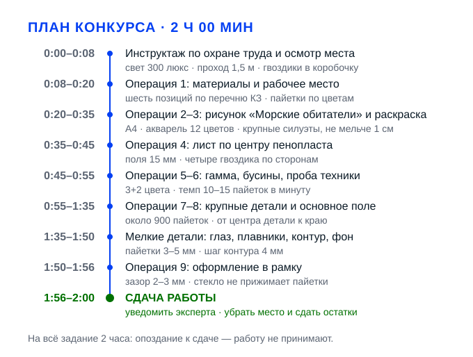
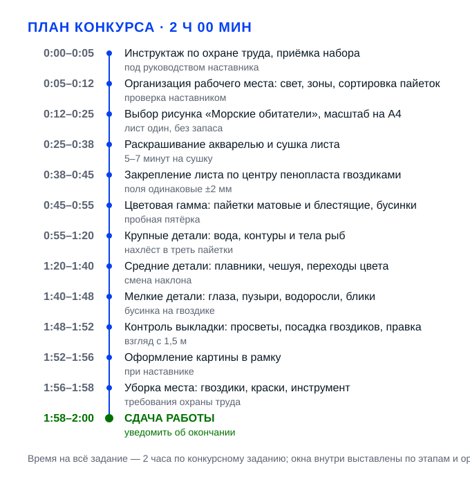
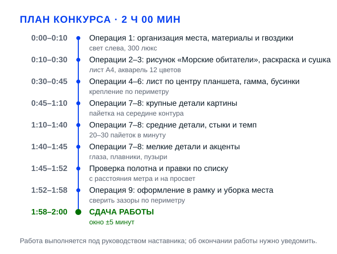

Изготовление картин из пайеток (ФВ)
Задания ниже — официальные файлы «Абилимпикс» (источник: abilympics-russia.ru), разложенные по категориям. Решения написаны по тексту задания, регламенту и критериям оценки; в них указано, что именно проверяет эксперт.
Школьник
14–16 лет, базовый уровень заданияВ официальном файле категории не разделены отдельными разделами — приводим задание целиком; различия по категориям смотрите в таблице модулей.
Пошаговое решение
Задание для школьников — картина из пайеток «Морские обитатели», на всю работу отводится 2 часа, а на столе шесть позиций: пенопласт, лист А4, акварель 12 цветов, гвоздики, пайетки и бусинки. В задании девять операций: подготовка материалов, выбор и печать рисунка, раскрашивание, крепление листа по центру пенопласта, цветовая гамма, подбор бусинок, выкладывание от крупного к мелкому, крепление пайетки с бусинкой и оформление в рамку. Таблицы баллов в задании нет: картину смотрят целиком, и цена мелочи — просвета между пайетками, косого края, пятна краски — выше, чем кажется. Главный риск здесь не техника, а время: за 120 минут при темпе 10–15 пайеток в минуту реально закрыть 1200–1600 пайеток, поэтому фон остаётся крашеным, а пайетками набираются силуэты. Решение ниже построено вокруг этого расчёта: сначала считаем площадь и выбираем рисунок, потом основу и только затем берём в руки гвоздик.

Задача 1. Организовать рабочее место и проверить материалыЭтап А · операции 1–3 КЗ · ≈20 минут
До первого гвоздика должно быть ясно, что лежит на столе и где именно. Пенопласт толщиной 20–30 мм, лист А4 с рисунком, акварель, гвоздики, пайетки и бусинки — шесть позиций, и каждая проверяется на пригодность до старта, потому что заменить что-то в середине работы будет уже нечем. Параллельно снимаются риски: разложенные по коробочкам гвоздики, освещённое место, свободный проход шириной не меньше 1,5 м. Эти двадцать минут не отнимают время у картины, а возвращают его: без подготовки первые полчаса уходят на поиск и пересчёт.
Действие 1.1. Пройти инструктаж и снять риски на месте
Шаг 1.1.1
Инструктаж по охране труда слушаем стоя, с листом задания в руках, и сразу отмечаем карандашом три вещи: где аптечка, где огнетушитель и кто из экспертов отвечает на вопросы по ходу работы. Вопросы задаём тут же, до старта: можно ли взять дополнительную коробочку под гвоздики, как правильно переносить пенопласт, где хранятся запасные пайетки. Отдельно уточняем, выдаются ли материалы на одно рабочее место целиком или вторая партия лежит у главного эксперта и просить её придётся через него.
По разделу 5 конкурсного задания участник допускается к работе только после инструктажа по безопасным приёмам и охране труда, и это фиксируется до старта. Гвоздики длиной 10–15 мм — колющий инструмент, а обкусанная пайетка даёт острую кромку, поэтому правила «не брать в рот», «не разбрасывать по столу» и «упавшее сразу поднимать» относятся к вашей же безопасности. Вопрос, заданный сейчас, стоит десять секунд, а в середине модуля — пять минут.
Проверьте себя тремя вопросами: можете ли вы, не поворачиваясь, показать рукой аптечку, знаете ли, к какому эксперту идти с вопросом, и понятно ли, где брать материалы. Если хотя бы на один ответа нет — спросите сейчас, а не через сорок минут.
Классическая ошибка — кивнуть и не слушать, а потом искать огнетушитель вслепую. Вторая — постесняться спросить про запас пайеток: в середине работы не хватает двух цветов, гамму приходится менять на ходу, силуэт распадается, и двадцать минут уходят на переделку уже выложенного участка.
Эксперт смотрит, как участник ведёт себя на инструктаже и задаёт ли вопросы. По этому видно, будет работа осознанной или пойдёт «по картинке», и первое впечатление складывается именно здесь.
Шаг 1.1.2
Осматриваем место до того, как что-то разложить. Свет должен падать слева и спереди, если вы правша, и не давать тени от собственной руки на рабочую зону: по требованиям к оснащению рабочего места с нарушением зрения освещённость — не менее 300 люкс, при такой освещённости отверстие в пайетке видно без напряжения. Проход между столами по КЗ — 1,5 м, поэтому сумку и рюкзак ставим под стол, а не сбоку. Пенопласт кладём на стол так, чтобы он не свисал с края: свисающий угол ломается от первого же нажатия гвоздика.
Свет и свободный проход — не украшение, а условие качества: пайетка диаметром 5–6 мм с отверстием меньше миллиметра, и при плохом свете промахнуться мимо отверстия легче, чем попасть. Свисающий пенопласт — самая частая причина трещины по центру картины, а трещина видна на готовой работе как белая полоса и уже не исправляется. Кроме того, осмотр места входит в требования охраны труда перед началом работы.
Положите руку на стол в рабочей зоне: тень не должна закрывать точку, куда будете колоть. Пройдите взглядом от своего стула до соседнего места — расстояние должно быть не меньше 1,5 м. Пенопласт лежит целиком на столе, все четыре угла на весу не висят.
Работать в тени собственной руки: гвоздик уходит рядом с отверстием, пайетка встаёт косо, и таких «косых» к середине набирается десятка два. Вторая ошибка — оставить пенопласт на весу: к моменту выкладывания крупной детали он лопается по краю, и лист с рисунком перекашивается.
Эксперт проходит по ряду в первые минуты и отмечает, у кого рабочее место организовано, а у кого нет. На качество картины это влияет косвенно, но на организацию работы — прямо.
Шаг 1.1.3
Гвоздики пересыпаем из пакета в плоскую коробочку или на магнитную полоску — исключительно ради того, чтобы они не катались по столу. Считаем их сразу: удобно разложить по десять штук и запомнить, что в работе 60–80 штук, а про запас остаётся ещё столько же. Один гвоздик кладём отдельно, рядом с пенопластом, как рабочий: его удобно брать первым и по нему проверять, не тупится ли остриё.
Упавший гвоздик — это либо травма, либо потерянное время на поиски под столом, либо, что хуже, гвоздик, случайно вколотый в картину в неверном месте. Пересчёт в начале нужен не для отчётности: когда картина закрыта на две трети, вы должны знать по числу оставшихся, хватает ли материала до конца, и успеть попросить добавку до того, как начнёте экономить и разрежать ряды.
Все гвоздики в коробочке, на столе не осталось ни одного, число записано. Рабочий гвоздик держится в пальцах без усилия, остриё не гнётся, головка не шатается при нажатии — если гвоздик гнётся, берём другой, а этот откладываем.
Оставить гвоздики россыпью рядом с листом: один-два неизбежно попадают под ладонь, и вместо ровного ряда получается вколотый «не туда» гвоздик, который потом вынимается с расширением отверстия. Вторая ошибка — не считать: на последней трети картины материал заканчивается, ряды становятся реже, и вместо плотного поля видна крашеная бумага.
Эксперт обращает внимание на культуру работы с колющим материалом: коробочка, магнит или лоток вместо россыпи — признак того, что участник работал с пайетками раньше и знает, чем это заканчивается.
Действие 1.2. Проверить материалы по перечню
Шаг 1.2.1
Сверяем стол с перечнем из КЗ и отмечаем карандашом каждую позицию: пенопласт, лист А4, акварель 12 цветов, гвоздики, пайетки, бусинки. Смотрим не только наличие, но и состояние: кисть не разлохмачена, краски влажные, а не каменные, лист не помят, пенопласт без сколов на лицевой стороне. Если чего-то нет или позиция в негодном виде — идём к эксперту сразу, до старта, коротко называя, что именно не так.
Операция 1 задания — «подготовить необходимые материалы и инструменты», и она выполняется целиком до начала работы: после старта замена идёт только через главного эксперта. Сухие акварельные краски — это не мелочь: на размачивание уходит 5–7 минут, а фон нужно залить в первые двадцать минут, пока сохнет. Проверка «по перечню», а не «на глаз» ещё и дисциплинирует: видно, что всё на месте, и не нужно возвращаться к этому вопросу.
Все шесть строк перечня отмечены. На листе бумаги нет заломов, пенопласт ровный, краски мягкие под кистью, в палитре есть белила и синий — без них не сделать воду. Если чего-то не хватает, факт обращения к эксперту зафиксирован.
Начать с рисунка, не проверив краски: в середине заливки фона выясняется, что синий засох в камень, фон получается грязным, а переделывать его уже не на чем. Вторая ошибка — обнаружить нехватку и промолчать, рассчитывая «обойтись»: в результате картина собирается из того, что есть, и вместо морской гаммы выходит случайный набор цветов.
Эксперт видит, сверялся ли участник с перечнем или импровизировал, и учитывает это в оценке организации работы. Отдельно отмечается, сообщил ли участник о нехватке до старта.
Шаг 1.2.2
Пенопласт проверяем руками и на просвет: толщина 20–30 мм, поверхность ровная, без трещин, вмятин и осыпающихся крошек. Ногтем проводим по кромке: если материал крошится шариками, гвоздик в нём будет держаться слабо, и такой лист лучше заменить сразу. Мягкий пенопласт узнаётся по вмятине от подушечки пальца: если след остался глубиной больше миллиметра, пайетка при вкалывании утопится вместе с бусиной и «утонет» в основе.
Пенопластовый планшет — единственное, что держит всю картину: каждая пайетка висит на гвоздике, вколотом в этот материал. На слишком мягком гвоздик проворачивается и пайетка встаёт на ребро; на слишком жёстком, крошащемся — остриё выкрашивает ямку, и пайетка держится на честном слове. Проверка занимает минуту и снимает самый неприятный риск: осыпавшуюся картину на сдаче не восстановить.
Надавите большим пальцем в трёх точках: след должен восстанавливаться, а не оставаться вмятиной. Проведите ногтем по кромке — шарики не отлетают. Пенопласт лежит лицевой стороной вверх, сколов на этой стороне нет.
Взять первый попавшийся лист, не проверив: через сорок минут выясняется, что гвоздики в нём держатся только до первого наклона, и половина уже выложенной рыбы «шевелится». Вторая ошибка — не заметить трещину: она расходится как раз по линии, где идёт контур, и силуэт разваливается на две части.
Эксперт может пощупать основу и посмотреть, не крошится ли край под пальцами. Основа входит в оценку качества изделия: картина должна держаться, а не осыпаться при переносе.
Шаг 1.2.3
Пайетки разбираем по диаметру: крупные 7–8 мм пойдут на тела рыб, средние 5–6 мм на плавники и водоросли, мелкие 3–4 мм на глаза, пузыри и контур. Проверяем отверстие: гвоздик должен проходить свободно, но пайетка не должна болтаться на нём, как кольцо. Бусинки перебираем по размеру 3–4 мм и отбрасываем те, у которых скол или отверстие забито краской: такая бусина сядет косо и будет цепляться за соседние пайетки.
Операции 5 и 6 задания прямо говорят про цветовую гамму и подбор бусинок, и начинается это с сортировки по размеру. Разнокалиберные пайетки в одном ряду дают «рябь»: плоскость выглядит бугристой, даже если все они приколоты ровно. Засорённое отверстие — скрытый брак: гвоздик входит туго, пайетка садится с перекосом, и исправлять это придётся выниманием, а каждое вынимание расширяет дырку в пенопласте.
Возьмите по одной пайетке каждого размера и положите на лист: разница видна на глаз, линейкой — не меньше 1,5 мм между группами. Проденьте гвоздик в пять случайных пайеток: все проходят без усилия. Бусинки с браком отложены в сторону, а не в общую кучу.
Смешать все пайетки в одну коробку «потом разберу»: в работе приходится щуриться и выбирать нужный размер из общей массы, темп падает вдвое, и вместо 12–15 пайеток в минуту получается 6–7. Вторая ошибка — оставить бусины со сколом: они цепляют нитки и волокна, и картина «лохматится» по краям.
Эксперт смотрит на сортировку сразу: разложенные по ячейкам пайетки — признак того, что участник думает о темпе и о ровности поля. Сортировка по диаметру для него — маркер того, что участник понимает технику нахлёста.
Действие 1.3. Разложить материалы по зонам
Шаг 1.3.1
Делим стол на три зоны и держим их до конца работы: слева — пайетки по цветам в крышках или ячейках, по центру — пенопласт с листом, справа — коробочка с гвоздиками, бусины и рамка. В каждой крышке не больше двух-трёх оттенков, иначе выбор цвета превращается в перебирание. Крышки ставим так, чтобы край был направлен к вам: пайетку удобно брать подушечкой пальца, а не сгребать всей горстью.
Плотное поле пайеток собирается из повторяющихся движений, и каждое лишнее движение умножается на полторы тысячи. Когда цвета разложены по зонам, рука идёт по короткой дуге «крышка — основа — гвоздик», и темп держится на 10–15 пайетках в минуту. Когда всё в одной куче, каждые десять секунд тратится на поиск, и к концу второго часа не хватает уже не сил, а времени.
Посмотрите на стол сверху: слева цветные крышки, в центре свободная рабочая площадка вокруг будущей картины, справа инструмент. Между зонами остаётся ладонь свободного места — так вы не снесёте крышку локтем.
Свалить всё в одну коробку и «разбираться по ходу»: цветные пайетки липнут друг к другу, выбранная уезжает из-под пальца, и вместо выкладывания идёт ковыряние. Вторая ошибка — поставить крышки так, что они мешают локтю: одно неосторожное движение, и сантиметровая горка пайеток летит на пол.
Эксперт обходит рабочие места в первые двадцать минут и по раскладке видит, кто уже работал с пайетками, а кто взял их в руки впервые. Отдельно отмечается, нет ли на столе открытой воды и лишних предметов рядом с основой.
Шаг 1.3.2
Садимся так, чтобы локоть лежал на столе, а не висел: тогда кисть работает пальцами, а не всей рукой, и точность попадания в отверстие вырастает заметно. Пенопласт поднимаем над столом на 5–7 см, подложив книгу или коробку: если работать на столешнице, приходится сутулиться, шея устаёт через полчаса, и к третьему часу работы (с перерывами) точность падает. Стул по КЗ регулируется, поэтому подгоняем высоту под себя, а не наоборот.
Работа с пайетками — это полторы тысячи мелких точных движений, и всё определяет посадка. При наклоне головы больше сорока градусов через сорок минут появляется тяжесть в шее и рука начинает «гулять». Требования к оснащению рабочих мест в КЗ отдельно оговаривают регулировку высоты и наклона стола и сиденья — именно ради этого: участнику должно быть удобно работать всё задание, а не первые десять минут.
Проверьте три точки: стопы полностью на полу, локоть на столе без напряжения в плече, глаза на расстоянии 30–40 см от основы. Просидите так минуту — если хочется выпрямиться или подложить руку под голову, посадка неверная.
Работать «как получилось», низко склонившись над столом: через полчаса рука начинает дрожать, гвоздик вкалывается рядом с отверстием, и пайетка идёт на ребро. Вторая ошибка — держать пенопласт на весу в левой руке: основа прогибается, и ряды получаются с перекосом.
Эксперт оценивает эргономику косвенно, через результат: ровное поле и чистый край бывают у тех, кто сидит правильно и не торопится в ущерб точности. Заметная усталость к концу второго часа тоже видна по неровности поля.
Шаг 1.3.3
Готовим лоток или лист-подложку с бортиком для тех пайеток, которые уже набраны в работу: удобно насыпать по двадцать штук нужного цвета рядом с рабочим участком и брать из этой горки. Тут же держим пинцет, если он есть, и зубочистку: зубочисткой удобно поправлять пайетку, не снимая её с гвоздика. Открытую воду и напитки со стола убираем сразу — капля на пенопласте оставляет вмятину, которая потом читается как дырка в поле.
Набор пайеток «под руку» — это способ не переключать внимание с картины на коробку. Двадцать штук в горке хватает на один ряд крупной детали, и за это время вы ни разу не отвлекаетесь на выбор цвета. Зубочистка и пинцет — страховка: поправить пайетку пальцем можно только сняв её с гвоздика, а это лишнее расширение отверстия в основе.
На подложке лежит горка пайеток одного цвета, рядом зубочистка. Наклоните подложку на десять градусов — пайетки не скатываются на стол. На рабочей части стола нет ни одного предмета, который может опрокинуться на картину.
Набрать сразу по сто пайеток каждого цвета: горка рассыпается при первом неловком движении, часть падает на пол, и приходится ползать под столом. Вторая ошибка — держать рядом стакан с водой: одно движение локтя, и вода уходит под лист, а вместе с ней и краска с фона.
Эксперт замечает такие детали, когда проходит мимо в середине работы: аккуратно набранные пайетки и отсутствие лишнего на столе говорят о профессиональной привычке.
Задача 2. Выбрать рисунок, раскрасить и закрепить на пенопластеЭтап Б · операции 2–4 КЗ · ≈20 минут
Рисунок здесь — не украшение, а разметка: по нему вы будете понимать, где кончается тело рыбы и начинается вода, и сколько пайеток вообще влезет в отведённые 120 минут. Поэтому выбор мотива подчинён расчёту: крупные силуэты, замкнутые контуры, минимум мелкой детализации. Раскрашиваем лист в те цвета, которые будут у пайеток, чтобы просветы между ними читались как тень, а не как дырка. Затем лист встаёт строго по центру пенопласта и держится четырьмя гвоздиками по краям — так, чтобы не сползал под ладонью.
Действие 2.1. Выбрать мотив и выполнить рисунок
Шаг 2.1.1
Выбираем мотив из серии «Морские обитатели» по одному правилу: крупные пятна занимают не меньше шестидесяти процентов площади рисунка. Проверяем просто — смотрим на выбранную картинку и считаем, сколько в ней мелких элементов размером меньше сантиметра: чешуйки, точки, тонкие линии. Если таких больше десятка, мотив для двух часов не годится, как бы он ни нравился. Хороший вариант — две-три рыбы разного размера, осьминог или морская звезда с водорослями: у них плотное тело и ясный контур.
Операция 2 задания — «выбрать понравившийся рисунок», но выбор ограничен временем: на всё задание 2 часа, а пайетка с бусиной занимает 4–5 секунд работы. Если рисунок требует двух тысяч пайеток, вы не успеете его закрыть и получите половину картины с крашеными пустотами. Мотив с крупными пятнами даёт плотное блестящее поле и при этом оставляет запас времени на мелкие детали, которые как раз и делают работу узнаваемой.
Прикиньте на глаз площадь главного силуэта относительно всего листа — он должен занимать примерно половину. Отойдите на полтора метра: если мотив узнаётся сразу, контуры замкнуты и не размыты, рисунок годится.
Взять красивую детализированную картинку с чешуёй и мелкими брызгами: к середине работы выложена треть, и участник начинает разрежать ряды, чтобы успеть. В результате вместо плотной картины — редкая сетка пайеток на крашеной бумаге.
Эксперт оценивает соответствие работы теме «Морские обитатели» и общую композицию. Перегруженный мелкими деталями мотив почти всегда приводит к незаконченной картине, и это видно сразу.
Шаг 2.1.2
Распечатываем рисунок на листе А4 или рисуем от руки — по КЗ оба пути равноправны. Если печатаем, ставим масштаб «на всю страницу», без полей: картинка должна занять лист целиком. Если рисуем, начинаем карандашом с габаритов: сначала рамка будущей композиции с отступом 15 мм от края листа, потом крупные силуэты, и только в конце мелкие детали. Линии ведём мягким карандашом, без нажима — потом по ним пойдут краски, и жёсткий графит проступит сквозь акварель.
Лист А4 — единственный размер, который прямо назван в перечне материалов, и весь расчёт по пайеткам идёт от него: 210 на 297 мм при пайетке 6 мм дают примерно 4500 позиций при полном заполнении, из которых за 120 минут реально закрыть треть. Отступ 15 мм нужен не для красоты: по этому полю лист крепится гвоздиками к пенопласту, и если рисунок упирается в край, крепление попадает в саму картину.
Лист лежит на пенопласте, поля со всех четырёх сторон одинаковые — около 15 мм. Крупные силуэты не обрезаны краем листа, самая мелкая деталь не меньше 5 мм, иначе пайетка её перекроет. Проверьте линейкой: поля одинаковые, рисунок не выходит за рамку композиции.
Нарисовать «на глаз», без габаритной рамки: к правому краю композиция съезжает, поля получаются 5 мм слева и 30 мм справа, и закрепить лист по центру уже нечем. Вторая ошибка — давить на карандаш: графит проступает через акварель тёмными полосами, и фон выглядит грязным.
Эксперт смотрит на композицию в целом: центрирование, поля, читаемость силуэта. Неровные поля видны на готовой картине в рамке сразу. Печатный или рисованный эскиз — неважно: оценивают результат, а не способ.
Шаг 2.1.3
Проверяем рисунок «на будущее»: мысленно раскладываем пайетки по контуру и смотрим, где они встанут в один ряд, а где потребуется второй. Места, где линия тоньше диаметра пайетки, сразу расширяем — иначе деталь исчезнет под блеском. Отдельно отмечаем, какие участки останутся без пайеток: обычно это фон, дно и вода, и именно их надо будет залить краской особенно аккуратно.
Пайетка закрывает 5–8 мм, и тонкая линия плавника под ней просто пропадает. Понимание того, что останется крашеным, определяет всю дальнейшую работу: вы перестаёте бороться за мелкие детали и вкладываете время в плотное поле на главном силуэте. Это же решение экономит материалы — пайеток на такой рисунок уходит примерно на треть меньше, чем при попытке закрыть весь лист.
Возьмите одну пайетку и приложите к самой тонкой линии: линия должна быть видна по обе стороны от неё. Если пайетка накрывает деталь целиком — деталь укрупняется сейчас, на карандаше, а не после сотни вколотых гвоздиков.
Оставить тонкие линии как есть: после выкладывания плавники и усики исчезают, силуэт превращается в бесформенное пятно, а участник ещё долго ищет, почему «не похоже». Вторая ошибка — планировать пайетки по всему листу, включая фон: времени хватает на треть, и картина остаётся недоделанной.
Эксперт проверяет, читается ли образ: узнаваемость морского обитателя — главный критерий темы. Размытый силуэт снижает оценку независимо от аккуратности выкладывания.
Действие 2.2. Раскрасить рисунок и просушить
Шаг 2.2.1
Начинаем с фона: смачиваем лист чистой водой широкой кистью, не заходя на силуэты, и заливаем воду от верхнего края к нижнему, добавляя синий и каплю фиолетового у нижней кромки. Краску берём на кисть щедро, но не льём лужи: лужа при высыхании даёт тёмную кайму по краю пятна. Воду пишем градиентом — сверху светлее, к низу глубже, так готовая картина получает ощущение глубины даже там, где пайеток нет.
Операция 3 задания прямо требует раскрасить рисунок и дать краскам высохнуть. Фон важнее, чем кажется: пайетки закроют примерно половину листа, а остальное будет видно, и именно фон создаёт цветовую среду вокруг силуэтов. Градиент работает ещё и как страховка: там, где пайетка сядет редко, просвет будет выглядеть как тень воды, а не как пропущенное место.
Поднимите лист на уровень глаз при боковом свете: переход от светлого к тёмному плавный, без резких границ и без светлых «звёзд» от капель. Лист не должен быть мокрым насквозь — если вода стоит блеском, промокните уголком салфетки.
Налить воду насухо, без смачивания: краска ложится пятнами, на границе остаются тёмные разводы, и фон выглядит грязным. Вторая ошибка — залить фон слишком тёмным: тёмно-синяя заливка глушит блеск пайеток, и картина теряет главный эффект.
Эксперт смотрит на живописную часть работы: аккуратность заливки, сочетание цветов, отсутствие грязных разводов. Это видно даже сквозь пайетки. Отдельно видно, перекрывает ли заливка будущие пайетки или остаётся под ними.
Шаг 2.2.2
Силуэты раскрашиваем в те цвета, которые будут у пайеток, но на тон-два темнее: тело рыбы — тёплым оранжевым или жёлтым, тень под брюхом — холодным коричневым, водоросли — зелёным с примесью синего. Краски накладываем по сухому фону, не размывая границу: под пайетками всё равно будет видно только узкие просветы, и задача — чтобы эти просветы читались как тень, а не как светлое пятно.
Приём «краска темнее пайетки» — главный секрет плотной картины: между пайетками всегда остаются щели шириной 1–2 мм, и если под ними светлая бумага, поле выглядит дырявым. Тёмная подложка превращает щели в контур, и на расстоянии полутора метров картина читается как сплошное блестящее пятно. Это же решает проблему неравномерного заполнения: редкие места не выдают себя.
Приложите пайетку нужного цвета к раскрашенной детали: пайетка должна быть светлее подложки, но того же оттенка. Просвет в миллиметр между двумя пайетками, положенными на краску, выглядит как тень, а не как бумага.
Красить силуэт в тот же тон, что и пайетки, или светлее: щели начинают блестеть белым, и поле выглядит недоделанным. Вторая ошибка — красить по мокрому фону: краски смешиваются, рыба получает зелёный ореол, и этот ореол останется вокруг силуэта навсегда.
Эксперт оценивает цветовое решение: подложка под пайетками должна работать на общий образ, а не спорить с ним. Отдельно проверяют, нет ли на силуэте светлых пятен: они читаются как пробелы в работе.
Шаг 2.2.3
Сушим лист на ровной поверхности при комнатной температуре, не на батарее и не под прямым потоком горячего воздуха — от него акварель «садится» и лист ведёт волной. Если времени мало, ускоряем аккуратно: фен в режиме холодного воздуха, держим на расстоянии 30–40 см и водим по всей площади, а не в одну точку. Готовность проверяем тыльной стороной ладони: лист не должен быть холодным и влажным на ощупь.
По КЗ краскам нужно дать высохнуть, и это не формальность: на влажном листе гвоздик рвёт волокна бумаги, отверстие получается рваным, и пайетка садится с перекосом. Кроме того, мокрая бумага тянется, и после высыхания лист сжимается — закреплённый сырым, он потом натягивается и вырывает гвоздики по краям. Три-пять минут сушки экономят полчаса переделки.
Приложите тыльную сторону ладони к листу: не холодно и не влажно. Посмотрите на свет: тёмные и светлые участки одинаково матовые, без блеска сырой краски. Проведите пальцем по краю — краска не снимается.
Начать колоть гвоздики по сырому листу: бумага рвётся, гвоздик входит с трудом, отверстие вокруг него белеет, а после высыхания вокруг пайетки появляется рваный светлый ореол. Вторая ошибка — сушить на батарее: лист ведёт волной, и закрепить его ровно уже невозможно.
Аккуратность основы видна в готовой работе: рваные отверстия и волнистый лист заметны по краю картины и под рамкой. Если лист поведёт после сушки, эксперт увидит волну под рамкой, и это уже не исправить.
Действие 2.3. Закрепить лист по центру пенопласта
Шаг 2.3.1
Находим центр пенопласта без линейки, по диагоналям: натягиваем нитку от угла до угла, отмечаем точку пересечения, повторяем для второй пары углов — обе отметки должны совпасть. Затем накладываем лист так, чтобы его центр совпал с найденной точкой, и проверяем поля: слева, справа, сверху и снизу должно остаться одинаково, около 15 мм. Поля меряем не на глаз, а полоской бумаги с отмеченной шириной — так быстрее и точнее.
Операция 4 задания требует наложить лист «строго по центру» — и это единственная операция, где ошибка в сантиметр видна на готовой картине сразу, потому что рамка подчёркивает перекос. Диагонали дают центр точнее линейки: пенопласт часто имеет сколотый или неровно отрезанный край, и от него отсчитывать нельзя. Ровные поля — это ещё и запас на крепление: гвоздики ставятся именно в них.
Проверьте поля в четырёх точках: расхождение не больше 2 мм. Диагонали листа и пенопласта идут параллельно друг другу — если одна заваливается, лист повёрнут. Углы листа должны быть на одинаковом расстоянии от углов пенопласта, проверяйте по два.
Приложить лист «примерно» и приколоть: перекос в 5–10 мм замечают все, а исправлять его придётся снятием гвоздиков, и в пенопласте останутся лишние дырки по краю. Вторая ошибка — центровать по краю пенопласта: если он отрезан криво, лист встанет косо относительно самого планшета.
Эксперт сразу видит центрирование: в рамке перекос читается как небрежность, даже если пайетки выложены идеально. Небольшой перекос он измеряет по полям: разница в два миллиметра уже считается ошибкой.
Шаг 2.3.2
Крепим лист четырьмя гвоздиками — по одному в середину каждой стороны, отступив от края листа 5 мм и не заходя в рисунок. Гвоздик вводим под небольшим наклоном от центра листа к краю, чтобы шляпка прижимала бумагу, а не стояла над ней. Если лист «пузырит» между гвоздиками, добавляем по одному гвоздику в углы — и только после этого переходим к работе.
Четыре гвоздика по сторонам держат лист ровно и при этом оставляют возможность поправить: снять один и подтянуть угол проще, чем переделывать всё крепление. Наклон гвоздика от центра — приём из практики: вертикально вколотый гвоздик держит бумагу только шляпкой, и лист под ладонью проворачивается, а наклонный прижимает его по всей длине стержня.
Проведите ладонью по листу от центра к краям: бумага не сдвигается и не морщится. Ни один гвоздик не попал в рисунок. Углы листа не загнуты вверх. Проверьте угол: если лист можно сдвинуть пальцем на миллиметр, добавьте пятый гвоздик.
Приколоть лист двумя гвоздиками «пока так»: под ладонью лист ездит, контур смещается, и ряды пайеток идут не по рисунку, а рядом с ним. Вторая ошибка — загнать гвоздик в сам рисунок: он закроет часть силуэта и будет мешать выкладыванию в этом месте.
Эксперт обращает внимание на аккуратность монтажа: лист должен лежать ровно, без волн и заломов, и не смещаться при работе. Лист, приколотый косо, сдвигает весь рисунок относительно рамы.
Шаг 2.3.3
Последняя проверка перед выкладыванием: кладём ладонь на центр листа, слегка прижимаем и отпускаем — лист должен вернуться на место без складок. Смотрим на основу сбоку, на уровне стола: если видна волна или лист где-то отходит от пенопласта, добавляем гвоздик в этом месте. Заодно проверяем, что пенопласт не шатается на столе: подложите под неровный угол сложенную салфетку, чтобы основа стояла неподвижно.
Любая волна на листе превращается в проблему при выкладывании: пайетки на бугре встают выше соседних, поле получается бугристым, а гвоздик в месте подъёма входит не на полную глубину и держит слабо. Проверка занимает полминуты, а исправлять приходится уже выложенный участок, снимая десятки гвоздиков.
Ладонь на центр, лист возвращается без складок; сбоку не видно просвета между листом и пенопластом; основа не качается при нажатии пальцем на угол. Простучите основу пальцем: глухой ровный звук означает, что лист прилегает по всей площади.
Пропустить эту проверку: первые двадцать пайеток ложатся ровно, а на двадцать первой выясняется, что основа «играет», и весь ряд идёт с перекосом. Вторая ошибка — оставить качающийся пенопласт: при каждом нажатии он сдвигается, и точность попадания падает.
Эксперт проверяет, насколько плотно лежит основа, когда подходит к работе в середине модуля: шатающаяся основа и волны на листе видны сразу. Волна под пайетками видна на просвет при наклоне работы.
Задача 3. Выложить картину пайеткамиЭтап В · операции 5–8 КЗ · ≈70 минут
Собственно картина: полторы тысячи пайеток, каждая на своём гвоздике, каждая в своём месте. Здесь важны две вещи — направление работы и плотность. Идём от крупных деталей к мелким, от центра каждой детали к её краю, и держим такой темп, при котором на всю картину хватает времени. Поле должно быть плотным настолько, чтобы крашеная бумага не просвечивала белым, а блеск ложился ровно, без «провалов» и бугристых мест.
Действие 3.1. Продумать цветовую гамму и подобрать бусины
Шаг 3.1.1
Раскладываем пайетки прямо на рисунке, без гвоздиков, и смотрим на сочетание: на тело рыбы кладём оранжевый, на плавники — жёлтый, на воду вокруг — синий и голубой. Держим в работе не больше трёх основных цветов и двух акцентных: пять оттенков — предел, при котором картина остаётся цельной. Пайетки с блестящей поверхностью ставим на главный силуэт, матовые — на фон и второй план: матовые не перебивают главный объект бликами.
Операция 5 задания требует продумать цветовую гамму до начала выкладывания, и это тот случай, когда пять минут размышления экономят полчаса переделки. Пайетки очень активны по блеску: там, где на картинке спокойное поле, десять оттенков превращаются в кашу, и глаз не находит главное. Блестящие и матовые поверхности в КЗ названы отдельно именно потому, что они по-разному ведут себя при одном и том же цвете.
Отойдите на полтора метра и прищурьтесь: главный силуэт должен читаться как пятно одного цвета, а не как лоскутное одеяло. Если глаз «спотыкается» на пёстрости в одном месте — это место надо упростить до двух оттенков.
Собрать все яркие цвета, какие есть: картина становится пёстрой, блеск перебивает силуэт, и морской обитатель перестаёт узнаваться. Вторая ошибка — поставить блестящие пайетки на фон: фон начинает «светить» сильнее главного объекта, и композиция переворачивается.
Эксперт оценивает цветовое решение и цельность образа. Пёстрое поле читается как отсутствие замысла, даже если техника безупречна. Отдельно оценивают, держится ли единая цветовая линия от детали к детали.
Шаг 3.1.2
Проверяем гамму на пробнике: берём обрезок пенопласта или угол листа и вкалываем по пять пайеток каждого цвета в том порядке, в каком они будут лежать. Смотрим на пробник при том же свете, что и на рабочем месте, а не у окна: у окна всё выглядит на тон холоднее. Если два оттенка на пробнике сливаются в одно пятно, в картине их надо разводить по разным деталям, а не ставить рядом.
Пробник — единственный способ увидеть, как пайетки работают вместе, до того как они вколоты в картину. Пять пайеток на пробнике стоят минуту, а ошибка в гамме на главном силуэте — это двести вынутых гвоздиков и расширенные отверстия, которые потом видно как тёмные точки. Именно на стыке двух близких оттенков чаще всего и возникает «провал» в поле.
На пробнике каждый цвет читается отдельно, граница между оттенками видна. Посмотрите на пробник с расстояния вытянутой руки и под углом 45 градусов: блеск не должен «съедать» разницу между соседними цветами.
Пропустить пробник и начать сразу с картины: на третьем десятке пайеток выясняется, что два оранжевых неразличимы, и часть уже выложенного тела приходится перебирать. Вторая ошибка — проверять гамму у окна: при рабочем освещении цвета выглядят иначе.
Эксперт смотрит на поле целиком и на то, как в нём работают переходы цвета. Слипшиеся оттенки снижают впечатление от работы. Если два оттенка на поле неразличимы, он считает это ошибкой цветового решения.
Шаг 3.1.3
Подбираем бусины под пайетки: диаметр 3–4 мм, цвет либо в тон пайетке, либо на тон темнее, чтобы бусина работала как точка-акцент. Раскладываем их в отдельную крышку и проверяем насаживание: бусина должна садиться на гвоздик до упора и не проваливаться сквозь отверстие пайетки. Если бусина меньше отверстия, она провалится и пайетка останется неприжатой — такие откладываем сразу.
Операция 6 задания — подобрать бусинки по цвету, и здесь важен не только цвет: по КЗ бусина насаживается на гвоздик и прижимает пайетку к основе. Если диаметр подобран неверно, вся конструкция перестаёт работать — пайетка болтается, цепляется за соседние и выходит из общего ряда. Тёмная бусина к тому же даёт нужный эффект «точки»: поле пайеток выглядит как чешуя с прожилками.
Соберите один узел полностью: гвоздик, пайетка, бусина. Бусина сидит плотно, не проваливается, пайетка под ней не вращается. Разница в размере бусин в одной крышке не больше 0,5 мм. Проверьте пять узлов подряд: все бусины одинакового размера и ни одна не провалилась.
Взять бусины на глаз: половина проваливается сквозь пайетку, и такие узлы приходится разбирать прямо на картине. Вторая ошибка — крупные бусины 5–6 мм: они перекрывают пайетку целиком, блеск исчезает, и поле выглядит как бисерное, а не как пайеточное.
Эксперт смотрит на крепление: пайетка должна быть прижата, а бусина — работать как аккуратная точка, а не как набалдашник. Разнокалиберные бусины на поле читаются как случайные точки и разрушают ритм.
Действие 3.2. Освоить крепление пайетки гвоздиком с бусиной
Шаг 3.2.1
Собираем узел в пальцах левой руки, если вы правша: на указательный палец кладём пайетку выпуклой стороной вверх, сверху насаживаем бусину и придерживаем большим пальцем, а правой берём гвоздик и вводим остриё в отверстие бусины, затем в отверстие пайетки. Собранный узел ставим на нужную точку рисунка и вкалываем гвоздик строго вертикально, одним движением, на глубину 3–4 мм.
Операция 8 задания описывает именно такой порядок: пайетка, гвоздик с предварительно насаженной бусиной, вкалывание в основу. Порядок «сначала одеть, потом колоть» экономит движения: если колоть гвоздик, а потом искать, как надеть пайетку, темп падает втрое. Вертикальное вкалывание на 3–4 мм — условие ровного поля: под наклоном пайетка встаёт на ребро и выступает над плоскостью соседних.
Пайетка лежит плашмя, прижата бусиной, не вращается вокруг гвоздика. Гвоздик не вышел с обратной стороны пенопласта. Головка бусины не выше соседних пайеток больше чем на миллиметр. Проведите по полю ладонью: ни одна пайетка не должна цепляться за кожу.
Колоть гвоздик под углом: пайетка встаёт как тарелка на ребре, поле получается бугристым, и такие пайетки цепляют руку при работе. Вторая ошибка — вогнать гвоздик на всю длину: он проходит пенопласт насквозь и царапает стол, а пайетка проваливается в основу.
Эксперт смотрит на технику крепления: ровная плоскость и одинаковая высота пайеток — главный признак владения инструментом. Косо вколотые пайетки заметны под углом к свету, и их сразу видно на фотографии.
Шаг 3.2.2
Отрабатываем движение на пробном участке — десять пайеток в ряд по линии контура, с шагом 4 мм. Засекаем время: десять пайеток должны занимать не больше минуты, то есть 4–6 секунд на узел. Если получается медленнее, разбираем, где теряется время: на поиске отверстия, на насаживании бусины или на попадании в точку, и ускоряем именно это движение. Хронометраж ведём по трём рядам, чтобы цифра была честной, а не по одному удачному.
Расчёт простой: 120 минут задания минус 20 минут на организацию и эскиз, минус 25 минут на мелкие детали и оформление — остаётся примерно 70 минут чистого выкладывания. При темпе 12 пайеток в минуту это 840 пайеток, при темпе 20 — уже 1400. Без хронометража участник не знает своего темпа и не может спланировать, сколько деталей успеет, — а планировать придётся именно на этом числе.
Десять пробных пайеток выложены за минуту или быстрее, шаг между ними одинаковый, ряд не «гуляет» вверх-вниз. Отойдите и посмотрите на пробный ряд: он должен читаться как прямая линия. Третий ряд должен получиться быстрее первого — значит, движение закрепляется.
Не замерять темп и работать «как идёт»: к половине времени выясняется, что закрыта четверть картины, и дальше начинается спешка, при которой ряды идут криво и с пропусками. Вторая ошибка — гнаться за скоростью в ущерб точности: пайетка рядом с отверстием, но не в нём, разваливает контур.
Эксперт отмечает ритмичность работы: тот, кто нашёл свой темп, к концу модуля имеет законченную картину, а не половину. По ритму движений видно, отработана ли техника до автоматизма.
Шаг 3.2.3
Договариваемся с собой о правилах ряда, которые соблюдаем до конца: все пайетки выпуклой стороной вверх, ряды идут в одном направлении, каждая следующая пайетка перекрывает предыдущую на треть диаметра. Направление перекрытия выбираем как у рыбьей чешуи — от центра детали к краю, и держим его одинаковым по всей картине. Пробный участок разбираем, чтобы не путал с рисунком, и переходим на саму картину.
Нахлёст на треть диаметра — это и плотность, и эффект: при таком перекрытии между пайетками не остаётся сквозных щелей, свет ложится ровно, и поле выглядит как сплошная блестящая поверхность. Единое направление перекрытия обязательно: если одна часть «чешуи» идёт вниз, а другая вверх, на границе возникает полоса, которая читается как шов и разрушает силуэт.
Посмотрите на выложенный участок под углом: блеск идёт волной в одном направлении, а не «крест-накрест». Между пайетками не видно краски — только в узких щелях под нахлёстом. Прощупайте поле пальцем: нахлёст чувствуется как ровная черепица, а не как отдельные кружки.
Колоть пайетки как придётся, без нахлёста: между ними остаются щели шириной в миллиметр-два, и поле выглядит решёткой. Вторая ошибка — менять направление на середине детали: на стыке появляется заметная полоса, и рыба кажется разрезанной пополам.
Эксперт смотрит именно на плотность и направление: если поле «дышит» щелями, работа выглядит незаконченной независимо от количества пайеток. Он ищет на поле «проплешины»: место, где пайетки легли без нахлёста, видно как решётка.
Действие 3.3. Выложить крупные детали
Шаг 3.3.1
Начинаем с самой крупной детали — обычно это тело главной рыбы или осьминога. Первый ряд ведём по центру детали, а не по контуру: от середины расходимся к краям, и края закрываем последними. Ряды укладываем с нахлёстом, каждый следующий начинаем там, где закончился предыдущий, не перескакивая через участок. На деталь размером 60 на 100 мм уходит примерно 120–150 пайеток, и это 10–12 минут работы.
Операция 7 задания прямо предписывает идти от больших деталей к мелким, и это не только про порядок: пока выложено главное, видно общий образ, и можно понять, хватает ли контраста. Заполнение «от центра к краям» даёт ровное поле без волн — край всегда можно подрезать одной пайеткой, а вот впихнуть лишнюю в середину уже не получится.
Силуэт целиком читается как пятно нужного цвета, край обведён ровно, внутри нет пропусков больше 3 мм в диаметре. Прикиньте, сколько ушло пайеток: если на деталь ушло вдвое больше расчётного, вы слишком плотно перекрываете и не успеете остальное.
Начинать с контура и заполнять внутрь: к моменту, когда контур замкнут, середина остаётся пустой, а времени на неё уже нет. Вторая ошибка — выложить одну деталь с двойной плотностью: расход пайеток вырастает, и на остальные детали материала может не хватить.
Эксперт смотрит на последовательность работы, когда проходит мимо: правильный порядок «крупное — мелкое» виден по тому, что картина обретает форму постепенно.
Шаг 3.3.2
Тело рыбы ведём рядами от хвоста к голове: так чешуя ложится естественно, и нахлёст работает на образ. На каждом третьем ряду проверяем линию и при необходимости сдвигаем пайетку на полдиаметра, чтобы ряд не заваливался. Плавники и хвост выкладываем пайетками на размер меньше и другим оттенком — это единственное место, где допустим сдвиг направления нахлёста, потому что плавник сам по себе растёт в другую сторону.
Направление «от хвоста к голове» повторяет природную чешую и даёт два результата сразу: поле выглядит естественно и не возникает шва на стыке с плавниками. Другой оттенок на плавниках нужен для читаемости силуэта: одноцветная рыба на расстоянии превращается в пятно, и тогда не видно, что это именно рыба, а не просто овал.
Посмотрите на рыбу с расстояния полутора метров: видно голову, тело, хвост и плавники, границы между ними читаются. Линия спины ровная, без ступенек и провалов. Проверьте стык плавника и тела: там не должно быть светлой полосы краски.
Выложить тело одним цветом и одним размером пайеток: рыба сливается с фоном, силуэт не читается. Вторая ошибка — вести ряды от головы к хвосту вперемешку с обратным направлением: на границе возникает зубчатый шов, который уже не исправить.
Эксперт оценивает узнаваемость образа и аккуратность поля: естественное направление чешуи читается как опыт, «крест-накрест» — как спешка. Отдельно он смотрит на голову и хвост — по ним читается направление движения.
Шаг 3.3.3
Через каждые двадцать минут работы останавливаемся на десять секунд и сверяемся с планом: сколько деталей закрыто, сколько осталось, сколько пайеток израсходовано. Если к отметке 1:20 закрыта только половина главного силуэта, немедленно упрощаем — убираем второй план, оставляем одну рыбу и водоросли, вместо трёх рыб. Решение принимается один раз и больше не пересматривается.
Работа с пайетками затягивает: поле заполняется медленно, и ощущение времени теряется. Контрольные точки — единственный способ не оказаться в положении, когда до сдачи десять минут, а картина закрыта наполовину. Упрощение композиции на ходу — нормальный приём: законченная простая картина всегда оценивается выше, чем сложная и брошенная на середине.
На 1:20 у вас должно быть закрыто не меньше половины площади, отведённой под пайетки. Если меньше — упрощайте сейчас, а не через двадцать минут. Оставшихся пайеток должно хватать на запланированный объём с запасом в десять процентов.
Не останавливаться и не считать: время уходит на детализацию, а к сдаче крупные участки остаются крашеными. Вторая ошибка — начать упрощать в последние пятнадцать минут: перестраивать композицию уже поздно, и картина остаётся в переходном состоянии.
Эксперт оценивает законченность: цельная композиция без пустых зон весит больше, чем амбициозный замысел, закрытый наполовину. Он смотрит, где именно остановилась работа: брошенный край виден по редким пайеткам.
Действие 3.4. Добавить мелкие детали и оформить контур
Шаг 3.4.1
Глаз делаем бусиной 4–5 мм чёрного или тёмно-синего цвета, посаженной на отдельный гвоздик без пайетки: точка должна быть плотной и блестящей. Вокруг глаза выкладываем мелкие пайетки 3–4 мм в один ряд — это создаёт объём и не даёт глазу «утонуть» в крупном поле. Пузыри воздуха выкладываем по три-пять штук, разного размера, по диагонали от головы: они задают движение и заодно заполняют пустоту фона.
Операция 7 говорит заканчивать мелкими деталями, и именно они превращают пятно в образ: без глаза рыба читается как силуэт, с глазом — как рыба. Мелкие пайетки вокруг глаза решают техническую задачу: крупная пайетка рядом с бусиной встаёт выше и закрывает её, а мелкие ложатся вровень и держат плоскость.
Глаз виден с расстояния двух метров и не сливается с телом по цвету. Пузыри расположены группами, а не равномерно по всему фону, и не пересекаются с контуром главной рыбы. Проверьте, что глаз не перекрыт соседней пайеткой и виден целиком.
Сделать глаз пайеткой: на блестящем поле он теряется, и лицо рыбы исчезает. Вторая ошибка — рассыпать пузыри ровным горохом по всему фону: композиция становится плоской и похожей на обои. Третья ошибка — потерять глаз среди пузырей, тогда лицо теряет направление.
Эксперт смотрит на детали, которые создают образ: глаз, плавники, акценты. Их качество часто решает впечатление от всей работы. Он оценивает, есть ли у образа детали, по которым он узнаётся.
Шаг 3.4.2
Обводим контур главного силуэта пайетками среднего размера, ставя их по самой линии рисунка с шагом 4 мм — то есть с перекрытием примерно в треть диаметра. Контур ведём непрерывно, одной рукой, не отрываясь на другие детали: разрыв в контуре сразу читается как дефект. На углах и изгибах шаг уменьшаем до 3 мм, чтобы линия не «ломалась». Контур ведём в первую очередь по верхней линии силуэта, она читается лучше всего.
Контур — это граница, по которой глаз отделяет объект от фона, и в пайеточной технике он держит всю композицию. Непрерывная линия из пайеток одного размера читается ровно; если размер скачет или шаг меняется, линия выглядит рваной. На изгибах шаг 3 мм вместо 4 нужен потому, что при большем шаге между пайетками появляется угловатый излом, и плавник выглядит как прямоугольник.
Проведите взглядом по контуру: линия непрерывная, без светлых разрывов, на изгибах нет углов. Пайетки контура не выходят за линию рисунка больше чем на 1 мм. Проверьте на просвет: нигде между пайетками контура не видно белой бумаги.
Обводить контур «потом, если останется время»: контур не успевается, и силуэт расплывается в фон. Вторая ошибка — ставить на контур крупные пайетки: они съедают мелкие детали плавников, и форма искажается.
Эксперт первым делом смотрит на контур: ровная непрерывная линия — признак аккуратной работы, рваная — признак спешки. По контуру видно, работал ли участник с рисунком или выкладывал «по памяти».
Шаг 3.4.3
Водоросли выкладываем вертикальными рядами снизу вверх, пайетками зелёного и сине-зелёного цвета, с небольшим изгибом: каждые три-четыре пайетки сдвигаем на 2 мм в сторону, чтобы стебель «гнулся». Камни на дне делаем горизонтальными рядами более тёмного оттенка, вплотную друг к другу, без нахлёста — так они читаются как плотная масса. Дно и воду между деталями оставляем крашеными: это фон, и он должен остаться спокойным.
Разное направление рядов у разных объектов — приём, который делает картину живой: водоросли тянутся вверх, камни лежат, рыба плывёт, и глаз читает эти направления без подсказки. Плотные камни без нахлёста дают контраст к блестящему телу рыбы. Крашеный фон между деталями — не экономия, а композиция: пустая вода даёт глазу отдохнуть и делает силуэты заметнее.
Водоросли читаются как растения, а не как вертикальные полосы: есть изгиб и разная высота. Камни лежат плотно, без просветов бумаги между ними. Фон между деталями чистый, без случайно вколотых пайеток.
Выложить водоросли вертикальными линиями без сдвига: получаются полосы, похожие на столбики. Вторая ошибка — засыпать пайетками весь фон «чтобы блестело»: времени не хватает, а композиция теряет центр и становится однородной.
Эксперт оценивает композицию в целом: наличие планов, направлений и воздуха вокруг главного объекта. Он проверяет, не спорят ли направления: водоросли вверх, камни вбок, рыба по диагонали.
Действие 3.5. Проверить плотность поля и исправить дефекты
Шаг 3.5.1
Отходим от стола на полтора метра и смотрим на картину прищуренными глазами — так пропадают детали и видны пятна. Ищем три вещи: белые просветы, бугры и места, где цвет «проваливается». Затем смотрим под углом 30–45 градусов к свету: при таком взгляде сразу видны пайетки, вколотые не вертикально, — они блестят иначе, чем остальное поле. Замеченные места сразу помечаем зубочисткой, воткнутой рядом, чтобы не искать их заново.
Пайеточное поле проверяется только на расстоянии и под углом: вблизи видно каждую пайетку, и глаз не замечает общей картины, а именно она оценивается. Бугры и просветы — главные дефекты этой техники, и оба обнаруживаются на расстоянии за десять секунд. Если не проверить, они останутся и будут замечены экспертом при оценке.
С полутора метров поле выглядит ровным, без белых точек и пятен. Под углом блеск идёт одинаково по всей площади. Площадь с дефектами не больше ладони — иначе исправление съест время, отведённое на рамку.
Проверять картину вплотную, склонившись над столом: всё кажется ровным, а на расстоянии видно, что поле «дышит». Вторая ошибка — начать исправлять всё подряд: правки занимают последние двадцать минут, и картина остаётся без рамки.
Эксперт осматривает работу именно с расстояния и под углом к свету, поэтому дефекты поля для него очевидны. Он отходит и смотрит на работу целиком: на этом расстоянии дефекты поля проявляются сами.
Шаг 3.5.2
Дефектную пайетку снимаем аккуратно: придерживаем поле вокруг пальцем левой руки, а правой за головку гвоздика делаем пол-оборота и тянем строго вверх, без наклона. Отверстие после этого слегка приминаем ноготем или тупым концом зубочистки, чтобы края сошлись. Новый гвоздик ставим в ту же точку, но чуть иначе — со сдвигом на 0,5 мм. Если пайетка прикипела и не идёт, не тянем сильнее, а делаем ещё пол-оборота.
Правильное вынимание сохраняет поле: при вытягивании с наклоном гвоздик разбивает отверстие, и в пенопласте остаётся конус, в котором новый гвоздик держится слабо. Пол-оборота нужно, чтобы освободить стержень от сцепления с материалом. Сдвиг на 0,5 мм при повторной установке — приём, который не даёт гвоздику попасть в разбитое отверстие и снова встать криво.
Новая пайетка стоит на той же высоте, что и соседние, не качается и не проворачивается. Отверстие от старого гвоздика не видно как тёмная точка. Проверьте соседние пайетки: при вынимании они не должны были сдвинуться.
Выдёргивать гвоздик с наклоном или пассатижами: отверстие разбивается до 2–3 мм, и в этом месте пенопласт крошится. Вторая ошибка — вставить новый гвоздик в то же отверстие: он проваливается и пайетка садится ниже поля, образуя ямку.
Эксперт замечает следы правок: тёмные точки от разбитых отверстий и пайетки, сидящие ниже поля, читаются как небрежность. Он смотрит на место правки вблизи: если отверстие разбито, там видна ямка.
Шаг 3.5.3
Дозаполняем просветы, двигаясь от крупных к мелким: сначала закрываем щели больше 2 мм в теле главной детали, затем уплотняем края, и только потом трогаем фон. Если пайеток не хватает, не разрежаем поле, а меняем план: оставляем нетронутым фон и полностью закрываем силуэты. Заканчиваем правки за двадцать пять минут до сдачи — дальше только оформление.
Порядок дозаполнения повторяет логику всей работы: главное закрыто плотно, второстепенное может остаться крашеным. Жёсткая граница «правки заканчиваются за 25 минут до сдачи» спасает от типичной ошибки — доводить поле до идеала и остаться с неприкрученной рамкой и неубранным столом. Оформление и уборка по КЗ — отдельные операции, и на них нужно время.
Просветов больше 2 мм в главном силуэте нет. Расход пайеток не превысил запаса, поле не стало реже на второстепенных участках. До сдачи остаётся не меньше 25 минут. Проверьте поле на свет: при наклоне не должно быть мест, где блеск «проваливается».
Уплотнять всё поле без разбора, включая фон: пайетки заканчиваются на середине, и картина получается неравномерной — плотный угол и пустой. Вторая ошибка — правки в последние минуты: рамка не прикручена, стол не убран, и работа сдаётся как есть.
Эксперт видит равномерность поля и общую законченность. Неравномерная плотность — самый заметный дефект на фотографии работы. Он сравнивает плотность в центре и по краям работы.
Задача 4. Оформить картину в рамку, сдать работу и убрать местоЭтап Г · операция 9 КЗ и требования раздела 5 · ≈20 минут
Последняя операция задания — оформить картину в рамку, но после неё есть ещё то, что прямо записано в разделе 2.3: привести рабочее место в порядок и уведомить об окончании работы. Эти двадцать минут нельзя брать из времени на пайетки: незакреплённая картина в руках и неубранный стол с засохшими красками снижают впечатление от двух часов работы. Здесь же проходит финальная проверка по всем девяти операциям и сдача того, что осталось от материалов.
Действие 4.1. Закрепить картину в рамке
Шаг 4.1.1
Сначала примеряем рамку без крепления: кладём её лицевой стороной вниз на стол, вкладываем картину и смотрим, как окно рамки ложится на пенопласт. Внутреннее окно должно быть на 2–3 мм меньше планшета с каждой стороны, чтобы край пенопласта не выглядывал. Если планшет больше окна, подрезаем его канцелярским ножом по линейке, лезвие выпускаем на 5 мм и ведём в три прохода, а не в один.
Операция 9 задания — оформление в рамку, и здесь всё решает зазор: выглядывающий край пенопласта или щель между картиной и рамой видна сразу и портит впечатление от всей работы. Подрезка в три прохода нужна потому, что пенопласт рвётся: одно глубокое движение даёт рваную кромку с крошкой, а три тонких — относительно ровный срез.
Приложите рамку: со всех сторон она перекрывает пенопласт на 2–3 мм, щелей нет, картина не «проваливается» в окно. Кромка среза ровная, без крупных сколов. Проверьте зазор по всем четырём сторонам: он должен быть одинаковым.
Подрезать пенопласт одним движением ножа: кромка рвётся, крошка попадает на липкую краску и прилипает к фону. Вторая ошибка — взять рамку, которая больше планшета: картина болтается внутри, и при переносе пайетки задевают стекло.
Эксперт оценивает оформление: картина должна сидеть в раме плотно, без щелей и перекосов, как готовое изделие, а не как учебный образец. Щель между картиной и рамой заметнее всего на просвет.
Шаг 4.1.2
Крепим картину к раме по периметру: наносим тонкую полосу клея ПВА или клеим двусторонний скотч по внутреннему краю окна, отступив от кромки 3 мм, и прижимаем планшет на 10–15 секунд. Клей наносим только на пенопласт, не задевая бумагу с краской: акварель от клея темнеет. Если рамка со стеклом, сначала проверяем зазор — пайетки выступают над листом на 7–9 мм, и стекло не должно их прижимать.
Крепление по периметру распределяет нагрузку: пенопласт лёгкий, но при точечном креплении он играет, и пайетки по краю начинают вылезать из поля. Клей на бумагу с акварелью — типичная ошибка: акварельный слой размокает, и по краю картины появляется тёмная полоса. Зазор под стекло важен физически: прижатые пайетки встают на ребро и поле деформируется.
Возьмите рамку двумя руками и покачайте: картина не смещается и не стучит. По краю не видно клея и потёков, бумага не потемнела. Если стекло есть — оно не касается пайеток. Проверьте обратную сторону: клей не должен выступить на пенопласт.
Приклеить картину в двух точках: при переносе она отходит, и в щель видно стол. Вторая ошибка — вставить стекло вплотную: пайетки сминаются, часть встаёт на ребро, и весь верхний слой приходится перебирать.
Эксперт берёт работу в руки и смотрит на неё как на изделие: неподвижность, чистота края, отсутствие деформаций поля. Он берёт работу в руки и слегка встряхивает, проверяя крепление.
Шаг 4.1.3
Устанавливаем подложку и закрываем раму с обратной стороны: вставляем задник, загибаем кляммеры или прикручиваем держатель, если он есть. Раму ставим вертикально и смотрим на картину с расстояния полутора метров при рабочем свете. Если картина предназначена для переноса без стекла, сверху кладём лист кальки или тонкой бумаги и фиксируем только по краям — она защитит пайетки при транспортировке.
Готовая работа должна выглядеть как изделие, а не как заготовка: задник и крепление — часть оформления, и по КЗ картина сдаётся именно в раме. Вертикальный осмотр нужен потому, что на столе картина лежит под другим углом к свету, и дефекты поля, видимые на стене, на столе не заметны. Защитный лист — страховка на время переноса к столу экспертов.
Рама стоит вертикально, не заваливается, картина внутри не смещена. С полутора метров поле ровное, блеск идёт одинаково. Задник закрывает обратную сторону полностью, без щелей. Проверьте задник: он не должен выгибаться и оставлять щели по углам.
Сдать картину без задника или с незагнутыми кляммерами: при переносе планшет выходит из рамы, и пайетки по краю сминаются. Вторая ошибка — не посмотреть работу вертикально: на стене сразу видно то, чего не было видно на столе.
Эксперт осматривает работу вертикально, как её будут видеть зрители. Именно на этом этапе видно, довёл ли участник работу до конца. Вертикальный осмотр — последнее, что он делает перед оценкой.
Действие 4.2. Проверить работу по всем операциям и сдать
Шаг 4.2.1
Проходим по девяти операциям задания и отмечаем каждую: материалы подготовлены, рисунок выбран и выполнен, раскрашен и просушен, лист закреплён по центру, гамма продумана, бусины подобраны, выкладывание шло от крупного к мелкому, пайетки приколоты с бусинами, картина в рамке. Отдельно проверяем то, что не входит в операции, но входит в требования: тема «Морские обитатели» читается, работа целая, ничего не осыпается.
Проверка по операциям — самый быстрый способ найти пропуск: если какая-то операция не закрыта, это видно сразу, а не на защите. Чаще всего забывают именно раскраску фона и подбор бусин, потому что они не видны как отдельный результат. Тема задания проверяется отдельно: картина может быть аккуратной, но не прочитаться как морские обитатели, и тогда оценка снижается.
Все девять пунктов отмечены. Отойдите на полтора метра и назовите вслух, что изображено, — если с первого взгляда понятно, тема раскрыта. Постучите пальцем по раме: ничего не сыплется. Проверьте, что все девять операций закрыты, прежде чем звать эксперта.
Считать, что и так всё сделано: пропущенная операция обнаруживается уже после сдачи. Вторая ошибка — не проверить тему: композиция из абстрактных пятен формально сделана правильно, но задание не выполнено.
Эксперт сверяет работу с заданием по операциям и по теме. Полнота выполнения — первое, что он отмечает. Он сверяет работу с заданием по операциям, а не по общему впечатлению.
Шаг 4.2.2
Убираем с картины всё лишнее: сдувать крошку пенопласта нельзя — только мягкой кистью или уголком салфетки, аккуратно, не касаясь пайеток. Проверяем, не осталось ли под рамкой обрезков бумаги и волосков. Считаем оставшиеся гвоздики и пайетки: по требованиям охраны труда инструменты и материалы сдаются, поэтому остатки складываем в коробочки, а не оставляем на столе.
Крошка пенопласта прилипает к блестящим пайеткам и видна на фотографии работы как белые точки — это самая обидная потеря впечатления. Подсчёт остатков нужен для сдачи: раздел 5 задания требует убрать материалы в отведённое место и разложить инструменты. Кроме того, по числу оставшихся пайеток вы видите, насколько точно рассчитали расход.
На картине нет белых крошек и волосков. Стол свободен от инструмента, остатки в коробочках, число посчитано и записано. Рамка чистая, стекло без отпечатков. Проверьте рамку на просвет: на стекле не должно быть отпечатков пальцев.
Сдуть крошку: часть прилипает к пайеткам намертво, а часть летит на соседние работы. Вторая ошибка — оставить гвоздики на столе: при уборке их сметают вместе с мусором, и сдача материалов получается неполной.
Эксперт смотрит на чистоту работы: крошка на пайетках видна на снимке и учитывается при оценке аккуратности. Он проверяет рамку и стекло на просвет: отпечатки и крошка видны сразу.
Шаг 4.2.3
Уведомляем эксперта об окончании работы — по разделу 2.3 это отдельный обязательный пункт. Подходим, называем своё имя и рабочее место, говорим, что картина готова и оформлена, и просим принять. Делаем это не позже чем за две-три минуты до окончания времени, а не в последнюю секунду: эксперту нужно подойти, посмотреть и зафиксировать сдачу. Если эксперта нет на месте, ждём у своего стола, а не идём искать по всей площадке.
В задании прямо записано: работу заканчивают уведомлением. Пока работа не сдана, она не оценивается, а попытка доработать в последние секунды приводит к тому, что участник просто не успевает сообщить о готовности. Спокойное и точное уведомление — ещё и часть оценки коммуникации: короткая фраза «работа готова, прошу принять» звучит увереннее, чем молчаливое ожидание.
Эксперт подошёл, посмотрел работу и зафиксировал сдачу. У вас остаётся время, чтобы ответить на вопрос по работе, а не заканчивать её. Если эксперт занят, дождитесь его и повторите уведомление — молчание сдачей не считается.
Молча сидеть и ждать, пока подойдут: сдачу фиксируют по факту уведомления, и работа может остаться без оценки. Вторая ошибка — сообщить и продолжить правки: эксперт фиксирует одно состояние, а на столе уже другое.
Эксперт отмечает момент сдачи и то, насколько участник владеет ситуацией: может ли коротко сказать, что сделано и как. Ему важно услышать короткий и точный ответ, а не подробный рассказ.
Действие 4.3. Привести рабочее место в порядок
Шаг 4.3.1
Собираем пайетки по цветам обратно в коробочки: удобнее сдвигать их уголком бумаги в горку, а не брать по одной. Крошку пенопласта и обрезки бумаги сметаем мягкой щёткой в мусор, стол протираем слегка влажной салфеткой, не задевая картину. Палитру и кисти промываем и сушим, акварель закрываем крышкой — по разделу 5 материалы убираются в строго отведённое место.
Раздел 2.3 задания требует привести рабочее место в порядок, и это оценивается наравне с изделием: после сдачи эксперт видит стол, а не только картину. Мягкая щётка вместо сдувания нужна потому, что крошка пенопласта электризуется и липнет ко всему блестящему, включая уже сданные работы соседей. Промытые кисти и закрытая акварель — требование раздела 5 о порядке по окончании работы.
Стол чистый и сухой, на нём не осталось ни одной пайетки и гвоздика. Материалы в коробках на своих местах, кисти промыты, палитра пустая. Проверьте углы стола и место под пенопластом: там остаётся больше всего крошки.
Смести всё в мусор одним движением: вместе с крошкой уходят десятки пайеток и гвоздиков, и сдача материалов получается неполной. Вторая ошибка — оставить палитру с краской: через десять минут краска подсыхает, и отмывать её приходится уже другому.
Эксперт проходит по рабочему месту после сдачи: чистота стола и разложенные материалы входят в оценку организации работы. Он смотрит, лежат ли материалы на своих местах: разбросанные коробочки он отмечает.
Шаг 4.3.2
Возвращаем то, что выдавалось: неиспользованные гвоздики, пайетки, бусины, краски, лишний пенопласт. Передаём из рук в руки и называем число, а не оставляем на краю стола: «гвоздиков осталось сорок два, пайеток — примерно две горсти». Если что-то испортилось или сломалось — говорим сразу, до того как уйти из зоны. Остатки считаем до передачи, а не после: так число не расходится с описью.
Раздел 5 задания говорит убрать оборудование и материалы в отведённое место, а практика чемпионата — сдавать остатки по факту. Точный счёт и названное число снимают вопросы: если потом обнаружат недостачу, разбираться будет сложнее, чем сказать сразу. Испорченный инструмент, о котором сказали сами, — это рабочая ситуация, а обнаруженный потом — уже претензия к участнику.
Остатки переданы, число названо и, если есть опись, отмечено. На столе не осталось ничего из выданного. О поломке сказано до ухода. Проверьте по описи: названное число должно совпасть с тем, что вы передали.
Оставить остатки на столе «пусть заберут»: их спишут как недостачу или просто уберут вместе с мусором, а вопросы останутся к участнику. Вторая ошибка — промолчать о сломанном: при следующем участнике это обнаруживается и трактуется как порча оборудования.
Эксперт отмечает, как участник завершает работу: сдал ли остатки, сказал ли о проблемах, ушёл ли с чистого места. Он отмечает, назвал ли участник числа сам или пришлось спрашивать.
Шаг 4.3.3
Последний круг по своему участку: крошку с пола подметаем щёткой, а не сдуваем, потому что она электризуется и липнет к следующим работам, а найденные гвоздики складываем в коробочку — это сдаваемый материал. Стул задвигаем, мусор относим в контейнер, личные вещи собираем в сумку. Наклоняемся и смотрим под стол, а не надеемся на память: упавший гвоздик лежит там же, где и упал. Только после этого уходим от рабочего места.
Гвоздик на полу — это травма для следующего, кто пройдёт мимо, и по требованиям охраны труда участник обязан убрать своё место полностью. Свободный проход 1,5 м в КЗ назван отдельным требованием к оснащению: задвинутый стул его сохраняет, а брошенная сумка — нет. Полминуты на осмотр участка закрывают задание целиком.
На полу под столом и вокруг нет гвоздиков и пайеток. Стул задвинут, личные вещи в руках, мусор в контейнере. Проход по всей длине стола свободен на ширину 1,5 м — проверьте его, пройдя вдоль рабочего места и обратно.
Уйти сразу после сдачи картины: гвоздик, упавший на пол, находят следующие, и это уже вопрос безопасности, а не оценки. Вторая ошибка — оставить сумку в проходе: требуемая ширина 1,5 м не соблюдается, и замечание фиксируется.
Эксперт обходит участок после конкурса и фиксирует состояние рабочих мест. Порядок после ухода — часть общего впечатления от участника, и он оценивает, можно ли сразу посадить за этот стол следующего.
Студент
учащиеся колледжей и техникумовВ официальном файле категории не разделены отдельными разделами — приводим задание целиком; различия по категориям смотрите в таблице модулей.
Пошаговое решение
Решение разобрано по официальному конкурсному заданию компетенции «Изготовление картины из пайеток» фестиваля «Фестиваль возможностей» для категории «Студенты». Задание одно и то же у школьников, студентов и специалистов: за 2 часа изготовить картину из пайеток «Морские обитатели» и оформить её в рамку. Материалы выдаются готовым набором — планшет из пенопласта, один лист бумаги А4, акварель на 12 цветов, гвоздики, пайетки, бусинки и рамка, — а последовательность работы расписана в задании девятью операциями: подготовить материалы, выбрать и распечатать рисунок, раскрасить его и просушить, наложить лист строго по центру пенопласта и закрепить гвоздиками, продумать цветовую гамму, подобрать бусинки, выложить пайетки от крупных деталей к мелким, прикалывая каждую гвоздиком с насаженной бусинкой, и в конце оформить картину в рамку. Работа идёт под руководством наставника по компетенции, перед началом проводится инструктаж по безопасной работе с материалами и инструментами, а по окончании нужно убрать место и уведомить об окончании. Два часа — это очень мало для ровной выкладки, поэтому почти всё решает не скорость пальцев, а порядок: если рисунок выбран слишком мелкий, лист закреплён косо или пайетки не разобраны по цветам заранее, время уходит на переделки, и картина остаётся недоделанной. Ниже задание разложено на шесть этапов с окнами времени внутри этих двух часов: подготовка места и приёмка материалов, рисунок, закрепление листа на планшете, палитра и подбор пайеток с бусинками, сама выкладка от крупного к мелкому и, наконец, рамка, уборка и сдача. Все размеры и расстояния, которые встретятся дальше, подобраны так, чтобы их можно было проверить линейкой и на глаз с расстояния вытянутой руки, — на конкурсе проверять приходится именно так.

Задача 1. Организовать рабочее место и принять материалыЭтап 1 · 0:00–0:12 · стол, свет, набор для картины
Первые двенадцать минут решают, будет ли оставшиеся сто восемь минут ровная выкладка или сплошная борьба с обстоятельствами. Нужно пройти инструктаж, осмотреть место (свет, проход, посадка), принять по перечню весь набор — пенопласт, лист А4, акварель на 12 цветов, гвоздики, пайетки, бусинки, рамку — и разложить его по зонам так, чтобы пайетка нужного цвета попадалась под пальцы без поиска. Пункт первый последовательности задания звучит коротко, но он задаёт всю дальнейшую работу: недосмотренные материалы потом не заменят, а разбросанный набор будет отнимать по несколько секунд на каждой пайетке.
Действие 1.1. Пройти инструктаж и проверить условия на месте
Шаг 1.1.1
Инструктаж по безопасной работе с материалами и инструментами проводится до старта, и слушать его нужно не для галочки: в нём называют, где лежит аптечка, чем тушат возможное загорание и к кому идти, если что-то пошло не так. Сразу после инструктажа уточняем у наставника по компетенции три вещи: где заканчивается ваша часть стола, разрешено ли пользоваться своей линейкой и кому сообщать об окончании работы. Уточнение занимает полминуты, а снимает половину поводов для остановки в середине выкладки.
Задание прямо говорит, что перед началом работы проводится инструктаж, а сама работа выполняется под руководством наставника по компетенции. Это значит, что любое действие вне согласованного порядка — риск: спор о границах стола или о чужой рамке в разгар конкурса съест время, которого и так ровно 120 минут. Кроме того, знание, куда идти за помощью, — часть требований охраны труда, и на разборе это первое, что спросят.
После инструктажа вы можете своими словами назвать, где аптечка и к кому обращаться, и знаете время старта с точностью до минуты. Полезно записать время на уголке листа: дальше вы будете сверять с ним свои окна и не гадать, сколько осталось.
Частая ошибка — прийти к старту с опозданием и «догнать» инструктаж на ходу, начав раскладывать пайетки во время объяснений. Вторая — не спросить про границы рабочего места и потом обнаружить, что пайетки соседа смешались с вашими: разбирать смешанный набор придётся уже за счёт времени выкладки.
Наставник смотрит, как участник входит в работу: слушает ли, задаёт ли вопросы по делу. На конкурсе с участием людей с инвалидностью к каждому месту прикреплён тьютор или волонтёр, и уточнять у него бытовые детали — нормальная практика, а не признак слабости.
Шаг 1.1.2
Осматриваем рабочее место по четырём признакам. Свет: наклоняемся над планшетом и смотрим, есть ли тень от собственной руки — при недостатке света её не убрать никакой позой, а пайетки на пенопласте бликуют. Проход: между вашим столом и соседним должно оставаться не меньше полутора метров, если место не соответствует — просим помочь переставить, а не поджимаемся. Посадка: стул регулируем так, чтобы предплечья лежали на столе, а глаза находились над планшетом на расстоянии 35–40 сантиметров. Стол — устойчивый, без качания.
По требованиям к оснащению рабочих мест на одного участника закладывается площадь 3000 на 1900 миллиметров и проход 1,5 метра, а для участников с нарушением зрения — равномерное освещение не менее 300 люкс. Это не абстрактные нормы: на тусклом месте легко перепутать тёмно-синюю пайетку с чёрной, а на шатком столе — сдвинуть уже закреплённый лист. Проверить условия проще в начале, чем исправлять последствия.
Свет падает так, что тени от руки нет ни в одной точке картины; проход свободен на всю ширину; при посадке вы не тянетесь к дальнему краю планшета. Температуру в помещении держат в пределах 21–24 градусов, влажность 40–60 процентов — если в зале душно, говорите сразу.
Работать в полутьме «потом попрошу лампу»: блики на пайетках сливаются, и разница между двумя оттенками синего обнаруживается только на сдаче. Вторая ошибка — сесть боком к столу, чтобы было удобно дотянуться до коробки с гвоздиками: через полчаса спина и шея дадут о себе знать, а темп упадёт ровно там, где нужна точность.
Эксперт обходит площадку до старта и отмечает организацию места: свет, свободный проход, устойчивость стола, соответствие зоны нормативам по площади. Эти детали фиксируются раньше самой картины и позже не исправляются.
Действие 1.2. Принять материалы по перечню
Шаг 1.2.1
Раскладываем выданное и сверяем с перечнем задания: лист бумаги формата А4 — одна штука, акварель на 12 цветов — один набор, планшет из пенопласта, гвоздики, пайетки, бусинки и рамка. Считаем не «на глаз», а по позициям, вслух или отмечая карандашом на уголке листа. Отдельно откладываем то, что вызывает сомнение, — надорванную пайетку, гвоздик с погнутым остриём, — в сторону, но не выбрасываем до конца приёмки.
Перечень оборудования и расходных материалов в задании закрытый: лист А4, акварель 12 цветов, гвоздики, пайетки, бусинки, пенопласт. Всё остальное — ваша инициатива, а не обязанность организаторов, и рассчитывать на «мне потом принесут ещё» нельзя. Один лист А4 означает, что рисунок придётся делать сразу правильно: испорченного листа на замену нет, а склеенный из двух листов рисунок на планшете держится хуже.
Каждая позиция перечня найдена и названа, сомнительные единицы отложены. Если чего-то нет или количество явно меньше ожидаемого, вы это уже знаете до старта — и успеваете сказать наставнику, а не начинаете выкладку в надежде обойтись.
Начать работу, не пересчитав пайетки: к середине картины выясняется, что нужного оттенка не хватает на всю стаю, и приходится менять всю гамму на ходу — а это переделка уже выложенных участков. Вторая ошибка — молча принять набор с недостачей и потом объяснять, что «так выдали».
Наставник и эксперт видят, сверялся ли участник с перечнем или хватал первое попавшееся. Задание перечисляет материалы в самом начале последовательности, и пропуск этой сверки обычно тянет за собой ошибку в цвете или в крепеже.
Шаг 1.2.2
Берём планшет из пенопласта обеими руками за торцы, не сжимая середину, и осматриваем лицевую сторону на просвет: она должна быть ровной, без вмятин, сколов по кромке и тёмных пятен. Вмятину глубиной в пару миллиметров видно только под углом, поэтому планшет медленно поворачиваем к свету. Кромку проверяем большим пальцем — она не должна крошиться. Планшет кладём на стол лицевой стороной вверх и больше не переворачиваем.
Пенопласт — основание, в которое входят гвоздики: пайетка держится не клеем, а натяжением тонкого гвоздика в материале. Вмятина или скол означает, что в этом месте гвоздик сядет неплотно и пайетка начнёт болтаться, а при наклоне картины выпадет. Крошащаяся кромка — это ещё и мелкие шарики по всему столу, которые потом попадаются под ладонь и мешают ровной укладке.
Поверхность ровная на всей площади, вмятин и тёмных пятен нет, кромка не осыпается. Проведите ладонью по лицевой стороне: она должна быть одинаково прохладной и гладкой, без «ступенек». Если планшет поведён винтом, положите его на стол и посмотрите на просвет у кромки — щели быть не должно.
Взять планшет за середину и продавить пальцами: остаётся вмятина, которая проявится именно там, где будет самая заметная часть картины. Вторая ошибка — принять планшет со сколом на кромке и замаскировать его рамкой: рамка закроет край, но гвоздики по периметру будут держать лист хуже, и он пойдёт волной.
Эксперт осматривает основание вместе с готовой картиной: ровность пенопласта видна по тому, как лежит лист и как стоят гвоздики. Вмятины и «провалы» читаются на боковом свете.
Шаг 1.2.3
Перебираем крепёж и пайетки. Гвоздики берём по одному и проверяем: остриё ровное, шляпка держится, ржавчины и тёмного налёта нет; погнутые откладываем. Пайетки разделяем по калибрам — крупные, средние, мелкие — и по характеру поверхности: блестящие с зеркальным отливом и матовые, которые дают ровный цвет без блика. Каждую пайетку проверяем на отверстие: оно должно быть чистым, без заусенца, иначе пайетка не сядет на гвоздик до конца.
Пайетки в задании прямо разделены по поверхности — блестящие и матовые, и это не украшение описания, а рабочий инструмент: матовые держат цвет и читаются как плотная заливка, блестящие дают блик и работают как акцент. Если начать выкладку, не разобрав набор, придётся либо отказываться от акцентов, либо останавливаться и искать нужную пайетку в общей куче, теряя по секунде на каждой.
Крепёж рассортирован: рабочие гвоздики в одной коробочке, отбракованные отдельно. Пайетки разложены минимум по трём калибрам и по двум типам поверхности. Отверстия проверены на первой десятке каждой группы: гвоздик проходит свободно, но пайетка не болтается.
Смешать блестящие и матовые пайетки одного цвета в одной ячейке: на картине это даёт «рябое» пятно, потому что блестящая пайетка при повороте меняет цвет, а матовая — нет. Вторая ошибка — оставить ржавый гвоздик: он испачкает пайетку изнутри, и на светлом участке появится бурое пятно, которое уже не убрать.
Наставник проверяет крепёж в начале: тонкие гвоздики с неровным остриём рвут бумагу и крошат пенопласт. Отбраковка на этом этапе — часть аккуратности, за которую смотрят и на сдаче.
Действие 1.3. Разложить набор по зонам
Шаг 1.3.1
Делим столешницу на три зоны и закрепляем деление предметами, а не памятью. Центр — планшет, стоящий ровно перед вами, ближний край на расстоянии 5–8 сантиметров от края стола, чтобы предплечья лежали на столе, а кисти свободно висели над работой. Слева, в пределах вытянутой руки, — пайетки и бусинки в ячейках. Справа — гвоздики в невысокой коробочке и линейка. Краски, кисть и стакан с водой убираем назад, чтобы они не стояли над планшетом.
Зонирование нужно потому, что рабочий цикл повторяется сотни раз: взять пайетку, насадить бусинку, взять гвоздик, приколоть. Каждое лишнее движение в поиске — это доли секунды, умноженные на количество пайеток. Когда вода стоит рядом с планшетом, случайное движение локтя даёт брызги прямо на бумагу, и раскрашенный фон «плывёт» вместе с контуром.
Проверьте позу: сидя прямо, вы дотягиваетесь до пайеток, бусинок и гвоздиков не наклоняясь; планшет не упирается в живот; на столе остаётся свободная полоса шириной с ладонь для снятых деталей. Коробочка с гвоздиками не должна опрокидываться от касания.
Поставить пайетки за планшетом: чтобы взять нужный цвет, приходится каждый раз приподниматься и тянуться через работу, а локоть проходит над уже выложенным участком. Вторая ошибка — открытая коробка с гвоздиками на краю стола: одно неловкое движение, и весь крепёж на полу.
Наставник оценивает организацию места по внешнему виду: видно, где материалы, где инструмент, есть ли свободная площадь. Хаотичный стол — первый признак, что участник не планирует работу.
Шаг 1.3.2
Сортируем пайетки по цветам, а внутри цвета — по калибру, и раскладываем в ячейки или на подсобный лист с подписями. Порядок ячеек задаём по будущей картине: сначала те цвета, которые пойдут на большой фон, затем цвета объектов, дальше акценты. Бусинки держим отдельно — маленькой кучкой на бархатной или бумажной подложке, чтобы они не раскатывались. Пайетки берём не горстью, а по нескольку штук, чтобы не перепутать оттенки при пересыпании.
Палитра «Морских обитателей» — это вода, тело рыб, плавники и дно, то есть минимум четыре группы цветов. Когда каждая группа лежит в своей ячейке, рука запоминает место, и через полчаса работы вы берёте нужный оттенок не глядя. Это единственный способ уложиться в два часа: при выкладке на счету каждая секунда, а поиск оттенка в общей куче отнимает их десятками.
Все цвета разложены, ячейки подписаны или расположены в известном вам порядке, бусинки не раскатываются по столу. Проверьте: закройте глаза, протяните руку — пальцы должны попасть в нужную ячейку. Если попадают не всегда, переставьте ячейки, пока выкладка не началась.
Ссыпать пайетки в одну плошку «разберу по ходу»: через двадцать минут оттенки перемешаются окончательно, и на разделение уйдёт время, которого нет. Вторая ошибка — держать бусинки насыпью на гладком столе: они скатываются, падают и теряются, а запасных в наборе немного.
Сортировка видна с первого взгляда и оценивается как часть подготовки: аккуратно разложенный набор говорит о том, что участник понимает технологию, а не просто копирует картинку.
Шаг 1.3.3
Прогоняем рабочий цикл вхолостую: берём пайетку из левой зоны, насаживаем бусинку, берём гвоздик справа и прикалываем в свободный угол пенопласта. Повторяем пять раз подряд, не глядя на руки, и замечаем, где движение сбивается. Если сбивается на бусинке — переставьте её ближе к пайеткам; если на гвоздике — наклоните коробочку или пересыпьте часть гвоздиков на плоскую подложку шляпками в одну сторону.
Холостой прогон — самый быстрый способ найти неудобство до того, как оно начнёт стоить времени. За два часа вы сделаете несколько сотен таких циклов, и лишнее движение в каждом — это минуты, отнятые у мелких деталей, которые как раз и отличают законченную картину от черновой заливки.
Пять циклов подряд проходят без остановки и без взгляда на зоны, пайетка садится на гвоздик с первого раза, бусинка не соскакивает. Проверьте, что после прогона в свободном углу остались ровные проколы, а не рваные дырки: если бумага рвётся, крепёж слишком толстый или остриё тупое.
Пропустить прогон и начать сразу с картины: первые пайетки ставятся криво, потому что рука ещё не нашла движение, и их приходится перекалывать, оставляя на бумаге лишние проколы. Вторая ошибка — тренироваться прямо в центре будущего изображения, где следы проколов будут видны.
Наставник смотрит на темп и на уверенность пальцев: ровный рабочий цикл виден уже на первых рядах, а суета и поиск пайетки в общей куче читаются как неподготовленное рабочее место.
Задача 2. Подготовить рисунок «Морские обитатели»Этап 2 · 0:12–0:38 · лист А4, акварель 12 цветов
Пункты два и три задания — выбрать изображение, распечатать его на принтере или нарисовать от руки, а затем раскрасить любыми красками и дать высохнуть. Это самый недооценённый этап: именно здесь определяется, сколько пайеток понадобится и успеете ли вы их выложить. У вас один лист А4, поэтому рисунок должен быть выбран сразу с расчётом на выкладку пайетками: крупные контуры, три-пять объектов, читаемый силуэт, площади, которые можно залить ровными рядами. Мелкая штриховка и обилие деталей — прямая дорога к недоделанной картине, ведь каждая линия превращается в ряд пайеток.
Действие 2.1. Выбрать изображение под выкладку пайетками
Шаг 2.1.1
Отбираем рисунок по четырём признакам. Первый: три-пять крупных объектов — например, две рыбы, черепаха и водоросли, а не стая из двадцати мелочей. Второй: контуры замкнутые и толстые, линия не тоньше двух миллиметров, чтобы пайетка не «съедала» границу. Третий: внутри каждого объекта есть площадь размером хотя бы три на три сантиметра, куда встанет ровный ряд. Четвёртый: силуэт узнаётся с расстояния полутора метров, когда деталей уже не видно.
Пункт второй последовательности разрешает и распечатать рисунок, и нарисовать от руки, но не уточняет, каким он должен быть. Ограничение задаёт материал: пайетка закрывает около восьми миллиметров, поэтому линия тоньше пайетки исчезнет под первым же рядом, а мелкая деталь превратится в кашу. Два часа — это примерно площадь ладони сплошной заливки при аккуратной работе, и рисунок нужно подбирать под этот объём, а не под красоту картинки.
Выбранный рисунок проходит все четыре признака: объекты крупные, контуры замкнуты и толстые, есть площади под ряды, силуэт читается издалека. Отойдите от листа на полтора метра и прищурьтесь: если непонятно, кто изображён, рисунок не годится — пайетки сделают его ещё более дробным.
Взять за основу подробную иллюстрацию из интернета с чешуёй, пузырьками и тенями: выкладывать её пайетками придётся втрое дольше, и к сдаче будет готова половина картины. Вторая ошибка — выбрать рисунок с тонкими линиями и «потом обвести пожирнее»: на единственном листе А4 исправление контура видно под краской.
Наставник смотрит на выбранный рисунок первым делом: по нему сразу понятно, рассчитывает участник время или нет. Слишком сложное изображение — частая причина, по которой работы не хватает до конца.
Шаг 2.1.2
Распечатанный рисунок проверяем по размеру: изображение должно занимать примерно 70–80 процентов высоты листа, то есть около 20 сантиметров при высоте А4 в 297 миллиметров, и оставлять поля не меньше двух сантиметров с каждой стороны. Если рисуем от руки, начинаем с карандаша средней твёрдости и ведём линию одним движением, без штриховки: рваный контур потом не закрыть пайетками. Основные объекты размещаем так, чтобы они не касались края листа.
Поля нужны не для красоты: край листа закрепляется гвоздиками, и если изображение подходит к самой кромке, крепёж попадёт в рисунок, а рамка обрежет часть картины. Масштаб в 70–80 процентов высоты оставляет место для планшета и даёт возможность выложить объекты крупными пайетками, а детали — мелкими. Рисунок от руки карандашом делается до краски, потому что поверх акварели карандаш ложится неровно.
Изображение стоит по центру, поля одинаковые и не меньше двух сантиметров, основные объекты не касаются кромки, контур замкнут со всех сторон. Проверьте линейкой самый узкий участок между объектом и краем — именно там чаще всего не хватает места под крепёж.
Нарисовать «на весь лист», чтобы картина казалась крупнее: поля исчезают, гвоздики идут по рисунку, а рамка срезает плавники. Вторая ошибка — начать рисовать сразу красками, без карандаша: акварель растекается, и контур приходится восстанавливать на мокрой бумаге, которая от этого идёт волной.
Наставник проверяет композицию до раскрашивания. Смещённый рисунок исправляется за минуту на этом этапе и уже не исправляется после закрепления листа на планшете.
Шаг 2.1.3
Продумываем, как рисунок ляжет в пайетках, ещё до краски: намечаем карандашом границы больших плоскостей — вода, тело рыбы, дно, — и решаем, каким калибром пойдёт каждая. Крупные пайетки — на фон и тела, средние — на плавники и переходы, мелкие — на глаза, пузыри и блики. Если какая-то деталь на рисунке меньше сантиметра, её сразу упрощаем или убираем: одна пайетка и есть эта деталь.
Пайетки ложатся рядами, и плоскость должна быть достаточно широкой, чтобы ряд поместился целиком. Намеченные границы избавляют от остановок во время выкладки: вы уже знаете, где меняется калибр и цвет, и не пересчитываете это на ходу. Упрощение мелких деталей — не потеря, а перевод изображения на язык материала, без которого картина превращается в набор случайных точек.
На листе видны границы плоскостей, и для каждой подписан калибр — хоть еле заметно, хоть цветом. Мелких деталей меньше сантиметра не осталось. Пройдите по рисунку пальцем: там, где палец «спотыкается» о частые повороты линии, выкладка будет медленной — упростите.
Оставить на рисунке детали мельче пайетки: при выкладке они исчезнут, а контур станет «плясать», потому что пайетки встанут вразнобой. Вторая ошибка — не определить калибры заранее и начать крупными пайетками там, где нужны мелкие: переколка целого участка отнимает время и оставляет на бумаге дырки.
Наставник смотрит на упрощение как на профессиональный признак: умение перевести изображение в материал ценится выше, чем точное копирование картинки.
Действие 2.2. Раскрасить лист и просушить
Шаг 2.2.1
Раскрашиваем акварелью из набора на 12 цветов, начиная с больших плоскостей: сначала вода, потом дно, потом тела рыб. Краску берём на кисть чуть больше, чем кажется нужным, и ведём заливку по контуру в одном направлении, не возвращаясь на подсохший участок — от этого остаются тёмные разводы. Цвет делаем заметно насыщеннее, чем хочется: под пайетками видно только щели между ними, и слабый оттенок в них превратится в грязно-серый.
Пункт третий задания прямо говорит: раскрасить рисунок любыми красками, дать высохнуть и приступать к работе. Краска здесь нужна как подложка, а не как самостоятельная живопись: пайетки закрывают процентов восемьдесят площади, и цвет бумаги виден только в промежутках и по краю контура. Если подложка светлая, просветы читаются как дырки, и картина выглядит недоделанной.
Заливка ровная, без потёков и тёмных краёв, контурные линии карандаша видны сквозь краску. Насыщенность проверяется так: положите на просохший участок одну пайетку того же цвета — она не должна «выпрыгивать» из фона ярким пятном, но и не должна сливаться с ним в одно пятно.
Разводить краску водой «чтобы было нежно»: в просветах получится бледная бумага, и картина будет выглядеть бледной при любом количестве пайеток. Вторая ошибка — красить поверх влажного слоя, не дожидаясь высыхания: вода поднимает предыдущий цвет, и на границе воды и рыбы появляется грязная полоса.
Наставник смотрит на подложку после выкладки: слабо прокрашенные места дают светлые просветы, и они бросаются в глаза сильнее, чем любые погрешности в самих пайетках.
Шаг 2.2.2
Сушим лист на столе, на ровной поверхности, при комнатной температуре, пять-семь минут. Не поднимаем за угол, не держим на весу и не ускоряем процесс феном или батареей — от этого бумага коробится, и вернуть ей плоскость уже не получится. Пока лист сохнет, не трогаем его пальцами и не кладём сверху ничего тяжёлого; лужицы краски, если они остались, аккуратно снимаем сухой кистью до того, как они начнут подсыхать. Лист оставляем подальше от сквозняка и от окна.
Акварельная бумага при намокании расширяется, а при высыхании садится, и если сушить её на весу или феном, лист поведёт волной. Волнистый лист невозможно закрепить на пенопласте ровно: гвоздики пройдут по гребням, а между ними останутся пузыри, в которых пайетка сидит неплотно. Пять минут ожидания дешевле, чем переделка всей картины.
Лист на ощупь прохладный, но не липкий, не блестит от воды, не пахнет сыростью. Проверьте угол: поднимите лист за противоположные углы — он не должен выгибаться лодочкой. Если бумага всё же пошла волной, положите её под ровный груз на две-три минуты, но не гладьте утюгом.
Начать закрепление на влажном листе: гвоздик рвёт мокрую бумагу, отверстие расползается, и лист сдвигается по планшету. Вторая ошибка — сушить феном: верхний слой сохнет быстрее нижнего, бумага коробится, и вернуть ей плоскость уже не получится.
Плоскостность листа проверяют до закрепления: волнистую бумагу видно по тени у кромки, а после гвоздиков она уже не распрямится, и это сразу снижает оценку аккуратности.
Действие 2.3. Разметить лист под крепление и выкладку
Шаг 2.3.1
Находим центр листа: проводим карандашом две диагонали тонкой линией или складываем лист и приминаем уголок, а потом разгибаем. Отмечаем четыре точки крепления по углам, отступив по 15 миллиметров от каждой кромки, и проводим границу рабочих полей — линию в 10 миллиметрах от края, за которую пайетки не должны заходить. Разметку делаем еле заметной и только на полях, не внутри рисунка.
Центр нужен, чтобы лист на планшете встал симметрично: сдвиг на пять миллиметров уже заметен, потому что рамка подчёркивает поля. Граница рабочих полей предохраняет от двух ошибок сразу: пайетки не наезжают на крепёж и не упираются в рамку. Разметка на полях, а не в рисунке, потому что любые линии внутри изображения потом будут видны в просветах между пайетками.
Центр найден точно, четыре угловые точки стоят на равном расстоянии от кромок, граница полей замкнута по периметру. Проверьте симметрию линейкой: расстояние от угловой точки до двух соседних кромок должно быть одинаковым на всех четырёх углах.
Размечать «на глаз» и обнаружить перекос при закреплении: лист придётся снимать, а на пенопласте останутся проколы, которые уже не замаскировать. Вторая ошибка — провести линии внутри изображения: они проступят в щелях между пайетками тёмными штрихами.
Наставник проверяет разметку до того, как лист ляжет на планшет: перекошенная разметка — гарантия перекошенной картины, и стоит она времени на переделку.
Шаг 2.3.2
Проверяем контуры на контраст и восстанавливаем те, что потерялись под краской. Берём карандаш и тонко обводим границы объектов, которые стали плохо видны: границу между водой и телом рыбы, линию дна, края плавников. Делаем это по сухому листу и без нажима, чтобы не продавить бумагу. Заодно проверяем, что все контуры замкнуты: разрыв в линии означает, что ряд пайеток некуда вести.
Под краской контур теряет контраст, а пайетки выкладываются именно по нему: пункт восьмой последовательности требует располагать пайетки на середине контура рисунка. Если линия пропала, вы будете вести ряд по памяти, и на изгибе он уйдёт в сторону. Восстановленный контур — это разметка, по которой работают пальцы, когда глаза заняты выбором пайетки.
Все контуры замкнуты и видны при взгляде под углом к свету. Проверьте каждый объект отдельно, обводя его взглядом по кругу: линия должна возвращаться в начало без разрывов. Если контур где-то пропал, обведите этот участок заново.
Обводить контур жирно, «чтобы было видно»: толстая карандашная линия потом вылезает из-под пайеток и выглядит как грязь. Вторая ошибка — не заметить разрыв контура и начать выкладку: ряд уходит в сторону, и объект теряет форму.
Эксперт оценивает соответствие картины заявленному изображению, и читаемость контура — первое, по чему это видно. Размытая граница объекта читается как неаккуратность.
Шаг 2.3.3
Размечаем точки крепления листа к планшету: по периметру, отступив 15 миллиметров от кромки, с шагом 40–50 миллиметров, плюс четыре угла. Ставим точки карандашом на полях, не в рисунке. Считаем заранее: при шаге 45 миллиметров по длинной стороне выходит около шести точек, по короткой — около четырёх, вместе с углами примерно шестнадцать гвоздиков на весь периметр.
Крепление по периметру с равным шагом держит лист натянутым по всем сторонам; если закрепить только углы, середина стороны поднимется и пойдёт волной, а гвоздики, вбитые в такой лист, сядут под углом. Шаг 40–50 миллиметров выбран как компромисс: чаще — рвётся бумага, реже — лист не прилегает. Разметка на полях оставляет рисунок чистым.
Точки стоят на равном расстоянии от кромки и друг от друга, число точек на противоположных сторонах совпадает. Полезно посчитать их вслух и запомнить количество — потом будет чем проверить, все ли гвоздики на месте после закрепления.
Закреплять лист двумя гвоздиками по углам и считать вопрос решённым: при выкладке лист «поедет» под пальцами, и вся картина сместится относительно планшета. Вторая ошибка — ставить точки слишком близко к кромке: бумага отрывается по проколу, и лист выходит из-под крепежа.
Наставник смотрит на разметку до закрепления: ровный шаг точек и одинаковый отступ от кромки показывают, что участник понимает, зачем нужен каждый гвоздик, а не просто копирует картинку.
Задача 3. Закрепить рисунок на пенопластовом планшетеЭтап 3 · 0:38–0:45 · лист по центру, гвоздики по периметру
Пункт четвёртый последовательности короткий и почти всегда выполняется наспех, а ошибки здесь необратимы: снятый лист уже не ляжет на прежние проколы, а перекошенное на пять миллиметров изображение будет видно в готовой рамке. Нужно положить планшет перед собой, наложить лист строго по центру, закрепить гвоздиками по краям и убедиться, что бумага натянута ровно, без волн и заломов, а сами гвоздики сидят в пенопласте под прямым углом. Семь минут на этот этап — это ровно столько, сколько нужно, чтобы потом не возвращаться.
Действие 3.1. Наложить лист и выровнять по центру
Шаг 3.1.1
Кладём лист на планшет так, чтобы найденный центр листа совпал с центром планшета: совмещаем диагональные метки или прикидываем пересечение диагоналей планшета натянутой ниткой. Затем проверяем поля линейкой в четырёх местах — сверху, снизу, слева, справа: расхождение больше двух миллиметров уже читается как перекос. Выравниваем лист, придерживая его за углы, а не за середину, чтобы не растянуть бумагу пальцами.
Пункт четвёртый задания требует наложить лист строго по центру — это единственная геометрическая установка всего задания, и она задаёт вид готовой картины. Рамка подчёркивает поля: если слева останется двадцать миллиметров, а справа десять, картина будет выглядеть перекошенной, даже когда пайетки лежат идеально. Кроме того, при неверном положении часть изображения может попасть под рамку.
Четыре поля одинаковые с точностью до двух миллиметров, диагонали листа и планшета пересекаются в одной точке. Проверьте ещё и так: отойдите на полтора метра — перекос в два-три миллиметра на этом расстоянии уже заметен, и лучше поправить сейчас.
Выравнивать лист «примерно», полагаясь на глаз: при закреплении гвоздиками лист не сместится, и перекос останется навсегда. Вторая ошибка — тянуть лист за угол, чтобы «подтянуть» его к центру: бумага растягивается неравномерно и после закрепления даёт волну у противоположного края.
Положение листа проверяют до первого гвоздика: после закрепления исправление стоит снятия листа, а на пенопласте остаются лишние проколы, которые уже ничем не замаскировать.
Шаг 3.1.2
Разглаживаем лист от центра к краям ладонью или мягкой тканью, без нажима, движениями в одном направлении — как приклеивают обои. Добиваемся того, чтобы бумага лежала на пенопласте всей плоскостью: под ней не должно оставаться воздушных пузырей, а по краю — приподнятых участков. Если лист всё же пошёл волной, разглаживаем повторно от центра, а не от края к центру.
Воздух под листом — главный враг крепежа: в месте пузыря бумага не касается пенопласта, и гвоздик проходит сквозь неё, не фиксируя. Стоит нажать пальцем рядом с таким местом, и лист «сыграет», сдвинув уже выложенный участок. Разглаживание от центра к краям выгоняет воздух наружу; обратное направление, наоборот, загоняет его под середину.
Под листом нет пузырей: проведите ладонью — поверхность должна быть одинаково плотной на всей площади. Углы лежат на пенопласте, не загибаются вверх. Посмотрите на просвет у кромки: щели между бумагой и пенопластом быть не должно.
Гладить лист ладонью с силой: на акварельной бумаге остаются лоснящиеся следы, а на влажноватой — заломы. Вторая ошибка — прижать пузырь ногтем или краем линейки: бумага в этом месте проминается и приподнимается вокруг, пузырь становится только заметнее.
Наставник проверяет натяжение рукой, положенной на середину: ощущение пустоты под ладонью означает пузырь, и при выкладке лист в этом месте «сыграет» под пальцами вместе с уже поставленными пайетками.
Действие 3.2. Закрепить лист гвоздиками по краям
Шаг 3.2.1
Начинаем с четырёх угловых точек. Гвоздик берём за шляпку двумя пальцами, ставим остриём в намеченную точку и вводим в пенопласт строго вертикально, без наклона, на глубину 5–7 миллиметров — так, чтобы шляпка прижала бумагу, но не прорвала её. Вводим медленно, с лёгким поворотом: пенопласт не любит резкого нажима и крошится вокруг острия. Все четыре угла ставим по очереди, проверяя после каждого, что лист не сдвинулся.
Углы — это точки, по которым лист фиксируется в первую очередь: если сначала пройти по периметру, лист успеет сместиться, и последний угол окажется не на метке. Глубина 5–7 миллиметров достаточна, чтобы гвоздик держал, и не так велика, чтобы выйти с обратной стороны планшета. Вертикальная установка нужна потому, что наклонный гвоздик притягивает бумагу к одной стороне и создаёт складку.
Все четыре угла закреплены, лист не смещается при лёгком потягивании за угол, шляпки прижимают бумагу без разрыва. Проверьте вертикальность: гвоздик, поставленный криво, видно по тени на пенопласте — она должна быть короткой и одинаковой со всех сторон.
Вбивать гвоздик ударом или нажимом «до упора»: бумага прорывается, отверстие расползается, и угол перестаёт держать. Вторая ошибка — ставить гвоздики в углы по диагонали к рисунку: натяжение получается неравномерным, и лист идёт волной по одной из сторон.
Наставник смотрит на угол уже закреплённого листа: разрыв у шляпки виден сразу и говорит о том, что крепёж выполнен без контроля усилия, а переделать угол без следа невозможно.
Шаг 3.2.2
Дальше идём по периметру по намеченным точкам с шагом 40–50 миллиметров, начиная от угла и двигаясь по одной стороне до конца, затем по следующей. Каждый гвоздик ставим на 15 миллиметров от кромки, вертикально, на ту же глубину, что и угловые. Порядок обхода — по кругу в одном направлении: так натяжение распределяется равномерно и лист не уводит в сторону.
Равномерный шаг по периметру — это то, что удерживает бумагу плоской. Пропуск одной точки на длинной стороне даёт прогиб, в котором пайетка сидит неплотно, а при показе картины этот участок ловит тень и читается как вмятина. Обход по кругу в одном направлении не даёт накопить натяжение с одной стороны, что бывает при закреплении «крест-накрест».
Количество гвоздиков совпадает с числом намеченных точек, шаг одинаковый, все шляпки на одной высоте. Пройдите по периметру пальцем: бумага должна быть натянута как барабан, без провисаний между соседними гвоздиками.
Ставить гвоздики часто, через 10–15 миллиметров, «чтобы надёжнее»: кромка превращается в перфорацию и рвётся по линии проколов. Вторая ошибка — крепить по периметру, не сверившись с разметкой, и попасть гвоздиком в рисунок у тех объектов, что подходят близко к краю.
Крепление по периметру проверяют по линии шляпок: они должны стоять на одинаковом расстоянии от кромки и на одной высоте, иначе натяжение неравномерное и лист идёт волной.
Шаг 3.2.3
Проверяем результат крепления и при необходимости правим. Лист не должен смещаться при лёгком нажатии пальцем в середину; шляпки не должны топить бумагу; по периметру не должно быть волн. Если обнаружилась волна между двумя гвоздиками, добавляем один гвоздик в её вершину. Если бумага где-то приподнялась — снимаем ближайший гвоздик, разглаживаем и ставим его снова.
Пункт четвёртый задания заканчивается словами «закрепить его гвоздиками по краям на планшете», и правильность этого крепления определяет, будет ли выкладка спокойной. Любая волна — это участок, где гвоздик с пайеткой сядет не до конца, а значит, пайетка будет выступать над общей плоскостью и цепляться. Проверка занимает минуту, исправление на этом этапе — две, а на этапе выкладки — уже десятки.
Нажатие пальцем в центр не сдвигает лист, волн по периметру нет, все шляпки прижимают бумагу. Наконец, пройдите по будущей рабочей зоне ладонью: поверхность должна быть ровной, как стол, — по ней вы будете ориентироваться при выкладке.
Оставить мелкую волну «она разгладится под пайетками»: под пайетками она не разгладится, а превратится в бугор, и ряд на этом месте пойдёт с изломом. Вторая ошибка — прижать волну пальцем и в этом положении вогнать гвоздик: бумага остаётся натянутой только под пальцем, а после его снятия прогибается обратно.
Планшет осматривают до начала выкладки и на сдаче: ровная плоскость и аккуратный ряд шляпок видны сразу, а волна читается на боковом свете как вмятина на готовой картине.
Задача 4. Определить цветовую гамму и подобрать пайетки с бусинкамиЭтап 4 · 0:45–0:55 · палитра, калибры, бусинки
Пункты пятый и шестой последовательности — про цвет: продумать цветовую гамму с учётом того, что пайетки бывают блестящие и матовые, и подобрать бусинки по цвету, если они применяются в работе. Эти десять минут выглядят как пауза, но на самом деле это проект всей картины: здесь решается, какие цвета возьмут большие плоскости, где пройдут переходы и чем будут выделены глаза. Если гамма не продумана, во время выкладки приходится менять решение на ходу, а переколотые участки на пенопласте уже не выглядят чисто.
Действие 4.1. Собрать палитру из четырёх-шести цветов
Шаг 4.1.1
Раскладываем пайетки прямо на рисунке, не закрепляя: сначала на воду — два-три оттенка синего и голубого, затем на тела рыб — основной цвет плюс его тёмный и светлый вариант, потом на дно и водоросли, и наконец акценты — один-два ярких цвета, которые будут работать как блики. Смотрим на раскладку целиком и убираем лишнее: в палитре должно остаться не больше шести цветов, включая акцентный.
Ограничение в шесть цветов — не вкусовое: каждый дополнительный оттенок требует своей ячейки, своего решения о переходе и своей порции времени на выкладку. При этом «Морские обитатели» читаются именно за счёт контраста воды и тел рыб, а не за счёт количества оттенков. Разложив пайетки на рисунке, вы видите картину до того, как в неё вложен час работы, и можете поменять решение бесплатно.
На листе лежит вся будущая палитра, и она делится на три роли: фон, объекты, акцент. Уберите акцентные пайетки и посмотрите — картина должна остаться узнаваемой. Верните их — должно появиться ощущение блеска. Если без акцентов всё рассыпается, значит, акцентов слишком много.
Брать «все красивые цвета из набора»: в готовой картине это даёт пёстрое пятно, где глаз не находит главного объекта. Вторая ошибка — строить гамму только на тёмных оттенках: при искусственном освещении зала картина превращается в тёмное пятно, а просветы между пайетками читаются как дырки.
Наставник оценивает цветовое решение по готовой работе: цельность гаммы видна издалека, а пестрота — первое, что бросается в глаза при сравнении работ.
Шаг 4.1.2
Отдельно решаем, где пойдут матовые пайетки, а где блестящие. Матовые — на большие плоскости: тело крупной рыбы, дно, фон, — потому что они держат цвет и не меняют его при повороте. Блестящие — на воду в верхней части, на плавники, чешую и блики, то есть туда, где нужен отблеск. Проверяем решение, наклоняя планшет: при наклоне блестящие участки должны вспыхивать, а матовые — оставаться ровными.
Пункт пятый задания напоминает: пайетки могут иметь блестящую или матовую поверхность. Это два разных материала в работе — блестящая пайетка при повороте меняет не только яркость, но и оттенок, поэтому сплошная блестящая заливка «рябит». Матовая держит цвет, и именно она делает силуэт читаемым. Чередование мата и блеска — единственный доступный способ показать в плоской картине объём и влажность.
При наклоне планшета блестящие участки вспыхивают, матовые остаются ровными по цвету. Матовые пайетки не занимают меньше половины площади объектов — иначе силуэт «плывёт». Проверить просто: закройте блестящие участки ладонью — форма объектов должна остаться понятной.
Сделать всю картину блестящей «чтобы смотрелось нарядно»: при показе работа мерцает целиком, и изображение теряет форму — эксперт видит пятно бликов. Вторая ошибка — пустить блеск только по краю: картина выглядит так, будто её подсветили с одной стороны.
Наставник смотрит работу под наклоном: при повороте видно, где задуман блеск, а где ровный цвет, и сплошное мерцание всей картины читается как непонимание материала.
Действие 4.2. Подобрать бусинки и проверить крепёж
Шаг 4.2.1
Пункт шестой задания говорит о бусинках «если они применяются в данной работе», и применяются они в двух ролях. Первая — цветовая: бусинка закрывает отверстие пайетки и добавляет точке цвет, поэтому её берут либо в тон пайетке, либо на контраст. Вторая — размерная: бусинка крупнее пайетки работает как глаз, как пузырь или как центр цветка. Раскладываем бусинки к тем участкам, где они нужны, и проверяем сочетание на глаз с расстояния вытянутой руки.
Отверстие пайетки — это светлая точка в центре, и без бусинки она читается как дефект: на тёмной пайетке видно пенопласт, на светлой — тень. Бусинка закрывает отверстие и одновременно даёт возможность менять цвет точки, не меняя пайетку. Именно поэтому вопрос о бусинках в задании стоит отдельным пунктом, между цветовой гаммой и выкладкой: это решение по цвету, которое принимается до работы.
Каждой группе пайеток назначена бусинка: в тон, на контраст или крупнее для акцента. Ни одна пайетка не остаётся с открытым тёмным отверстием. Проверьте на пробной пятёрке, как читается сочетание: если бусинка в тон «пропадает», возьмите на полтона светлее.
Насадить на все пайетки бусинки одного цвета «чтобы не путаться»: на картине появляется равномерная сетка точек, которая перебивает изображение. Вторая ошибка — взять бусинки заметно крупнее пайетки на всю площадь: они топорщатся и цепляются за соседние пайетки при укладке ряда.
Бусинки оценивают вместе с работой: подобранные в систему, они читаются как часть замысла, а случайные, одного цвета на всё, — как остатки набора, выданного организаторами.
Шаг 4.2.2
Проверяем проходимость крепежа на пробной пятёрке: на свободном участке пенопласта ставим пять пайеток с бусинками и смотрим, как они садятся. Бусинка должна проходить на гвоздик свободно, пайетка — ложиться на пенопласт без зазора, шляпка гвоздика — прижимать бусинку, но не раскалывать её. Если бусинка не идёт на гвоздик, отверстия не совпадают по диаметру, и это надо выяснить сейчас, а не на сотой пайетке.
Пункт восьмой последовательности описывает точный порядок: пайетку прикалывают гвоздиком, на который предварительно насажена бусинка. Значит, бусинка идёт первой, и если её отверстие уже гвоздика, насадить её не получится — гвоздик придётся менять, а запас времени на такие замены не заложен. Пробная пятёрка стоит полминуты и снимает риск, который иначе проявится в середине работы.
Пять пробных точек стоят ровно, пайетки лежат плоско, бусинки не лопнули и не треснули, шляпки прижимают их без люфта. Проверьте пальцем: пайетка не должна проворачиваться вокруг гвоздика — если проворачивается, крепёж слишком тонкий.
Начинать выкладку, не проверив крепёж: на двадцатой пайетке выясняется, что бусинки сидят неплотно и «звенят» при касании, а снять их без повреждения пайеток уже сложно. Вторая ошибка — рассверливать отверстие бусинки иглой: край скалывается, и на картине появляется белая крошка.
Пробные точки смотрят до начала выкладки: ровная посадка без зазоров и целые бусинки показывают, что технология проверена заранее, а не выясняется на сотой пайетке.
Шаг 4.2.3
Собираем на планшете «карту цветов»: на полях пенопласта, там, где не будет изображения, выкладываем по одной пайетке каждого цвета с бусинкой, в том порядке, в котором они будут использоваться. Такая карта на десять-пятнадцать точек позволяет сверяться во время выкладки, не разворачивая ячейки. Заодно она показывает, хватает ли каждого цвета: если на карту ушла половина ячейки, а впереди вся вода, — пересмотрите раскладку.
Во время выкладки рука тянется к ячейке автоматически, но глаз контролирует оттенок, и при сорока оттенках, лежащих рядом, легко взять соседний. Карта цветов на полях — это эталон, к которому можно поднести пайетку и сравнить. Кроме того, она заранее показывает расход: цвет, которого мало, лучше поставить на мелкие детали, а не на большую плоскость.
На полях выложены все цвета палитры с бусинками, порядок совпадает с порядком ячеек, количество каждого цвета видно на глаз. Проверьте: поднесите пайетку из ячейки к её точке на карте — оттенок должен совпасть без сомнений.
Разложить карту внутри изображения, «чтобы было видно»: точки закроют места, куда встанут основные объекты, и придётся их перекалывать. Вторая ошибка — сделать карту на отдельном листе и потерять его: сверяться будет не с чем, а цвета в ячейках при дневном и искусственном свете читаются по-разному.
Вспомогательные приёмы вроде карты цветов на полях наставник отмечает отдельно: они показывают, что участник управляет процессом и не ищет оттенок наугад среди сорока цветов в ячейках.
Задача 5. Выложить картину пайетками: от крупных деталей к мелкимЭтап 5 · 0:55–1:48 · 53 минуты на выкладку
Главный этап задания, пункты седьмой и восьмой: выкладывать пайетки одну за другой, располагая их на середине контура рисунка, начиная с больших деталей и заканчивая мелкими, и прикалывать каждую гвоздиком, на который предварительно насажена бусинка. Здесь работает всё, что подготовлено раньше: ровно закреплённый лист, разобранные по цветам пайетки, продуманная гамма и проверенный крепёж. Порядок «от крупного к мелкому» — не формальность: он не даёт потратить время на детали и оставить незаполненным фон, из-за чего картина выглядит недоделанной. На выкладку остаётся около пятидесяти трёх минут, и это примерно три-четыре сотни пайеток.
Действие 5.1. Заполнить крупные детали и фон
Шаг 5.1.1
Начинаем с воды — самой большой плоскости. Берём крупные пайетки основного синего цвета, ставим первую на середину контура в верхнем углу участка воды и ведём ряд горизонтально, слева направо, укладывая пайетки с нахлёстом примерно в треть диаметра. Следующий ряд идёт параллельно первому, так, чтобы каждая пайетка второго ряда перекрывала стык двух пайеток первого. Ряды ведём от верхнего края вниз.
Пункт седьмой прямо требует начинать с больших деталей: фон занимает больше всего площади и задаёт общий тон, а мелкие детали поверх него ложатся уже в готовую среду. Нахлёст в треть диаметра — это то, что делает заливку сплошной: без него между пайетками остаются щели, через которые просвечивает бумага, и с расстояния картина выглядит решетчатой. Ряды от края вниз нужны потому, что так пайетки ложатся «по чешуе» и не топорщатся.
Поверхность воды закрыта полностью: бумага не просвечивает даже в косом свете. Ряды идут параллельно, расстояние между центрами пайеток одинаковое. Проверьте наклоном планшета: если между пайетками видны светлые точки, нахлёст недостаточный.
Класть пайетки вплотную без нахлёста, экономя материал: фон получается «решёткой», и в щели видно бумагу, из-за чего вся картина кажется недоделанной. Вторая ошибка — вести ряды в разных направлениях: вода начинает «рябить» неправильно, и вместо глубины получается хаос.
Плотность заливки смотрят первой: сплошной фон — база всей работы, и просветы в воде видны на сдаче даже сквозь стекло рамки, особенно при боковом свете.
Шаг 5.1.2
Переходим к контурам крупных рыб. Ставим пайетки точно на середину карандашной линии, по одной, двигаясь по контуру против часовой стрелки, если вы правша: так ладонь не закрывает следующий участок. Пайетку ориентируем отверстием к центру объекта — тогда ряд по контуру читается как ровная линия. Между соседними пайетками контура оставляем минимальный зазор, чтобы линия была непрерывной.
Пункт восьмой задания говорит: располагать пайетки на середине контура рисунка. Это техническое требование, а не пожелание: пайетка, поставленная на линию, закрывает её наполовину снаружи и наполовину внутри, и контур остаётся видимым ориентиром для заливки. Если ставить пайетки внутри контура, граница объекта размывается, и на готовой картине уже не понять, где кончается рыба и начинается вода.
Контур объекта непрерывен, пайетки стоят на линии, отверстия ориентированы одинаково. Проверьте, отойдя на полтора метра: силуэт рыбы должен читаться как рисунок, а не как россыпь. Если линия «рвётся», значит, где-то пайетка встала не на середину контура.
Ставить контур «на глаз», рядом с линией: граница уходит на два-три миллиметра, и на изгибе, где линия круто поворачивает, силуэт становится угловатым. Вторая ошибка — сначала заполнить тело, а контур обвести потом: контур придётся укладывать поверх готовой заливки, и он ляжет бугром.
Соответствие работы рисунку эксперт проверяет по контуру: непрерывная линия из пайеток на середине карандашной линии видна сразу, а сдвинутый на два миллиметра контур читается как россыпь пайеток.
Шаг 5.1.3
Заполняем тела крупных рыб от контура внутрь. Ведём ряды параллельно контуру, постепенно сужая кольца к центру объекта, — так заливка повторяет форму и не образует «углов». Наклон пайеток держим одинаковым в пределах одного тела: если начали с наклоном вправо, так и продолжаем до конца. Внутри тела используем матовые пайетки основного цвета, оставляя блестящие для плавников и чешуи.
Заливка по кольцам от контура внутрь — единственный способ сохранить форму объекта на участках сложной конфигурации: при прямых рядах в узком месте приходится укладывать пайетки вкось, и там появляются щели. Единый наклон в пределах тела нужен потому, что пайетка — не круглая плоскость, а чешуйка с отверстием: при разном наклоне свет играет по-разному, и тело выглядит собранным из разных материалов.
Тело заполнено полностью, щелей нет, наклон пайеток в пределах объекта одинаковый. Проверьте границу между контуром и заливкой: она должна быть плотной, без просвета в одну пайетку, иначе силуэт «двоится».
Заполнять тело прямыми рядами через всю ширину: у плавников и хвоста остаются клинья, которые приходится забивать пайетками вкось, и там появляются бугры. Вторая ошибка — менять наклон в середине тела: блик ломается посередине рыбы, и это видно на любом расстоянии.
Крупные объекты осматривают как основу композиции: ровные кольца заливки и единый наклон пайеток видно с расстояния, а смена наклона посередине тела ломает блик.
Действие 5.2. Проработать средние детали
Шаг 5.2.1
Плавники и хвосты выкладываем средними пайетками, ведя ряды вдоль их роста — от основания к краю, а не поперёк. Край плавника делаем блестящими пайетками, основание — матовыми, чтобы переход от тела был плавным. На узких участках, где ряд не помещается, ставим пайетки в один ряд по центру детали, не пытаясь уложить два. Если плавник сужается к концу, последние две пайетки берём мельче: так край не топорщится и не выступает над общей плоскостью.
Направление ряда вдоль роста плавника — это то, что делает деталь подвижной на вид: пайетки, уложенные поперёк, читаются как полосы и «зажимают» плавник. Блестящий край даёт нужный эффект тонкой просвечивающей ткани, а матовое основание не спорит с телом. На узких участках попытка уложить второй ряд приводит к тому, что пайетки встают друг на друга и топорщатся над плоскостью.
Плавники читаются как отдельные детали с направлением, край блестит, на узких участках нет «горок» из двух рядов. Проведите пальцем по краю: пайетки должны лежать в одной плоскости с остальными, не выступать.
Заполнять плавник поперёк, «как удобнее»: деталь превращается в полосатый прямоугольник, и рыба теряет движение. Вторая ошибка — укладывать на узком плавнике два ряда: второй выдавливается наверх, и в готовой картине там бугор, который ловит тень.
Плавники и хвосты смотрят с расстояния: направление рядов вдоль роста видно сразу, а поперечные полосы превращают деталь в прямоугольник и лишают рыбу движения.
Шаг 5.2.2
Чешую и полосы на теле делаем сменой наклона: в пределах одной полосы пайетки стоят с наклоном в одну сторону, в соседней — с наклоном в другую. Полосы ведём по форме тела, повторяя его изгиб, и меняем цвет через одну: основной и на полтона темнее. Ширину полосы делаем в две-три пайетки: при большей ширине рисунок чешуи перестаёт читаться, при меньшей распадается на случайные точки. Начинаем от головы и ведём к хвосту, чтобы крайние полосы совпали с контуром.
Пайетка при разном наклоне по-разному отражает свет, и именно это даёт эффект чешуи без дополнительных материалов: соседние полосы просто начинают блестеть по очереди при повороте картины. Полосы шириной в две-три пайетки — рабочий масштаб: одна пайетка читается как случайная точка, четыре и больше — как отдельная заливка, и чешуя исчезает.
При наклоне планшета полосы вспыхивают поочерёдно, рисунок чешуи читается без объяснений. Ширина полос одинаковая по всей длине, полосы повторяют изгиб тела, а не идут прямо. Проверьте, что на границе полос нет щелей: смена наклона — самое уязвимое место для просветов.
Делать все полосы с одинаковым наклоном: чешуя не читается вовсе, работа выглядит как ровная заливка, и весь труд пропадает. Вторая ошибка — менять наклон хаотично, через одну пайетку: получается рябь, от которой рябит в глазах.
Чешую смотрят под наклоном: полосы должны вспыхивать поочерёдно, и это самый наглядный признак того, что участник понимает разницу между матовой и блестящей пайеткой.
Шаг 5.2.3
Сглаживаем переходы между цветами: там, где тёмный цвет встречается со светлым, ставим один-два промежуточных оттенка, укладывая их не полосой, а отдельными пайетками в шахматном порядке. Переход ведём по форме объекта, а не по прямой. На границе воды и тела рыбы добавляем ряд пайеток промежуточного оттенка, чтобы граница не выглядела обрезанной ножницами.
Резкая граница двух контрастных цветов на картине из пайеток читается как шов: глаз видит не переход, а место стыка. Промежуточные пайетки, поставленные в шахматном порядке, размывают эту границу на две-три пайетки, и объект кажется объёмным. Такой приём не требует дополнительного цвета: достаточно взять оттенок между двумя имеющимися.
Переход занимает две-три пайетки и не выглядит полосой. Проверьте, прищурившись: граница должна «дышать», а не быть линией. Если виден шов, добавьте ещё один ряд промежуточного оттенка — это минута работы.
Оставить границу двух цветов резкой: на общей картине это читается как небрежность, а на крупных объектах — как ошибка заливки. Вторая ошибка — размывать переход по всей площади: объект теряет форму и «растворяется» в фоне.
Плавность границ оценивают прищуренными глазами: там, где переход сделан, шва не видно, а резкая граница двух цветов читается как место стыка двух разных работ.
Действие 5.3. Сделать мелкие детали
Шаг 5.3.1
Глаза делаем последними среди деталей объекта и обязательно крупнее остальных элементов: пайетка на размер больше, сверху бусинка, которая закрывает отверстие и читается как зрачок. Глаз ставим на намеченное место, проверяя симметрию у парных объектов: расстояние от глаза до контура головы должно быть одинаковым с двух сторон. Если бусинка светлая, зрачок не читается — берём тёмную.
Глаз — точка, за которую цепляется взгляд, и в картине из пайеток она делается материалом другого масштаба: если глаз будет той же пайеткой, что и чешуя, он потеряется. Бусинка поверх пайетки закрывает отверстие и даёт точку другого цвета, поэтому именно здесь роль бусинок из пункта шестого проявляется полностью. Симметрия важна потому, что асимметричные глаза сразу делают изображение «неживым».
Глаз читается с расстояния полутора метров как точка, зрачок отделён по цвету от пайетки. У парных объектов глаза стоят на одинаковой высоте и на одинаковом расстоянии от контура. Проверьте, не «съехал» ли глаз после установки соседних пайеток: мелкие детали ставятся последними именно чтобы их не сдвинули.
Ставить глаз в самом начале работы: пока вокруг выкладывается тело, пайетки задевают крупную бусинку и смещают её, а переставлять глаз на готовой заливке означает колоть рядом два-три новых отверстия. Вторая ошибка — брать бусинку в тон пайетке: глаз сливается с телом и не читается.
Глаза смотрят первыми: это точка, за которую цепляется взгляд, и глаз, слившийся с телом по цвету или сдвинутый в сторону, сразу делает изображение неживым.
Шаг 5.3.2
Пузыри, водоросли и линию дна выкладываем мелкими пайетками. Пузыри — отдельными пайетками с бусинкой, разного размера, группами по три-четыре, поднимающимися от головы рыбы вверх; расстояние между пузырями в группе делаем примерно в диаметр пайетки. Водоросли ведём снизу вверх отдельными прерывистыми линиями, а дно — рядом пайеток песочного или тёмного оттенка вдоль нижнего края.
Мелкие детали — то, что превращает заливку в сцену: пузыри задают направление движения, водоросли дают вертикаль, дно отделяет изображение от края. Размер пузыря и расстояние между ними в группе — приём из рисования: увеличивающиеся кверху пузыри читаются как поднимающиеся в воде. Прерывистая линия водорослей нужна потому, что непрерывная превращается в столбик и спорит с контуром рыбы.
Пузыри поднимаются от головы вверх и увеличиваются, водоросли не пересекают объекты, линия дна идёт вдоль нижнего края на одинаковом расстоянии. Проверьте, что мелкие детали не заходят на поля: граница в десять миллиметров от кромки должна оставаться свободной.
Расположить пузыри хаотично по всей воде: они читаются как случайные точки и мешают восприятию воды как среды. Вторая ошибка — выложить водоросли поверх рыбы: деталь переднего плана закрывает главный объект, и композиция ломается.
Мелкие детали оценивают в общей композиции: пузыри должны поддерживать движение, а водоросли — вертикаль, и деталь, закрывающая главный объект, читается как ошибка построения.
Шаг 5.3.3
Добавляем блики блестящими пайетками — по самым светлым участкам: по верхней кромке тела рыбы, по краю плавника, по гребню волны. Блик ставим одиночными пайетками, не более двух-трёх подряд, ориентируя их одинаково, чтобы при наклоне они вспыхивали вместе. Светлые блики ставим со стороны, откуда «падает свет» на всей картине, — выберите это направление один раз и держитесь его.
Блик — это то, что отличает плоскую заливку от объёмного изображения. Блестящая пайетка в окружении матовых работает как точка света, и достаточно двух-трёх штук, чтобы тело «округлилось». Единое направление света важно потому, что блики, стоящие с разных сторон, читаются как ошибка: глаз не находит источника света и изображение начинает выглядеть плоско и в то же время неправильно.
Блики стоят на самых светлых участках и все с одной стороны, при наклоне вспыхивают одновременно. Их немного: если блестящих пайеток больше, чем матовых на этом объекте, блик перестаёт быть акцентом. Проверьте наклоном планшета: вспышка должна идти по верхней кромке.
Разбросать блестящие пайетки по всей картине «для нарядности»: блики перестают что-либо означать, а работа начинает мерцать целиком. Вторая ошибка — ставить блики с разных сторон объекта: свет как будто идёт из двух мест, и объём разрушается.
Блики смотрят под наклоном: две-три блестящие пайетки на теле дают объём, а блеск, рассыпанный по всей картине, превращает работу в мерцающее пятно без формы.
Действие 5.4. Проверить выкладку и исправить
Шаг 5.4.1
Ищем просветы: наклоняем планшет к свету под углом около 45 градусов и медленно ведём взглядом по всей поверхности, участок за участком. Просвет — это точка, где между пайетками видна бумага. Каждый найденный просвет закрываем пайеткой того же цвета, ставя её поверх или сдвигая соседнюю. Начинаем с центра картины и идём к краям, потому что центр рассматривают в первую очередь.
Пункт седьмой требует довести работу от больших деталей до мелких, и просветы — это именно то, что остаётся между этапами: при смене цвета и калибра почти всегда образуются щели. На ровном свете они почти не видны, а при наклоне превращаются в светлые точки, которые читаются как дырки. Проверка под углом имитирует взгляд зрителя, который будет смотреть на картину не фронтально.
При наклоне на 45 градусов бумага не просвечивает ни в одной точке. Проверьте самые уязвимые места: стыки цветов, края контуров, узкие плавники. Если просвет закрыть нечем, потому что места нет, — сдвиньте соседнюю пайетку на полмиллиметра и переколите её.
Смотреть на картину только фронтально: просветы не видны, а на показе при боковом свете они проявляются все сразу. Вторая ошибка — закрывать просвет пайеткой другого оттенка: точка закрыта, но появилось цветное пятно, которое заметнее самого просвета.
Плотность выкладки проверяют наклоном планшета: просветы между пайетками видны как светлые точки, и именно по ним судят, доведена ли работа до конца и не осталось ли брошенных участков.
Шаг 5.4.2
Проверяем посадку крепежа по всей площади: ведём подушечкой пальца по поверхности и ищем выступающие шляпки и пайетки, которые «стоят горкой». Каждый гвоздик должен сидеть до конца, шляпка — прижимать бусинку, пайетка — лежать на пенопласте или на соседней пайетке без зазора. Найденный непосаженный гвоздик дожимаем тем же движением, что и в начале, без удара.
Выступающая шляпка — это не только некрасиво: пайетка, стоящая выше общей плоскости, цепляется за одежду и за соседние детали при упаковке, а при оформлении в рамку может упереться в стекло. Пальцевая проверка находит такие места быстрее, чем взгляд, потому что разница в полмиллиметра на глаз почти незаметна. Посадка до конца — требование пункта восьмого, где пайетка прикалывается гвоздиком с надетой бусинкой.
Поверхность на ощупь ровная, ни одна пайетка не выступает и не проворачивается, бусинки сидят плотно. Проверьте покачиванием: пайетка не должна «играть» на гвоздике. Если играет — крепёж тонкий, такую точку лучше переколоть более толстым гвоздиком.
Дожимать гвоздик ногтем или ручкой кисти: шляпка проминает пайетку и раскалывает бусинку, а на бумаге вокруг появляется вмятина. Вторая ошибка — оставить выступающие пайетки «они потом лягут»: они не лягут, а при установке в рамку упрутся в стекло и сдвинут изображение.
Посадку проверяют рукой: выступающая шляпка цепляется за палец, а при установке в рамку такая пайетка упирается в стекло и сдвигает изображение. Ровная поверхность — условие допуска работы к оформлению.
Шаг 5.4.3
Отходим от планшета на полтора-два метра и смотрим на картину целиком, прищурившись. Проверяем три вещи: читается ли сюжет, не «выпадает» ли какой-то объект из общего тона, ровны ли поля. Затем возвращаемся и правим то, что видно издалека: чаще всего это один объект, который темнее или светлее остальных, и один участок фона, где ряды сбились с направления.
Оценка всегда идёт с расстояния, а не с двадцати сантиметров: эксперт и зрители видят картину целиком, и то, что кажется мелкой погрешностью вблизи, издалека читается как дефект. Прищуренный взгляд убирает детали и оставляет большие пятна — именно так проверяют цельность композиции. Правка одного участка на этом этапе занимает две-три минуты, а после сдачи работы уже невозможна.
С расстояния полутора метров сюжет читается без пояснений, объекты не выпадают по тону, поля одинаковые, работа выглядит законченной. Проверьте и обратное: подойдите вплотную — при аккуратной выкладке и вблизи не должно быть торчащих пайеток и просветов.
Оценивать работу, не отходя от стола: вблизи всё выглядит аккуратно, а издалека обнаруживается, что один объект светлее фона и «пропадает». Вторая ошибка — начать переделывать крупный участок за десять минут до сдачи: недоделанная переделка хуже небольшого дисбаланса.
Работу смотрят с расстояния полутора метров: замечания наставника на этом этапе почти всегда касаются цельности композиции, а не отдельных пайеток, и правка идёт по крупным пятнам.
Задача 6. Оформить картину в рамку, убрать место и сдать работуЭтап 6 · 1:48–2:00 · рамка, порядок, уведомление
Пункт девятый последовательности: по окончании работы оформляем картину в рамку. Дальше задание требует привести рабочее место в порядок и уведомить об окончании работы. На всё остаётся около двенадцати минут, и именно здесь теряют то, что набрали: картина, вставленная в рамку второпях, ловит пыль и мелкие пайетки под стеклом, а неубранные гвоздики на столе превращаются в замечание по охране труда. Порядок действий простой: сначала рамка, потом уборка, потом короткий рассказ эксперту о том, что и почему сделано.
Действие 6.1. Оформить картину в рамку
Шаг 6.1.1
Кладём рамку на стол лицевой стороной вниз и вынимаем из неё вкладыш — задник или картонную основу. Планшет с картиной берём за торцы, чтобы не касаться пайеток, и укладываем изображением вверх на задник, проверяя, что поля одинаковые со всех сторон. Затем накрываем сверху рамкой со стеклом, совмещая углы, и прижимаем равномерно по периметру, без нажима на середину.
Пункт девятый задания — последняя операция, и она определяет первое впечатление: картина предъявляется в рамке. Планшет берут за торцы потому, что пайетки держатся на гвоздиках без клея: нажатие на лицевую сторону продавливает их в пенопласт, и после этого они стоят неровно. Равномерное прижатие по периметру не даёт стеклу перекосить картину и сдвинуть её к одному краю.
Поля одинаковые со всех сторон, изображение не сдвинуто, стекло не касается пайеток. Проверьте, покачивая рамку: внутри ничего не должно стучать и перемещаться. Посмотрите на картину через стекло — блик не должен мешать читать изображение.
Прижимать рамку ладонью в центре: пайетки продавливаются в пенопласт, и на лицевой стороне появляется вмятина, которую не исправить. Вторая ошибка — вставить планшет в рамку лицом вниз: работа оказывается под задником, и на сдаче её приходится вынимать, теряя время и рискуя сдвинуть пайетки.
Оформление идёт при наставнике: рамка — финальная операция, и все спорные моменты по посадке планшета и положению картины решаются до сдачи, а не в протоколе после конкурса.
Шаг 6.1.2
Проверяем оформление: стекло должно лежать на пайетках без давления, но и без зазора, в котором гуляют пылинки. Если между картиной и стеклом остался зазор больше двух миллиметров, добавляем слой картона по размеру рамки сзади. Затем закрепляем задник штатным крепежом рамки или подгибаем кромки, переворачиваем рамку и смотрим на картину с лицевой стороны при дневном свете.
Стекло вплотную к пайеткам — это защита от пыли и от случайного касания на выставке, где работы рассматривают вблизи. Зазор в два миллиметра и больше означает, что картина «висит» внутри рамки и при тряске сместится. Закрепление задника обязательно: без него при переносе планшет выпадает, и вся работа, сделанная за два часа, оказывается на полу.
Картина сидит в рамке плотно, задник закреплён, стекло чистое с обеих сторон и без отпечатков пальцев. Проверьте наклоном: пайетки не должны касаться стекла с нажимом. Посмотрите на просвет по кромке — щелей между планшетом и рамкой быть не должно.
Оставить стекло с отпечатками: на сдаче они видны как разводы, и работа выглядит неопрятной, даже если выкладка идеальна. Вторая ошибка — притянуть задник так, что пайетки упираются в стекло: часть их ложится, и на лицевой стороне появляются плоские пятна.
Картину в рамке осматривают целиком: чистота стекла, плотность посадки и симметрия полей видны до рассмотрения деталей, и отпечаток пальца на стекле перекрывает впечатление от аккуратной выкладки.
Действие 6.2. Убрать рабочее место
Шаг 6.2.1
Собираем гвоздики, пайетки и бусинки: гвоздики — в коробочку, пайетки — по ячейкам, бусинки — в подложку. Просевшие на пол единицы подбираем сразу, а не оставляем «потом»: гвоздик остриём вверх на полу — это травма, и по требованиям охраны труда рабочее место сдаётся без посторонних предметов. Мелкие остатки удобно собирать магнитом, обёрнутым салфеткой, но подметать и собирать рукой в перчатке тоже годится.
Пункт «привести рабочее место в порядок» стоит в задании отдельной строкой, сразу после изготовления изделия, и требования охраны труда прямо предписывают убрать используемые оборудование и материалы в отведённое место и разложить инструменты в правильном порядке. Рассыпанные гвоздики — не мелочь: они остаются на полу общей площадки, где работают другие участники, в том числе люди с нарушением зрения и опорно-двигательного аппарата.
На столе и на полу не осталось ни одного гвоздика, пайетки или бусинки. Проверьте ладонью поверхность стола и проведите взглядом по полу вокруг стула на радиус полутора метров — именно на такое расстояние разлетаются лёгкие пайетки.
Смести остатки в общую кучу «пусть уберут организаторы»: это замечание по безопасности и минус к оценке организации. Вторая ошибка — собирать гвоздики голыми руками, не глядя: остриё входит под ноготь, и работа на этом заканчивается.
Стол и пол вокруг стула проверяют после сдачи: рассыпанные гвоздики на общей площадке — замечание по охране труда, и оно фиксируется в протоколе наравне с качеством изделия.
Шаг 6.2.2
Раскладываем инструмент и материалы по местам: краски закрыты, кисть вымыта и просушена, стакан с водой пуст, линейка и карандаш убраны, ячейки с пайетками закрыты, рамка с картиной стоит на отведённом месте лицевой стороной к зрителю. Стол протираем сухой или слегка влажной салфеткой, затем насухо, чтобы не осталось разводов, и задвигаем стул. Картину ставим так, чтобы на неё не падал свет от окна в упор и рядом не лежали посторонние предметы.
Требования охраны труда по окончании работы перечисляют именно эти действия: убрать материалы в отведённое место, разложить инструменты в правильном порядке, убрать рабочее место. Порядок ещё и практичен: если эксперту понадобится посмотреть, какими пайетками выполнена работа, вы сможете показать набор, а не искать его по всему столу. Мокрая поверхность под планшетом — риск развода на бумаге при случайном касании.
Стол чистый и сухой, инструмент на местах, краски закрыты, картина стоит устойчиво и не касается посторонних предметов. Проверьте зону вокруг: всё, что принадлежит вам, должно быть либо убрано, либо аккуратно сложено.
Оставить открытые краски и стакан с водой: при переносе работы вода опрокидывается прямо на картину, и это самая обидная потеря из всех возможных. Вторая ошибка — положить картину лицевой стороной вниз «чтобы не пылилась»: пайетки упираются в стол, и часть их ложится.
Рабочее место оценивают после завершения: порядок на столе и закрытые краски — прямой критерий организованности, а опрокинутый стакан с водой на сдаче обнуляет результат двух часов работы.
Действие 6.3. Уведомить об окончании и сдать работу
Шаг 6.3.1
Уведомляем об окончании работы того, кто указан в инструктаже, — наставника по компетенции или эксперта площадки. Говорим коротко: работа готова, вот она, вот рабочее место. Уточняем, нужно ли оставить картину на столе или отнести на отведённое место для сдачи, и есть ли время до окончания конкурса. Если время осталось, не начинаем переделывать крупные участки — только мелкие правки по согласованию.
Задание прямо требует уведомить об окончании работы: без этого момента работа считается незавершённой, и её могут не принять к оценке или оценить по тому, что видно на момент объявления времени. Уточнение, куда поставить картину, избавляет от ситуации, когда работу переносят без вас и пайетки сдвигаются. Спокойное, короткое уведомление — это ещё и часть коммуникации, которую наблюдают.
Уведомление сделано и услышано, место для картины определено, вы знаете, сколько времени осталось. Проверьте, что зафиксировано время сдачи: если ведётся протокол, убедитесь, что ваша работа в нём отмечена.
Молча досидеть до сигнала, доделывая мелочи: работа может остаться без отметки о сдаче, а последние правки в спешке испортят то, что уже было аккуратно. Вторая ошибка — начать переделку большого участка за пять минут до конца: недоделанная переделка видна сильнее, чем мелкий недостаток.
Время и факт уведомления фиксируются по факту: работа без отметки о сдаче может быть не принята к оценке, и никакие объяснения задним числом запись уже не восстановят.
Шаг 6.3.2
Коротко рассказываем о работе, если спросят: какой сюжет выбран, почему такая цветовая гамма, какие пайетки матовые, а какие блестящие и почему, что было сложнее всего. Хватит трёх-четырёх предложений, по делу и без оправданий. Если вопросов не задают, называем сюжет и два-три приёма, которые применили. Держим картину так, чтобы свет падал спереди, и при показе слегка наклоняем — тогда видно, как работают блестящие участки.
Пункт пятый и восьмой задания построены на осознанном выборе материала: матовые и блестящие пайетки, пайетка на середине контура, бусинка на гвоздике. Короткий рассказ показывает, что эти решения приняты вами, а не случайны, и помогает эксперту увидеть замысел там, где он смотрит на плоское изображение. Наклон при показе нужен потому, что блеск пайеток проявляется только под углом.
Рассказ занимает не больше минуты, называет конкретные решения и не содержит оправданий. После показа картина возвращается на место лицевой стороной к зрителю. Проверьте, что после наклона ни одна пайетка не сдвинулась и стекло не помутнело от касания пальцами.
Молчать и жать плечами: эксперт видит только результат и не знает, что сложность была в чешуе, а не в фоне. Вторая ошибка — оправдываться за недоделанное, вместо того чтобы назвать сделанное: извинения не добавляют баллов, а точный рассказ показывает понимание технологии.
В рассказе ценят конкретику: названные приёмы, калибры и материалы подтверждают, что работа сделана осознанно, а общие слова о старании не добавляют ничего к оценке изделия.
Специалист
работающие профессионалыВ официальном файле категории не разделены отдельными разделами — приводим задание целиком; различия по категориям смотрите в таблице модулей.
Пошаговое решение
Конкурсное задание категории «специалисты» — картина из пайеток «Морские обитатели», на всю работу два часа. Материалы простые: планшет из пенопласта, лист А4 с рисунком, гвоздики, пайетки, бусинки и акварель на двенадцать цветов, но технологическая карта задания расписывает девять операций подряд — от подготовки инструмента до оформления готовой картины в рамку, и каждая опирается на предыдущую: сначала рисунок, потом разметка на планшете, потом пайетки от крупных деталей к мелким. Специалистам, в отличие от школьников, никто эскиз не готовит: и композицию, и цветовую гамму, и порядок выкладки участник определяет сам, а эксперт смотрит, совпадает ли результат с задуманным и держит ли полотно взгляд с расстояния метра. Решение разобрано на пять задач и сорок три шага: в каждом — что и как делать, почему это важно, как проверить и что обычно идёт не так.

Задача 1. Принять рабочее место, проверить материалы и устроить рабочую зонуТехнологическая карта · операция 1 · первые 10 минут
До первой пайетки на столе должно быть готово всё, что понадобится за два часа: планшет из пенопласта, лист А4, гвоздики в открытой коробочке, пайетки, разложенные по цветам, бусинки и акварель на двенадцать цветов. Операция 1 в конкурсном задании так и называется — подготовить необходимые материалы и инструменты, и это единственный момент, когда нехватку ещё можно спокойно восполнить: дальше время уходит на выкладку, и каждая остановка на поиск нужного оттенка отнимает у полотна два-три сантиметра. Здесь же решается, удобно ли вам будет работать руками два часа подряд, поэтому свет, высота стола и порядок в коробочках важны не меньше самих пайеток.
Действие 1.1. Осмотреть место, настроить свет и посадку
Шаг 1.1.1
Подходим к столу и сначала смотрим на свет, а не на материалы: источник должен стоять слева и чуть впереди, чтобы тень от правой руки не ложилась на лист. Если лампа стоит справа или сзади, разворачиваем её до старта, пока на столе ничего не разложено. Стул подвигаем так, чтобы предплечья лежали на столешнице целиком, а не висели на весу, и проверяем, что проход за спиной свободен: по разделу КЗ о рабочих местах он не меньше полутора метров, и отойти, не задев соседний стол, вы должны свободно.
Свет и посадка напрямую определяют точность выкладки: пайетку ставят в середину контура, а контур — тонкая карандашная линия, которую при боковом свете и собственной тени просто не видно. Требование к освещённости в КЗ задано отдельно и составляет не менее трёхсот люкс на рабочем месте, а за два часа работы в неудобной позе к финалу начинает дрожать рука, и гвоздик идёт вкось.
Сядьте, положите руки на стол и посмотрите на лист: тень от кисти не должна закрывать рабочую зону. Плечи не подняты, локти на столешнице, стопы на полу. За спиной остаётся свободная полоса шириной около полутора метров, по которой можно пройти, не разворачивая стул.
Самая частая ошибка — сесть спиной к окну или боком к лампе и подпереть голову рукой: тень закрывает половину листа, контур «уходит» под пальцы, и пайетки ставятся на два-три миллиметра в сторону от линии. Внешне это видно только на расстоянии метра, когда переделывать уже поздно.
Эксперт обходит площадку в первые минуты и смотрит именно организацию: свет, посадку, свободный проход. По этим признакам сразу видно, работал ли участник с пайетками раньше.
Шаг 1.1.2
Разбираем пайетки по цветам: высыпаем каждый оттенок в отдельную ячейку лотка или на ворсистую салфетку небольшими кучками, а блестящие и матовые раскладываем в разные отделения, даже если цвет совпадает. Пакеты и коробочки убираем под стол или в сторону, оставляя открытыми только те, из которых работаем. Бусинки готовим так же: по цветам и по размеру, отдельно мелкие на контур и отдельно крупные на глаза.
Операция 5 конкурсного задания прямо говорит о цветовой гамме и о том, что пайетки бывают блестящие и матовые, — то есть это два разных материала, и в готовой картине они дают разный эффект: блеск ловит свет и работает на воде и чешуе, мат держит спокойные участки. Если всё лежит общей кучей, вы каждые полминуты выбираете пайетку по одной, а за час набирается потерянный десяток сантиметров полотна.
Каждый цвет лежит отдельно, блеск и мат не перемешаны, до любого оттенка вы дотягиваетесь рукой, не вставая. Проверьте на глаз: рядом с рабочей зоной не должно оставаться закрытых пакетов, в которых, возможно, лежит нужный оттенок.
Высыпать всё в одну плошку «чтобы видеть запас» — самая дорогая ошибка подготовки: разбор кучки съедает до четверти времени, часть пайеток скатывается на пол и теряется, а рисунок всё равно получает случайные вкрапления чужого цвета, которые видны на полотне.
Эксперт смотрит на раскладку в первые минуты и отдельно отмечает, разделены ли блестящие и матовые пайетки: это признак того, что участник понимает разницу материалов, а не просто заполняет контур.
Шаг 1.1.3
Пересчитываем гвоздики и проверяем их на ровность: погнутые и с расплющенным острием откладываем сразу, они в пенопласт до конца не войдут. Гвоздики держим в низкой коробочке с бортиком или на магнитной подложке, а не россыпью по столу. Тут же пробуем один гвоздик на свободном крае пенопласта: прокалываем на глубину четыре-шесть миллиметров и смотрим, держит ли он пайетку без качания.
Гвоздик — единственный крепёж в этой технологии, и от его состояния зависит вся посадка полотна: кривой гвоздик входит под углом, пайетка встаёт наклонно и начинает «ловить» свет не так, как соседние. Число гвоздиков задаёт плотность выкладки, поэтому запас нужен обязательно: если в середине работы их не хватит, придётся переставлять уже поставленные пайетки, а это дырки в листе и в пенопласте.
Гвоздик входит в пенопласт до упора, пайетка на нём сидит плотно и не проворачивается от лёгкого касания. В коробочке лежит запас, которого заведомо больше расчётного числа пайеток, а погнутых в работе нет.
Работать первым попавшимся гвоздиком и не проверять острие: погнутый гвоздик рвёт бумагу вокруг отверстия, а не прокалывает её, и вокруг пайетки появляется белый разрыв, который потом ничем не закрыть.
Эксперт проверяет посадку пайеток на ощупь и на просвет: качающаяся или наклонная пайетка сразу выдаёт, что гвоздики не отбраковывали. Он же смотрит на коробочку с крепежом — по погнутым гвоздикам рядом с работой видно, проверяли ли материал или брали первый попавшийся.
Действие 1.2. Прикинуть расход пайеток и сберечь планшет
Шаг 1.2.1
Прежде чем что-то накалывать, считаем примерный объём работы: пайетка диаметром около пяти миллиметров с нахлёстом закрывает примерно четыре на четыре миллиметра, значит на квадратный сантиметр уходит шесть-семь штук. Силуэт морского обитателя размером четыре на шесть сантиметров — это двадцать четыре квадратных сантиметра и порядка ста пятидесяти пайеток, а на всю картину из четырёх-пяти фигур с водорослями выходит восемьсот-тысяча штук. Считаем по своим деталям и запоминаем порядок цифр, а не точное число.
Эта прикидка — единственный инструмент планирования времени: за два часа нужно выложить всю картину, и если расчёт показывает тысячу двести пайеток, значит темп должен быть не меньше десяти штук в минуту, и на раскраску рисунка нельзя отдавать больше двадцати минут. Без такой оценки участник спокойно тратит час на подготовку и потом в спешке ставит пайетки через одну, оставляя просветы.
У вас есть число: сколько примерно пайеток уйдёт на картину и сколько минут остаётся на выкладку. Проверьте арифметику на одном силуэте — посчитайте площадь крупной детали и умножьте на шесть, результат должен совпасть с ощущением «это много».
Считать «на глазок» и оставить на выкладку половину времени. Типичный итог: к моменту сдачи заполнены только крупные фигуры, а хвосты, плавники и фон стоят пустыми, и картина читается как незаконченная.
Эксперт по ходу работы оценивает темп и полноту заполнения: пустые участки внутри контура видны сразу, и объяснение «не хватило времени» балл не возвращает.
Шаг 1.2.2
Проверяем планшет на просвет и на ощупь: переворачиваем пенопласт рабочей стороной вверх, проводим ладонью, чтобы найти вмятины и сколы, и смотрим, не выходит ли острие гвоздика с обратной стороны. Если пенопласт тонкий и гвоздик пробивает его насквозь, работаем на подложке из картона или подгибаем острие, но не приминаем его в пенопласте. Края планшета тоже осматриваем: рыхлая крошка по кромке потом осыпается на готовую картину.
Планшет — несущая основа всей картины, и его толщина определяет, как глубоко можно загнать гвоздик. Пробитый насквозь пенопласт цепляет стол, картину нельзя положить лицом вниз, а при вставке в рамку остриё упирается в задник и выталкивает пайетки. Крошка по кромке осыпается под лист и потом проступает белыми точками между пайетками.
Положите планшет на стол и нажмите ладонью по центру: он не должен проминаться до столешницы, а после нажатия на нём не остаётся вмятины. Переверните планшет — острия гвоздиков, если они уже стоят, не должны выступать над обратной стороной. Кромка плотная и не крошится под пальцем, сколов и рыхлых участков по краю нет.
Взять первый попавшийся кусок пенопласта, не проверив толщину: гвоздики начинают пробивать его насквозь на середине выкладки, и половину уже поставленных пайеток приходится переставлять, а дырки от них остаются видимыми.
Эксперт смотрит обратную сторону планшета при сдаче работы: сквозные проколы, выдавленные бугры и следы подгибания острия считаются дефектом основы, а не мелочью. На лицевой стороне тот же дефект виден как просадка полотна в одном месте.
Шаг 1.2.3
Проходим инструктаж по безопасной работе с материалами и инструментом и слушаем, что говорят про гвоздики: они острые, их нельзя держать во рту и нельзя оставлять рассыпанными по столу. Сразу договариваемся с тьютором или волонтёром, как вы подаёте сигнал, если нужна помощь, и как сообщите об окончании работы. После инструктажа раскладываем инструмент так, чтобы до любого предмета можно было дотянуться, не перегибаясь через лист.
Раздел КЗ об охране труда требует, чтобы до начала работы был проведён инструктаж, а для каждого участника был предусмотрен тьютор или волонтёр. Практическая сторона тоже важна: гвоздик, упавший на пол, находят не сразу, а наклоняться за ним через разложенные пайетки — значит смахнуть полотно. Уведомление об окончании работы прямо входит в последовательность выполнения задания.
Инструктаж пройден и подписан, вы знаете, к кому обращаться и каким способом. Коробочка с гвоздиками стоит так, что её не задеть локтем, инструмент не лежит на листе, сигнал об окончании работы согласован с наставником.
Пропустить инструктаж «он всё равно про общее» и потом работать с гвоздиками на коленях или на краю стола: рассыпанные гвоздики находятся в самый неподходящий момент, а вопрос «почему не сообщили об окончании» решается уже не в вашу пользу.
Эксперт проверяет, пройден ли инструктаж, и следит за безопасностью в процессе: гвоздики на полу или в одежде — отдельное замечание, которое фиксируется в протоколе.
Задача 2. Выбрать рисунок «Морские обитатели» и подготовить его к выкладкеТехнологическая карта · операции 2–3 · следующие 20 минут
Рисунок — это фундамент картины: пайетки закрывают контур, но не исправляют композицию, поэтому все решения о том, что и где будет изображено, принимаются на бумаге и до первого гвоздика. По конкурсному заданию рисунок можно распечатать или нарисовать от руки, а затем раскрасить любыми красками или цветными карандашами и дать просохнуть. У специалистов никто не выдаёт готовый эскиз и не переводит контур: и композицию, и масштаб, и цветовую подложку участник определяет сам, ориентируясь на общий сюжет «Морские обитатели» и на эталон, который может быть представлен фото или схемой.
Действие 2.1. Определить рабочее поле и нанести контур
Шаг 2.1.1
Отмеряем рабочее поле с учётом рамки: рамка перекрывает по краю от пяти до десяти миллиметров, поэтому рисунок строим не на всём листе А4, а в поле примерно сто девяносто на двести семьдесят миллиметров, оставив по периметру ровные поля. Проводим границы тонкой карандашной линией без нажима и проверяем диагонали: они должны быть одинаковыми. Дальше рисуем только внутри этой рамки, чтобы ни одна пайетка не оказалась под наличником.
Оформление в рамку — девятая, финальная операция задания, и если рисунок выходит вплотную к краю листа, при вставке в рамку крайние пайетки уходят под наличник или упираются в него, из-за чего полотно перекашивается. Поля нужны ещё и технологически: по краю лист крепится гвоздиками к планшету, и эти гвоздики не должны попасть в рабочую зону.
По периметру листа остаются ровные поля шириной около сантиметра, диагонали рабочего поля равны, углы прямые. Приложите линейку к краю: линия рисунка нигде не подходит к кромке ближе, чем на сантиметр.
Рисовать сразу от края листа «чтобы больше влезло»: при оформлении в рамку крайние детали срезаются или упираются в наличник, и вся композиция смещается к центру, а исправить это можно только переделкой полотна.
Эксперт оценивает композицию уже в рамке: смещённый центр, обрезанные детали и неодинаковые поля читаются как ошибка ещё до того, как он посмотрит на аккуратность пайеток. Проверяет он это на расстоянии вытянутой руки, прикладывая ладонь к краю работы как к простейшему угломеру.
Шаг 2.1.2
Выбираем сюжет из трёх-пяти фигур: один крупный обитатель как главный, два средних для поддержки и один-два мелких для движения, плюс водоросли или дно как связка. Каждую деталь прикидываем по размеру: она не должна быть мельче одного сантиметра в поперечнике, потому что пайетка диаметром пять миллиметров внутри такой детали уже не читается. Главный объект ставим не в геометрический центр, а со сдвигом на треть поля, чтобы картина не выглядела плакатом.
Пайетка — крупный материал: одна штука закрывает полсантиметра, и мелкая деталь просто исчезает под ней. Композиция из трёх-пяти элементов даёт читаемый сюжет и одновременно реальный объём работы: слишком много фигур — и вы не успеваете за два часа, слишком мало — и картина выглядит пустой, а эксперт оценивает именно законченность.
На листе помещаются все задуманные фигуры, между ними остаётся воздух, ни одна деталь не меньше сантиметра. Отойдите на два шага и посмотрите: сюжет читается без пояснений, главный объект виден сразу.
Набрать восемь-десять мелких рыбок и медуз «для богатства»: половина деталей физически не набирается пайетками, работа встаёт на середине сюжета, а к сдаче картина выглядит как набор недоделанных пятен. Обратная ошибка — одна крупная фигура на весь лист: она читается, но выглядит бедно, и оценивать в ней нечего.
Эксперт смотрит на соответствие теме «Морские обитатели» и на читаемость сюжета. Размытая композиция без главного объекта — минус по критерию соответствия заданию.
Шаг 2.1.3
Наносим контур простым карандашом средней твёрдости, тонкой линией, без сильного нажима: продавленная бумага потом даёт бугорок, и пайетка на нём стоит с перекосом. Обводим все силуэты целиком, включая плавники, хвосты и линии водорослей, и сразу подписываем карандашом на полях, каким цветом будет каждая зона. Линии ведём одной непрерывной, чтобы потом было видно, где ставить пайетку — ровно на середине линии.
Вся технология выкладки построена на том, что пайетка ставится на середину контура: половина пайетки ложится внутрь детали, половина наружу, а соседняя перекрывает её — и линия исчезает под металлом. Если линия прерывистая или жирная, вы теряете ориентир и ставите пайетки с разным шагом, из-за чего край детали получается рваным.
Все контуры замкнуты, линия тонкая и видна при боковом свете, нажим не продавил бумагу с обратной стороны. Проведите пальцем по оборотной стороне листа: бугорков от карандаша быть не должно, а на просвет линия не должна светиться как вдавленный жёлоб.
Обводить контур мягким карандашом с сильным нажимом: бумага продавливается, а графит размазывается под пальцами и пачкает светлые участки акварели, которые потом не отмыть. Продавленная линия вдобавок даёт бугорок, и пайетка на нём садится с наклоном.
Эксперт проверяет, ложится ли пайетка точно по контуру: сбитый шаг и рваный край детали видно на расстоянии вытянутой руки. Он же смотрит на просвет — тёмные графитные полосы, не закрытые пайетками, читаются как грязь.
Действие 2.2. Раскрасить рисунок и правильно просушить
Шаг 2.2.1
Раскрашиваем акварелью из набора на двенадцать цветов, начиная с крупных заливок: воду ведём градиентом от насыщенного синего вверху к светлому бирюзовому внизу, тела обитателей — основным цветом, а тени кладём тем же цветом с большим количеством воды. Краску наносим тонко, не переливая: лужа воды ведёт бумагу волной. Под каждой будущей пайеткой оставляем именно тот оттенок, который будет виден между металлом, потому что бумага остаётся открытой в просветах.
Операция 3 задания требует раскрасить рисунок и дать краскам высохнуть — и это не украшение, а подложка: пайетки ставятся с нахлёстом, но между ними всегда остаются просветы в доли миллиметра, и в эти щели видно бумагу. Если подложка окрашена в тот же цвет, просветы читаются как тень, а если под пайетками белое — полотно выглядит рябым.
Заливки ровные, без потёков и луж, цвет под каждой зоной соответствует задуманной пайетке. Посмотрите на лист при наклоне: блестящие от воды участки должны остаться только там, где краска ещё сырая, а не по всей площади.
Красить «примерно» и оставлять под пайетками белые пятна: в готовой картине именно эти места начинают светиться белым, и все усилия по подбору оттенков пайеток пропадают. Вторая ошибка — залить всё одним цветом: тогда пайетки не опираются на подложку, и полотно выглядит плоским.
Эксперт оценивает цветовое решение в целом и отдельно смотрит просветы между пайетками: белые точки на цветном полотне — заметный дефект, а совпадающая подложка делает те же щели почти незаметными.
Шаг 2.2.2
Сушим лист на ровной поверхности при комнатной температуре, не менее восьми-десяти минут, а лучше — пока не исчезнет холод от бумаги на ощупь. Фен и батарею не используем: горячий воздух ведёт акварельную бумагу волной, и потом лист не ляжет на планшет ровно. Если нужно ускорить, кладём лист между двумя чистыми листами и прижимаем книгой на пару минут, но без нажима на сырую краску.
На мокром листе пайетки ставить нельзя: гвоздик идёт через размягчённую бумагу, рвёт её вокруг отверстия, а краска выдавливается под пайетку и пачкает её с изнанки. Кроме того, мокрый лист растянут, и после высыхания он сжимается, натягиваясь между гвоздиками и коробя полотно.
Бумага прохладная и не липнет к пальцу, краска не переносится на подушечку, лист не «дышит» волной при наклоне. Проверьте угол и места с плотной заливкой — именно там сохнет дольше всего, а на ощупь они кажутся сухими раньше остального листа.
Начать накалывать пайетки на чуть влажный лист: отверстия рвутся, краска выступает вокруг гвоздика, и через десять минут на полотне появляются грязные ореолы, которые уже не убрать. Вторая ошибка — сушить феном: бумага идёт волной и на планшет ложится с зазорами.
Эксперт смотрит на полотно на просвет и на грязные подтёки у оснований пайеток: это прямой след работы по мокрому листу. Он же отмечает волнистость листа — она остаётся после сушки феном и уже не исправляется.
Шаг 2.2.3
После высыхания просматриваем контуры заново: краска могла закрыть тонкую карандашную линию, и часть границ потерялась. Обводим ослабшие участки заново тонким карандашом, при необходимости с подсветкой лампой сбоку, но не жирнее прежнего. Заодно проверяем, не поплыли ли силуэты: если деталь «размылась», границу восстанавливаем по сухой линии и подписываем цвет рядом.
Пайетка ставится по линии, и потерянный контур — это сразу сбитый шаг: участник ведёт ряд по памяти и постепенно уходит в сторону, из-за чего деталь получается шире или уже задуманной. Восстановление контура занимает минуту и сохраняет геометрию всей картины.
Все границы деталей видны, линия проходит по краю заливки, ни один силуэт не «расплылся». Пройдите по контуру взглядом от начала до конца: не должно быть мест, где вы не понимаете, где ставить пайетку.
Пропустить этот осмотр и начать выкладку «по памяти»: через двадцать минут ряды расходятся, деталь теряет форму, и восстановить её можно только вынимая уже поставленные пайетки. Каждая снятая пайетка оставляет отверстие, и оно потом светится в просветах между соседними.
Эксперт проверяет соответствие контура эскизу: расширенные или «завалившиеся» силуэты видны на общем плане картины. Отдельно он смотрит на мелкие детали — там ошибка контура в два миллиметра видна сильнее всего.
Задача 3. Закрепить рисунок на планшете и разметить цветовые зоныТехнологическая карта · операции 4–6 · около 15 минут
Планшет из пенопласта — это рабочая поверхность, в которую входит гвоздик, а лист с рисунком — это разметка, по которой ставится каждая пайетка. Операция 4 требует положить планшет перед собой, наложить лист строго по центру и закрепить его гвоздиками по краям, операции 5 и 6 добавляют к этому продуманную цветовую гамму и подобранные по цвету бусинки. После этого действия картина перестаёт быть наброском: у неё появляются границы, центровка и цветовой план, и любая пайетка, поставленная дальше, ставится уже осознанно. На всё вместе уходит около пятнадцати минут, и тратить их надо до первой выкладки, а не в процессе.
Действие 3.1. Разместить лист по центру и закрепить его
Шаг 3.1.1
Ставим планшет перед собой так, чтобы он лежал всей плоскостью и не свисал с края стола: свес на два-три сантиметра уже даёт прогиб, а на прогибе гвоздик входит под углом. Накладываем лист с рисунком и центруем его по диагоналям планшета, отмеряя одинаковые отступы от кромок линейкой, а не на глаз. Добившись равенства отступов, придерживаем лист ладонью и проверяем параллельность краёв: линия кромки листа должна идти параллельно кромке пенопласта.
Операция 4 задания прямо требует наложить лист строго по центру, и это не формальность: пенопласт потом уходит в рамку целиком, и перекошенный лист даёт клин по краю, который виден в готовой работе. Прогиб планшета опаснее — на нём все гвоздики идут наклонно, пайетки встают под углом друг к другу, и полотно начинает «сыпаться» бликами.
Отступы от листа до кромки планшета равны со всех четырёх сторон, кромки параллельны, планшет лежит без свеса. Приложите линейку к краю листа и к краю пенопласта: зазор должен быть одинаковым по всей длине.
Центровать «на глаз» и оставить перекос в пять-семь миллиметров: в рамке он превращается в заметный клин, а часть рисунка подходит слишком близко к наличнику. Вторая ошибка — работать на планшете, свисающем со стола: гвоздики идут косо по всей правой стороне.
Эксперт проверяет центровку при сдаче, уже в рамке: смещённое поле и клин по краю видны без линейки, по одним только неравным отступам от наличника. Если работа стоит в общей экспозиции рядом с другими, перекос замечается ещё быстрее.
Шаг 3.1.2
Закрепляем лист гвоздиками по периметру: сначала по одному в середине каждой из четырёх сторон, потом по углам, и только после этого добавляем промежуточные — всего восемь-двенадцать штук. Гвоздик ставим в пяти миллиметрах от кромки, отступая внутрь поля, чтобы не попасть в рабочую зону рисунка, и втыкаем строго вертикально, до упора. Каждый гвоздик протыкает и лист, и верхний слой пенопласта, прижимая бумагу к планшету.
Порядок «середина стороны, потом угол, потом промежуточные» вытягивает лист равномерно: если начать с углов, бумага натягивается по диагонали, между креплениями появляются волны, и пайетка на волне сидит неплотно. Отступ в пять миллиметров нужен, чтобы шляпка гвоздика не наезжала на крайние пайетки и не мешала рамке.
Лист прижат по всей площади, при постукивании пальцем звук глухой и одинаковый, волн нет. Все гвоздики стоят вертикально, шляпки не выступают над листом и не касаются рабочего поля, между креплением и контуром остаётся не меньше сантиметра.
Закрепить лист двумя гвоздиками по углам и начать работу: свободная сторона поднимается, гвоздик идёт в бумагу под наклоном, а между листом и пенопластом появляется зазор, в который проваливаются пайетки.
Эксперт смотрит, натянут ли лист: волны и зазоры между бумагой и пенопластом сразу заметны по теням вдоль кромки. Натянутый лист он проверяет и на ощупь — подушечкой пальца в центре поля.
Шаг 3.1.3
Проверяем посадку листа на просвет и на ощупь: проводим ладонью по всей площади, ищем вздутия и складки, отдельно осматриваем места, где проходят контуры. Если где-то бумага не прилегает, добавляем гвоздик рядом, но не в контур, а в свободное поле. Тут же проверяем, что крепёжные гвоздики не попали на линии рисунка и что между ними и рабочей зоной остаётся запас хотя бы в сантиметр.
Пайетка прижимается к бумаге шляпкой гвоздика, и если под листом воздух, пайетка проминает бумагу и проваливается в пенопласт глубже соседних — ряд получается с провалами. Складки на контуре хуже всего: линия искажается, и пайетки идут не по границе детали, а по гребню складки.
Ладонь идёт по листу ровно, складок нет, контуры не искажены. Крепёжные гвоздики стоят вне рабочего поля, вокруг них бумага не порвана и не приподнята, а между ними и ближним контуром остаётся свободная полоса не уже сантиметра.
Пробить крепёжным гвоздиком линию контура: рядом с настоящей пайеткой появляется лишнее отверстие, и либо в него тоже придётся ставить пайетку, сбивая рисунок, либо останется тёмная дырка посреди детали.
Эксперт осматривает полотно на просвет и ищет лишние проколы: отверстие без пайетки в поле картины — дефект, который снижает оценку аккуратности. Он же обращает внимание на складки вдоль контура: по ним видно, что лист крепили в спешке.
Действие 3.2. Продумать цветовую гамму и подобрать бусинки
Шаг 3.2.1
Определяем гамму до начала выкладки: выбираем три-пять основных цветов и распределяем их по зонам — вода уходит в синие и бирюзовые, обитатели получают контрастные тёплые или холодные оттенки, дно и водоросли держат зелёно-охристую часть. Блестящие пайетки отдаём туда, где нужен свет: чешуя, гребни волн, блики, — а матовые ставим в спокойные заливки фона. Рядом с каждой зоной кладём несколько пайеток нужного цвета, чтобы видеть результат до накалывания.
Операция 5 задания требует продумать цветовую гамму и отдельно учитывает, что пайетки бывают блестящие и матовые. Смешение двух фактур без плана даёт «рябь»: глаз читает полотно как случайный набор блёсток, и сюжет теряется. Заранее разложенные пайетки позволяют увидеть, как оттенки работают вместе, пока их ещё можно заменить без следа.
На листе рядом с каждой зоной лежит по три-четыре пайетки задуманного цвета, и в целом полотно читается как единая гамма. Проверьте на расстоянии метра: главный объект должен выделяться по цвету, а не сливаться с фоном.
Брать пайетки «какие есть под рукой» прямо в процессе: к середине картины в ней оказывается шесть-семь случайных оттенков, сюжет рассыпается, а переделывать приходится уже готовые участки. Вторая ошибка — отдать всю картину блеску: полотно начинает слепить, и детали сливаются в одно светлое пятно.
Эксперт оценивает цветовое решение и гармоничность полотна в целом: случайный набор оттенков виден на общем плане, даже если каждая отдельная деталь выложена аккуратно.
Шаг 3.2.2
Помечаем цветовой план прямо на рисунке, но так, чтобы метки не мешали выкладке: коротким штрихом нужного цвета ставим точку в углу детали или пишем номер оттенка сбоку от контура, вплотную к линии. Для мелких деталей достаточно одной метки на деталь, для крупных — по метке в каждой зоне. Метки ставим карандашом, а не краской, которую потом придётся перекрывать пайетками.
За два часа через руки проходит около тысячи пайеток, и держать в голове цветовой план по десяти зонам невозможно: на середине работы начинаются замены «похожего» оттенка, и картина теряет целостность. Метки превращают рисунок в технологическую карту, по которой можно работать, не останавливаясь на раздумья.
У каждой детали есть метка цвета, при этом ни одна метка не перекрывает линию контура, по которой ставятся пайетки. Пробегите глазами по рисунку: непонятных зон без метки не осталось, а сами пометки стоят вплотную к линии, а не в её середине.
Писать номера цветов прямо на линии контура: пайетка ставится по линии и не закрывает метку полностью, из-за чего в готовой картине между пайетками видны тёмные штрихи. Вторая ошибка — писать цвет акварелью: краска растекается и меняет оттенок подложки в самой ответственной зоне.
Эксперт не смотрит на черновые метки, но видит их последствия: тёмные штрихи в просветах между пайетками читаются как грязь на полотне. Замеченная метка всегда становится минусом по аккуратности.
Шаг 3.2.3
Подбираем бусинки по цвету и проверяем их на проходимость: отверстие должно свободно пропускать гвоздик, но сидеть на нём без люфта. Для каждого цветового участка выбираем свою логику: бусинка либо в тон пайетке, и тогда она работает как тихая точка в её центре, либо контрастная, и тогда она читается как блик или глаз. Крупные бусинки оставляем на глаза и акцентные точки, мелкие — на рядовые пайетки, чтобы полотно не покрывалось бусинами сплошь.
Операция 6 задания требует подобрать бусинки по цвету для создания картины, а операция 8 описывает порядок крепления: гвоздик, бусинка, пайетка. Бусинка не просто декор — она прижимает пайетку и закрывает шляпку гвоздика, поэтому её размер и цвет определяют, как выглядит центр каждой пайетки и не рябит ли полотно.
Каждая бусинка насаживается на гвоздик от руки, без усилия, и не проваливается до шляпки. На крупных деталях разложены бусинки двух-трёх размеров, и по раскладке видно, где будут акценты, а где ровный ряд.
Взять бусинки, которые не проходят на гвоздик, и начать рассверливать отверстия или давить силой: бусинка трескается, а расколотая пополам сидит на гвоздике косо и портит вид всей детали. Вторая ошибка — поставить крупные бусинки на весь ряд: полотно начинает рябить, и пайетки теряются под ними.
Эксперт смотрит центры пайеток: бусинка должна сидеть ровно, не болтаться и не перекрывать соседнюю пайетку. Отдельно он проверяет, выдержана ли разница размеров — по ней видно, продумывали ли акценты.
Задача 4. Выложить картину пайетками — от крупных деталей к мелкимТехнологическая карта · операции 7–8 · около 65 минут
Основная часть работы и главный источник оценки: операции 7 и 8 требуют выкладывать рисунок пайетками, начиная с больших деталей и заканчивая мелкими, ставя пайетки одну за одной на середину контура, а крепить их гвоздиком, на который предварительно насажена бусинка. На это уходит больше половины конкурсного времени, и именно здесь видно разницу между аккуратной работой и быстрой: полотно должно быть плотным, без просветов и без «провалов», а края деталей — ровными по всей длине контура. Ритм важнее рывков: пара движений на пайетку, повторённая сотни раз, даёт ровное полотно, а спешка в начале оборачивается переделкой в конце.
Действие 4.1. Освоить постановку пайетки и начать с крупных деталей
Шаг 4.1.1
Отрабатываем постановку на первой крупной детали: берём пайетку за край, надеваем её на гвоздик до шляпки, сверху насаживаем бусинку и втыкаем гвоздик в лист так, чтобы отверстие пайетки встало точно на середину карандашной линии. Пайетка должна лечь плоско, шляпка гвоздика спрятаться под бусинкой, а сама она — перекрыть линию контура наполовину внутрь детали и наполовину наружу. Первые три-четыре пайетки ставим медленно, проверяя каждую, и только потом переходим на рабочий темп.
Операция 8 задания описывает именно этот порядок и именно это положение — пайетка на середине контура, гвоздик с предварительно насаженной бусинкой. Смысл в том, что половина пайетки ложится внутрь силуэта, а половина наружу: следующая пайетка перекрывает край предыдущей, линия исчезает под металлом, и граница детали получается ровной без дополнительной обводки.
Отверстие пайетки стоит на линии, сама пайетка лежит без наклона и не качается, бусинка закрывает шляпку. Отойдите на шаг: контур должен читаться как ровная цепочка одинаковых кружков, а не как ломаная.
Ставить пайетку целиком внутри детали или целиком снаружи линии: в первом случае граница съедается и деталь уменьшается, во втором появляется металлическая бахрома вокруг силуэта, и рисунок «расползается» на сантиметр-полтора.
Эксперт смотрит именно границу деталей: ровный шаг и одинаковая посадка пайеток по контуру — главный признак освоенной техники. Он проверяет это и на прямых участках, и на изгибах, где ошибка в положении пайетки заметнее всего.
Шаг 4.1.2
Задаём направление ряда и работаем рядами, а не по спирали: первый ряд ведём по контуру детали от хвоста к голове, второй ставим параллельно первому с нахлёстом в половину пайетки, как чешую, и так до полного заполнения. Гвоздик держим вертикально и вдавливаем до упора, но без продавливания листа — усилие должно заканчиваться в тот момент, когда пайетка коснулась бумаги. Ряды ведём слева направо, если вы правша, чтобы ладонь не ложилась на уже поставленные пайетки.
Направление ряда определяет, как лежит нахлёст: если вести ряды в разные стороны, чешуя местами встаёт «против шерсти», и деталь начинает ловить свет пятнами. Параллельные ряды дают равномерную плотность и позволяют точно считать, сколько осталось до конца детали. Работа слева направо для правши — защита уже поставленного участка от смазывания ладонью.
Ряды идут параллельно, нахлёст везде одинаковый, поверхность детали ровная, без бугров и впадин. Проведите пальцем вдоль ряда: пайетки должны идти как чешуя, каждая следующая чуть находит на предыдущую.
Заполнять деталь по кругу от края к центру: в середине остаётся то пустое пятно, то бугор из пайеток, поставленных в упор друг к другу, и деталь выглядит вспученной. Вторая ошибка — вести ряды навстречу друг другу: чешуя встаёт «против шерсти», и деталь ловит свет пятнами.
Эксперт оценивает равномерность полотна: бугры и пустоты внутри детали видны под любым углом и сразу снижают оценку качества выкладки. Он же смотрит направление нахлёста — оно должно быть одинаковым по всей фигуре.
Шаг 4.1.3
Начинаем с самой крупной фигуры, а внутри неё — с самой большой сплошной зоны: сначала тело, потом плавники и хвост. Каждую зону доводим до конца, прежде чем переходить к следующей, чтобы не возвращаться и не искать место, где остановились. На крупной детали через каждые пять-шесть рядов откладываем инструмент и смотрим на неё с расстояния вытянутой руки.
Операция 7 прямо задаёт порядок «от больших деталей к мелким», и это единственная последовательность, которая работает при жёстком времени: крупные зоны набирают основной объём и сразу дают картине вид, а мелкие детали можно доделывать в последние минуты. Если начать с мелочи, к финалу остаётся незаполненная главная фигура, и работа выглядит недоделанной.
Крупная деталь заполнена целиком, просветов внутри контура нет, край ровный. Отойдите на два шага: фигура должна читаться как самостоятельный объект, а не как пятно из пайеток, и её силуэт должен совпадать с эскизом без пояснений.
Разбрасываться и ставить по десять пайеток то тут, то там: к середине времени все детали заполнены наполовину, ни одна не закончена, и завершить работу в срок уже нельзя. Вторая ошибка — тянуть крупную фигуру до идеала, оставляя мелкие детали на потом: на акценты времени уже не останется.
Эксперт обходит работы в середине конкурса и смотрит на порядок ведения работы: наличие законченных деталей говорит о планировании, россыпь недоделок — о его отсутствии.
Шаг 4.1.4
Дойдя до середины крупной детали, меняем тактику на контроль плотности: поднимаем планшет на ладонь и смотрим на просвет, ищем места, где между пайетками видна бумага шире чем на миллиметр. Такие точки закрываем дополнительной пайеткой, вводя её под уже стоящую соседнюю, а не поверх неё. Если пайетка встала криво, вынимаем её пинцетом и ставим заново в то же отверстие, чуть повернув. Все правки делаем сразу, пока деталь не ушла вперёд.
Полотно оценивают на просвет и на расстоянии метра, и именно там видны просветы, которые не заметны вблизи. Правка на месте занимает секунды, а возврат к детали через полчаса — минуты: вы ищете место, снова считаете ряды и рискуете сбить шаг. Ввод новой пайетки под соседнюю, а не поверх, сохраняет ровную плоскость.
На просвет между пайетками не видно бумаги шире миллиметра, все пайетки лежат в одной плоскости, ни одна не стоит с наклоном или поверх соседней. Пинцетом проверьте две-три пайетки на качание и проведите ладонью по полотну: бугров быть не должно.
Класть пайетку поверх уже стоящей, чтобы закрыть дырку: полотно вспучивается, и это место видно как бугор, а при вставке в рамку именно там пайетки начинают выпирать и цеплять стекло. Вторая ошибка — оставить просвет «он же маленький»: на просвет он читается белой точкой на всю картину.
Эксперт проверяет полотно на просвет и на ощупь: просветы и бугры — два самых частых замечания по качеству выкладки. Он же смотрит, не закрыты ли просветы пайетками, поставленными поверх соседних, — такой способ правки виден как вспученное пятно.
Действие 4.2. Перейти к средним деталям и держать темп
Шаг 4.2.1
Закончив крупную фигуру, переходим к следующей по размеру и начинаем её тоже с большой сплошной зоны, а не с контура: сначала тело, потом плавники и хвост. Перед началом ставим рядом пайетки нужных цветов и проверяем, что оттенок совпадает с меткой на рисунке. Между деталями оставляем воздух: пайетки соседних фигур не должны перекрывать друг друга, если по эскизу они не соприкасаются.
Средние детали задают сюжет: именно они связывают крупную фигуру с фоном, и от их цвета зависит, читается ли вся картина как единая сцена. Проверка оттенка до начала выкладки нужна потому, что пайетка, поставленная в чужой цвет, вынимается вместе с бусинкой, а отверстие в бумаге остаётся и его приходится маскировать.
Оттенок детали совпадает с меткой, между фигурами остаётся зазор по эскизу, шаг пайеток такой же, как на первой детали. Посмотрите на две детали вместе с расстояния вытянутой руки: они должны выглядеть частями одной картины, а не двумя отдельными работами.
Начать среднюю деталь другим шагом или другим размером пайетки: разница в плотности сразу бросается в глаза, и картина распадается на две части, выложенные как будто разными руками. Вторая ошибка — сдвинуть деталь от метки на листе: она наезжает на соседнюю и стык приходится переделывать.
Эксперт сравнивает детали между собой: разный шаг и разная плотность читаются как небрежность, даже когда каждая деталь по отдельности выложена ровно.
Шаг 4.2.2
Отрабатываем стыки: там, где по эскизу детали соприкасаются, пайетку соседней фигуры вводим под край предыдущей, а не втыкаем рядом. Гвоздик ставим вплотную к уже стоящей пайетке, отступив от её края не больше миллиметра, чтобы между фигурами не оставалось полосы бумаги. Линию стыка ведём одной непрерывной цепочкой, постоянно сверяясь с контуром, и не уходим на другую сторону фигуры, пока стык не закрыт до конца.
Стык — самое заметное место на полотне: полоса неокрашенной бумаги между двумя цветными фигурами работает как белый шов и разбивает композицию. Введение пайетки под край соседней даёт нахлёст, при котором стык читается как естественная граница, а не как зазор.
Между соприкасающимися деталями бумага не просвечивает, нахлёст односторонний и одинаковый по всей длине стыка. Проведите пальцем по линии стыка: ступенек и провалов быть не должно, а на просвет по всей длине шва не видно белой полосы.
Ставить пайетки двух деталей вплотную друг к другу, не заводя одну под другую: между ними остаётся щель в миллиметр, и на просвет она светится белым по всей длине стыка. Вторая ошибка — заводить пайетки с двух сторон навстречу: в середине стыка они встают в упор и выпирают бугром.
Эксперт осматривает стыки деталей в первую очередь: белые швы между цветными зонами — типичный дефект и заметная потеря по критерию аккуратности. Он проверяет стык и на просвет, и под углом к свету, где щель видна лучше всего.
Шаг 4.2.3
Заполняем фон вокруг деталей, если по эскизу он предусмотрен пайетками: здесь работаем матовыми пайетками, чтобы они не спорили с блеском основных фигур, и ведём ряды по направлению движения воды — вдоль полотна, а не поперёк. Фон закрываем не сплошняком, а зонами, оставляя окрашенные участки открытыми там, где они работают как глубина. Ряды фона ставим реже, чем на фигурах, но с тем же нахлёстом.
Операция 5 задания говорит о блестящих и матовых пайетках, и фон — именно то место, где мат необходим: сплошной блеск по всей картине даёт блик, в котором пропадает сюжет. Направление рядов вдоль воды поддерживает иллюзию течения, а открытые окрашенные участки дают воздух и глубину, без которых полотно выглядит плотным ковром.
Фон не перебивает главные фигуры по яркости, ряды идут вдоль задуманного движения, открытые участки акварели дают ровные по цвету поля. Отойдите на метр: главный объект должен оставаться первым, что видно.
Закрыть пайетками всё поле листа до последнего миллиметра: картина становится тяжёлой, сюжет тонет в блеске, а времени на мелкие детали уже не остаётся. Вторая ошибка — пустить блестящие пайетки в фон: они перебивают главные фигуры, и композиция теряет центр.
Эксперт оценивает, держится ли композиция целиком: перегруженный блестящий фон, в котором не читается главный объект, снижает оценку цветового решения.
Шаг 4.2.4
Проверяем темп по часам: засекаем, сколько пайеток вы ставите за минуту, и сверяем с планом — при темпе около двадцати штук в минуту тысяча пайеток требует пятидесяти минут, а это почти весь остаток времени. Если темп ниже, сокращаем фон, но не мелкие детали: снимаем часть задуманных акцентов, оставляя их на потом. Раз в десять минут бросаем взгляд на часы, а не на телефон.
Два часа — жёсткая рамка, и в ней выкладка занимает около шестидесяти пяти минут, а оформление в рамку и уборка — последние пятнадцать. Без контроля темпа работа заканчивается на середине фона, и всё, что выложено до этого, теряет смысл, потому что эксперт оценивает законченную картину.
Вы знаете свой темп в пайетках в минуту и примерное время до конца выкладки. Сверьте расчёт: если до сдачи остаётся меньше времени, чем нужно на оставшиеся детали, сокращайте фон сразу, а не в последние пять минут.
Работать без часов «пока не закончу деталь»: время уходит на проработку фона, а глаза, пузыри и контуры остаются непоставленными, и картина сдаётся с пустыми акцентами. Вторая ошибка — узнать о нехватке времени в последние десять минут, когда сокращать уже нечего.
Эксперт фиксирует время сдачи и общее состояние работы: недоделанные участки при готовом фоне выглядят как потеря контроля над временем. Он же смотрит, не брошены ли детали на середине — обрыв ряда виден сразу.
Действие 4.3. Добрать мелкие детали и акценты
Шаг 4.3.1
Переходим к плавникам, хвостам и тонким линиям: здесь ставим пайетки меньшего диаметра, чем на теле, и ведём их по контуру в один ряд, а не сплошным заполнением. Тонкую деталь шириной в сантиметр заполняем двумя рядами с нахлёстом: первый по верхней линии, второй по нижней, и они сходятся в середине. Гвоздик в мелкой детали ставим особенно аккуратно, чтобы не порвать бумагу между двумя близкими линиями.
Мелкие детали набираются последними именно потому, что они самые уязвимые: на тонкой детали ошибка в миллиметр видна как перекос всей формы. Пайетка меньшего диаметра ложится в узкую зону без нависания за контур, а заполнение двумя сходящимися рядами сохраняет силуэт плавника без утолщения.
Плавник и хвост читаются по форме, пайетки не выходят за контур, между двумя рядами нет щели. Посмотрите на силуэт с расстояния: он должен быть таким же по очертаниям, как на эскизе, без утолщений и без ступенек по краю.
Заполнять узкую деталь крупными пайетками в один ряд «как получится»: они нависают за контур, плавник превращается в бесформенный выступ, и вся фигура теряет узнаваемость. Вторая ошибка — экономить на мелких пайетках и ставить их редко: в узкой детали сразу появляются просветы.
Эксперт смотрит на мелкие детали отдельно: именно по ним видно, умеет ли участник работать с масштабом, а не только с крупными плоскостями. Он проверяет и то, не утолщён ли силуэт пайетками, вышедшими за линию.
Шаг 4.3.2
Ставим глаза: сначала подложку из пайетки контрастного цвета, поверх неё — бусинку самого крупного размера из подобранных, и всё это на один гвоздик. Глаз ставим точно по разметке, проверяя симметрию: расстояние от контура до центра глаза должно быть одинаковым с двух сторон фигуры. Если по эскизу глаз светлый, ставим светлую бусинку на тёмную подложку, и наоборот.
Глаз — точка, которая «оживляет» фигуру: сдвинутый на два миллиметра, он делает морского обитателя косым, и это видно даже на общей фотографии работы. Крупная бусинка на подложке даёт выпуклый блик, который читается как зрачок, а одна пайетка без подложки в этом месте сливается с соседними.
Оба глаза стоят на одной линии по отношению к телу, расстояние до контура одинаковое, бусинка сидит ровно и не проворачивается. Отойдите на метр и прищурьтесь: взгляд фигуры должен читаться, а сами глаза — не съезжать к одному краю головы.
Поставить глаз на глазок, без промера: разница в пару миллиметров превращает морского обитателя в комичного персонажа, и переделать это можно только вынув гвоздик, оставив отверстие. Вторая ошибка — поставить глаз слишком близко к контуру: половина бусинки уходит за линию, и деталь выглядит обрезанной.
Эксперт проверяет симметрию акцентов: глаза — первое, за что цепляется взгляд, и их смещение заметно раньше, чем любые другие огрехи. Он смотрит на работу и на расстоянии метра, где симметрия читается лучше всего.
Шаг 4.3.3
Добавляем пузыри, песчинки и мелкие точки: одиночные пайетки ставим с ровным шагом, отмеряя расстояние на глаз по карандашным меткам, и обязательно разного диаметра — крупные ближе к фигуре, мелкие дальше. Каждую одиночную пайетку фиксируем бусинкой, даже если она мелкая, иначе она будет вращаться вокруг гвоздика. Точки ставим последними, когда основное полотно уже готово и видно, где их не хватает.
Одиночные пайетки работают как ритм: ровный шаг и убывающий размер дают ощущение движения, а случайно рассыпанные точки читаются как мусор на полотне. Бусинка на одиночной пайетке нужна ещё и потому, что ничем не прижатая пайетка проворачивается на гвоздике и через час смотрит в другую сторону.
Шаг между одиночными пайетками одинаковый, размер убывает по направлению от фигуры, каждая закреплена бусинкой. Проверьте пальцем: пайетка не должна вращаться вокруг гвоздика, а расстояние между соседними точками — отличаться на глаз.
Насыпать пузырей наугад «для живости»: на полотне появляются случайные блёстки, которые спорят с композицией, а часть из них закрывает нужный контур. Вторая ошибка — поставить одинаковые точки сплошным частоколом: они читаются как второй фон и отвлекают от фигур.
Эксперт оценивает целостность композиции: случайные точки, не поддержанные сюжетом, читаются как небрежность. Отдельно он смотрит, не перекрывают ли они контурные линии и не спорят ли с главным объектом.
Шаг 4.3.4
Проходим контурные линии водорослей, дна и ракушек: их ведём цепочкой пайеток по линии, без заполнения, шаг ровный, нахлёст в половину, и каждую пайетку закрепляем бусинкой. На изгибах шаг слегка уменьшаем, чтобы цепочка не ломалась на повороте, а на прямых участках держим одинаковым. В конце проверяем, что линии не обрываются на середине и доходят до границ деталей.
Контурные линии связывают отдельные фигуры в сцену: обрывающаяся на середине водоросль делит картину на несвязанные части, и сюжет распадается. Уменьшение шага на изгибах — единственный способ сохранить плавность цепочки, потому что на повороте пайетки иначе встают углом друг к другу.
Все линии замкнуты или доведены до края сцены, на изгибах цепочка идёт плавно, без углов и разрывов. Проведите по линии взглядом: она должна читаться как единый штрих, а не как набор отдельных пайеток с разным шагом.
Вести контур с одинаковым шагом на крутом повороте: пайетки встают веером, линия ломается, и вместо водоросли получается цепочка бусин, выложенная под углом. Вторая ошибка — бросить линию на середине, чтобы вернуться к ней «потом»: потом её уже не найти под соседними деталями.
Эксперт смотрит на связность сцены: линии, обрывающиеся в пустоту, снижают оценку композиции независимо от качества отдельных деталей. Он же проверяет ритм цепочки — сбитый шаг на повороте виден как узел.
Действие 4.4. Проверить полотно до оформления
Шаг 4.4.1
Снимаем планшет со стола, держим на вытянутой руке и осматриваем картину целиком, потом отходим на метр и смотрим ещё раз, а затем смотрим сбоку под углом. Ищем три вещи: пустые участки внутри контуров, пайетки, выбившиеся из ряда, и места, где цвет ушёл от задуманной гаммы. Все находки записываем карандашом на полях листа, чтобы править по списку, а не вспоминать.
Вблизи полотно всегда кажется ровным: глаз достраивает узор и не видит огрехов. На расстоянии метра работает общий план, и именно так на работу смотрит эксперт, а на фотографии — зритель. Список находок не даёт править одно и то же место дважды и экономит последние минуты.
Пройдите по картине взглядом слева направо и сверху вниз, отмечая каждое сомнительное место. Список должен быть конечным: если находок больше десяти, значит поработали небрежно, и часть правок придётся отбросить ради времени.
Проверять работу, не отрываясь от стола и наклоняясь к полотну: ошибки в общей композиции так не видны вообще, а именно они сильнее всего влияют на впечатление от картины. Вторая ошибка — осматривать полотно только при том же свете, при котором работали: на другом свете проступают и наклонные пайетки, и просветы.
Эксперт оценивает работу на расстоянии вытянутой руки и на общей экспозиции: там видны все нарушения ритма, которые не заметны вблизи. Он же смотрит картину под углом к свету, где проявляются наклонные пайетки.
Шаг 4.4.2
Проверяем посадку каждой пайетки в сомнительных зонах: нажимаем подушечкой пальца и смотрим, не качается ли она и не приподнят ли край. Отдельно проверяем бусинки — все ли сидят на гвоздике, нет ли треснувших и перекошенных. Затем проверяем края листа: нет ли заломов, пятен от краски и следов пальцев, которые проступят после оформления в рамку, — по светлому полю они видны сильнее всего.
Посадка определяет, доживёт ли картина до сдачи в том виде, в котором её выложили: качающаяся пайетка при транспортировке проворачивается и выбивается из ряда, а треснувшая бусинка рассыпается на осколки прямо на полотне. Пятна и заломы на полях потом закрывает рамка, но только если они на самом краю.
Ни одна пайетка не качается и не стоит наклонно, все бусинки целые, поля чистые. Переверните планшет на ладонь рабочей стороной вниз и обратно: ни одна пайетка не должна сдвинуться, а на ладони не должно остаться ни крошки, ни осколка бусинки.
Пропустить проверку посадки и сразу перейти к рамке: пара непосаженных пайеток обнаруживается уже в готовой работе, но вынуть их из-под наличника и поставить заново почти невозможно. Треснувшая бусинка при этом успевает рассыпаться прямо на полотне.
Эксперт проверяет крепление выборочно, пальцем: шатающиеся пайетки и треснувшие бусинки фиксируются как дефект крепления. Он же наклоняет работу к свету, чтобы увидеть, не приподняты ли края пайеток.
Шаг 4.4.3
Правим найденное по списку: кривую пайетку вынимаем пинцетом или плоскогубцами строго вертикально вверх, ставим новую в то же отверстие, чуть повернув, чтобы она легла ровно. Если пайетка стоит в чужом цвете, меняем её на правильную и при необходимости переставляем бусинку. Правки делаем от крупного к мелкому и не больше двух проходов по полотну, а последние находки закрываем только там, где они бросаются в глаза.
Вынимать гвоздик нужно вертикально, потому что при наклоне он расширяет отверстие и рвёт бумагу, а новое крепление в разбитом отверстии держится слабо. Ограничение в два прохода — вопрос времени: третья волна правок обычно уже не улучшает полотно, а только съедает минуты, оставленные на рамку.
После правок в поле не осталось пустых отверстий, заменённые пайетки сидят так же плотно, как соседние, а бумага вокруг них целая. Сверьтесь со списком: все пункты закрыты или сознательно отброшены ради времени на рамку.
Дёргать гвоздик вбок или поддевать пайетку ножницами: отверстие рвётся, вокруг появляется белое пятно разорванной бумаги, и в просветах между пайетками оно видно как дефект. Вторая ошибка — гнаться за всеми находками подряд: на рамку и уборку времени уже не остаётся.
Эксперт осматривает полотно на просвет и ищет разрывы бумаги: даже аккуратно закрытая замена выдаёт себя расширенным отверстием и белым ореолом вокруг пайетки. Он смотрит и на то, не поставлены ли исправленные пайетки поверх соседних.
Задача 5. Оформить картину в рамку, убрать место и сдать работуТехнологическая карта · операция 9 · последние 15 минут
Финальный блок задания: операция 9 требует оформить готовую картину в рамку, а последовательность выполнения работы добавляет к этому уборку рабочего места и уведомление об окончании. Эти пятнадцать минут решают, увидят ли эксперты то, что вы делали два часа: полотно, вставленное криво или с пылью под листом, теряет в оценке больше, чем стоит любая отдельная деталь. Здесь же проходит последняя проверка перед сдачей, и на неё обязательно нужно оставить время — именно на финале обнаруживаются перекосы, следы пальцев и пайетки, которые держатся на одном гвоздике.
Действие 5.1. Подготовить полотно к рамке
Шаг 5.1.1
Снимаем крепёжные гвоздики по краям листа: поддеваем каждый пинцетом и вытягиваем строго вверх, придерживая бумагу пальцем рядом с отверстием, чтобы не порвать её. Вынутые гвоздики складываем в коробочку, а не на стол. Если лист по краю выступает за окно рамки, подрезаем его по линейке ножницами, оставляя по два-три миллиметра запаса, чтобы край не осыпался под наличником.
Крепёжные гвоздики стоят по периметру листа, и в рамке они упираются в наличник, не давая полотну лечь ровно: картина встаёт с перекосом, а стекло или наличник ложится на шляпки. Подрезка по окну рамки нужна потому, что лист А4 обычно больше просвета, и без неё края загибаются внутрь.
Крепёжных гвоздиков на листе не осталось, отверстия от них целые, без разрывов. Лист по размеру входит в окно рамки с зазором в пару миллиметров со всех сторон, не загибается по краю и не упирается в наличник, а сам край остаётся ровным по всей длине.
Выдернуть крепёжные гвоздики рывком, не придерживая бумагу: по краю листа идут разрывы, а в рамке именно этот край виден как рваная кромка под наличником. Вторая ошибка — подрезать лист без линейки, на глаз: кромка получается волной, и в рамке она топорщится.
Эксперт осматривает края работы в рамке: рваная кромка и следы крепления сразу видны при наклоне картины к свету. Он же проверяет, не заходит ли лист под наличник неровно, с заломом по краю.
Шаг 5.1.2
Убираем пыль и мусор с полотна: сдуваем крошки пенопласта, снимаем обрезки пайеток мягкой кистью, а пятна от пальцев на полях убираем ластиком, стараясь не задеть окрашенные участки. Отдельно проходим по просветам между пайетками: там скапливается пенопластовая крошка, и на просвет она выглядит как белые точки. Планшет переворачиваем осторожно, придерживая лист ладонью.
Крошка пенопласта электризуется и прилипает к бумаге: под наличником она не видна, но в открытом поле читается как дефект покраски. Пятна от пальцев проявляются уже после оформления, когда убрать их невозможно, а на светлом фоне акварели они заметны сильнее всего.
На просвет между пайетками нет белых крошек, поля чистые, окрашенные участки не затёрты ластиком. Наклоните картину к свету под острым углом — пыль выдаёт себя бликами, а крошка пенопласта светится белым между пайетками.
Оформлять работу, не убрав крошку: под наличником она осыпается на лист при транспортировке и оказывается прямо в поле картины, а вытряхнуть её из-под рамки уже нельзя. Вторая ошибка — стирать пятна ластиком по окрашенной бумаге: акварель снимается вместе с загрязнением, остаётся светлое пятно.
Эксперт смотрит работу под углом к свету и проверяет чистоту полотна: пыль и крошка под наличником — частая причина снижения оценки на финале. Он же замечает затёртые ластиком участки, где краска побледнела.
Шаг 5.1.3
Примеряем полотно в рамку без нажима: вкладываем планшет в просвет, проверяем, что он входит свободно, не застревает и не выпирает с обратной стороны. Смотрим на зазор между краем полотна и наличником: он должен быть одинаковым со всех четырёх сторон и не превышать трёх миллиметров. Проверяем глубину рамки — пенопласт должен уместиться целиком, чтобы задник закрылся без нажима на пайетки.
Примерка без нажима — единственный способ поймать несовпадение размеров, пока полотно ещё можно подрезать: если пенопласт толще глубины рамки, пайетки прижмутся задником и часть из них встанет наклонно. Равные зазоры дают ровную центровку, а разный зазор читается как перекос картины в раме.
Планшет входит в рамку от руки, зазоры по периметру одинаковые, пайетки не касаются наличника и стекла. Переверните рамку лицом вниз: полотно не должно выпадать, а по краю не должно быть видно зазора шире трёх миллиметров.
Вставлять полотно силой, подгибая края: пайетки у края ломаются, а лист идёт волной, и в готовой картине это видно как рябь по всей плоскости. Вторая ошибка — вставить полотно в рамку меньшей глубины: задник давит на пайетки, и они встают под углом к бумаге.
Эксперт проверяет, как работа сидит в раме: перекос, зазоры разной ширины и деформированное полотно видны на выставке сразу, ещё до детального осмотра техники.
Действие 5.2. Собрать рамку и проверить готовую картину
Шаг 5.2.1
Вкладываем полотно в рамку и фиксируем его по периметру: если рамка со штапиком, прижимаем планшет штапиком по каждой стороне, если без него — прокладываем по краю полоску картона и прихватываем её к пенопласту каплями клея, не задевая лист. Клей наносим на картон, а не на пенопласт, и ждём полминуты, чтобы он схватился. Полотно должно сидеть неподвижно, но без давления на пайетки.
Клей на пенопласте разъедает его и проваливается внутрь, оставляя на полотне вмятину, поэтому крепление идёт через картонную прокладку. Неподвижность нужна при транспортировке: если полотно гуляет в раме, пайетки трутся о наличник и часть из них выходит из крепления до того, как работу увидят эксперты.
Полотно не двигается при лёгком наклоне рамки, пайетки не прижаты, лист не пошёл волной. Проверьте по углам — там крепление чаще всего слабее всего, — и убедитесь, что клей не выступил на лицевую сторону и на наличник.
Капнуть клей прямо на пенопласт: он проедает его насквозь, и на лицевой стороне появляется вмятина с тёмным пятном, которую ничем не закрыть. Вторая ошибка — прихватить штапиком край листа: бумага поджимается, и по кромке идёт волна.
Эксперт проверяет крепление в раме лёгким потряхиванием: подвижное полотно и следы клея на лицевой стороне фиксируются как дефект оформления. Он же смотрит на зазор между полотном и наличником по всем четырём сторонам.
Шаг 5.2.2
Закрываем задник: ставим картонную подложку, закрепляем её по периметру мелкими гвоздиками или скотчем по краю рамки, а не по пенопласту. Если рамка предусматривает подвес, крепим петлю или ножку по центру верхней планки и проверяем, что крепёж держит вес планшета с пайетками. Задник должен закрываться без усилия и не выгибать рамку, а между ним и пенопластом не должно оставаться зазора, в который проваливаются выпавшие пайетки.
Задник защищает полотно от пыли и влаги и держит конструкцию в жёсткой плоскости: без него пенопласт играет при переносе, и пайетки постепенно расходятся. Правильно закреплённый подвес — это требование к готовому изделию, а не украшение: картину будут вешать, и она должна висеть ровно.
Задник закрыт полностью, рамка не выгнута, подвес держит вес и расположен по центру. Повесьте картину на гвоздь или крюк и посмотрите, не перекашивается ли она на одну сторону, а затем проверьте рукой, не шатается ли полотно внутри рамы.
Прибить задник гвоздями прямо через пенопласт: острия выходят на лицевую сторону между пайетками, и работа получает дефект, который уже не исправить. Вторая ошибка — приклеить подвес на скотч: он отходит под весом планшета, и картина падает при первом же переносе.
Эксперт осматривает обратную сторону работы: аккуратный задник и надёжный подвес входят в понятие готового изделия. Он же проверяет, не выходят ли крепёжные элементы на лицевую сторону.
Шаг 5.2.3
Ставим картину вертикально на подставку или прислоняем к опоре и смотрим на неё с расстояния полутора метров при том свете, который есть на площадке. Проверяем три вещи: читается ли сюжет, ровно ли сидит полотно в раме, не блестит ли что-то лишнее. Отдельно смотрим на картину сбоку, под углом около сорока пяти градусов: при таком взгляде видно наклонные пайетки и бугры.
Готовая работа оценивается вертикально и с расстояния, а не лёжа на столе: под углом проявляются наклонные пайетки, которые в горизонтальном положении кажутся ровными. Свет на площадке может отличаться от света за столом, и блеск, который был незаметен, в новых условиях начинает перебивать сюжет.
С метра картина читается как законченная сцена, полотно в раме стоит ровно, при взгляде сбоку нет пайеток, торчащих под углом. Сюжет узнаётся без пояснений, а главный объект виден первым, раньше фона и мелких деталей.
Проверять работу только лёжа на столе: при вертикальном положении обнаруживается, что пайетки в верхней части стоят иначе и полотно ловит свет пятном, а времени на правку уже нет. Вторая ошибка — смотреть вблизи: с полуметра видны пайетки, но не видно композиции.
Эксперт осматривает картину именно вертикально и с расстояния, поэтому проверка в этом же положении — ваша последняя возможность увидеть то, что увидит он.
Действие 5.3. Убрать место, доложить об окончании и сдать работу
Шаг 5.3.1
Убираем рабочее место по зонам: гвоздики ссыпаем в коробочку и убираем в отведённое место, пайетки собираем с листа и со стола, остатки раскладываем по пакетам, краски закрываем и вытираем, стол протираем сухой тканью. Отдельно проходим по полу вокруг стула: упавшие гвоздики и пайетки подбираем, потому что они опасны для следующего участника. Материалы, которые выдавались организатором, складываем так, чтобы их можно было сдать по описи.
Раздел КЗ о требованиях охраны труда прямо требует по окончании работы убрать инструменты и материалы в отведённое место и привести в порядок рабочее место, а последовательность выполнения задания ставит уборку отдельным пунктом перед уведомлением об окончании. Практическая сторона тоже важна: рассыпанные гвоздики на полу — это травма у соседа, а грязный стол после конкурса фиксируется как нарушение.
Стол чистый и сухой, на нём не осталось ни пайеток, ни гвоздиков, ни пятен краски. Пол вокруг стула свободен, материалы разложены по пакетам, инструмент убран на место, а выданное организатором имущество сложено так, чтобы его можно было сдать по описи.
Сдать работу и оставить стол как есть: баллы за организацию снимаются, а разбросанные по столешнице гвоздики ещё и переносятся на соседнее место, где работают другие участники. Вторая ошибка — смести крошку пенопласта на пол и считать уборку законченной.
Эксперт проходит по площадке после сдачи и смотрит состояние места: чистота стола и отсутствие мусора на полу входят в общую оценку организации работы.
Шаг 5.3.2
Уведомляем наставника по компетенции или эксперта об окончании работы — словами, спокойно, назвав своё место и фамилию. Говорим коротко: работа окончена, картина оформлена в рамку, рабочее место убрано. Если наставник просит подождать или подойти, уточняем, куда и когда, и не начинаем за это время ничего нового на полотне — любая правка после заявления идёт уже не в вашу пользу.
Уведомление об окончании работы — отдельный, обязательный пункт последовательности выполнения задания, и он фиксирует время сдачи. Если промолчать и продолжать что-то поправлять, работа может быть засчитана по моменту, когда её заметили, а не когда вы её закончили, и любая правка после этого уже не в вашу пользу.
Наставник или эксперт услышал уведомление и подтвердил его, время окончания понятно вам обоим. Вы знаете, куда поставить готовую работу и нужно ли что-то подписать, а полотно после уведомления остаётся в том виде, в котором его приняли.
Молча дорабатывать полотно «последние две минуты» в надежде успеть: правки в спешке чаще портят работу, а время сдачи фиксируется уже по факту обращения. Вторая ошибка — уведомить и уйти, не спросив, куда ставить картину: работу ищут по всей площадке.
Эксперт отмечает время уведомления: в протоколе фиксируется, когда участник заявил об окончании, и это время сопоставляется с регламентом. Он же смотрит, не изменилась ли работа после заявления.
Шаг 5.3.3
Ставим готовую картину туда, куда указали, лицевой стороной к свету и так, чтобы её не задевали при ходьбе: на подставку, на полку или на отведённый стол с табличкой места. Рядом оставляем только то, что относится к работе: саму картину и, если требуется, черновой эскиз. Пакеты с материалами и инструмент к месту экспозиции не приносим — они не часть работы и мешают осмотру.
Готовую работу оценивают на общей экспозиции, где рядом стоят другие картины: лишние предметы и пакеты сужают обзор и создают впечатление незавершённости. Положение лицевой стороной к свету даёт возможность увидеть блеск пайеток так, как его увидит зритель, а не так, как он выглядит в тени.
Картина стоит устойчиво, ничем не подпирается, лицевая сторона обращена к свету, вокруг нет посторонних предметов. С расстояния двух метров видно всю композицию целиком, а сама рама не свисает с края опоры.
Оставить картину лежать на столе среди инструментов: она запыляется, на неё кладут посторонние вещи, и к моменту осмотра работа выглядит небрежно. Вторая ошибка — поставить картину у прохода: её задевают рукавом, и полотно в раме сбивается с центровки.
Эксперт осматривает работы на экспозиции: устойчивость, чистоту и положение картины он видит до того, как начнёт оценивать технику. Задетое или наклонённое полотно он воспринимает как часть работы, а не как случайность.
Шаг 5.3.4
Отвечаем на вопросы эксперта по работе: коротко объясняем, с какой детали начали, почему выбрали такую гамму, где работали блестящими пайетками, а где матовыми, и сколько времени ушло на выкладку. Если эксперт указывает на недостаток, не спорим и не оправдываемся, а подтверждаем, что поняли замечание. Ответы держим по делу: два-три предложения на вопрос.
Коммуникация входит в оценку, и по ответам видно, понимает ли участник свою же технологию: если он не может объяснить, почему выбрал матовые пайетки для фона, значит решение было случайным. Спокойные и точные ответы на фоне замечаний воспринимаются как профессиональная зрелость, а спор с экспертом не меняет оценку ни на балл.
Вы можете объяснить любое решение в работе, не подглядывая в эскиз, и назвать примерное время каждого этапа. Замечания поняты и подтверждены, вопросов без ответа не осталось, а ваши ответы не расходятся с тем, что видно на полотне.
Отвечать общими словами «старался, как лучше» или начинать обсуждать, что материалы были не те: это читается как отсутствие понимания технологии и снижает впечатление от работы. Вторая ошибка — спорить с замечанием: оценка от этого не меняется, а разговор затягивается.
Эксперт задаёт вопросы по ходу осмотра и оценивает, насколько осознанно участник работал: обоснование выбора материалов весит не меньше самой выкладки.